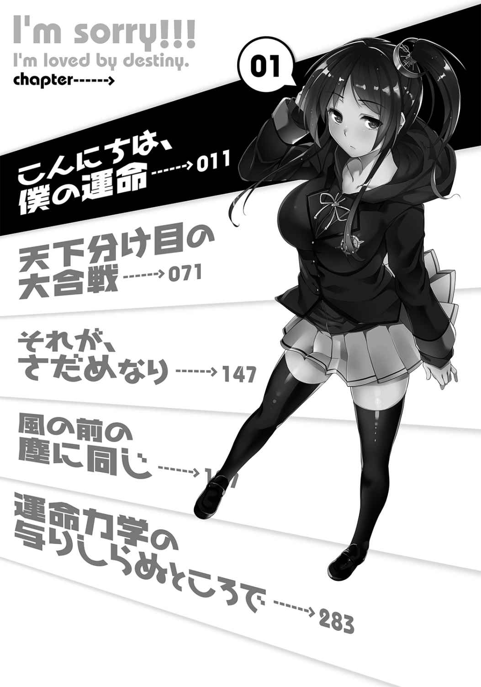
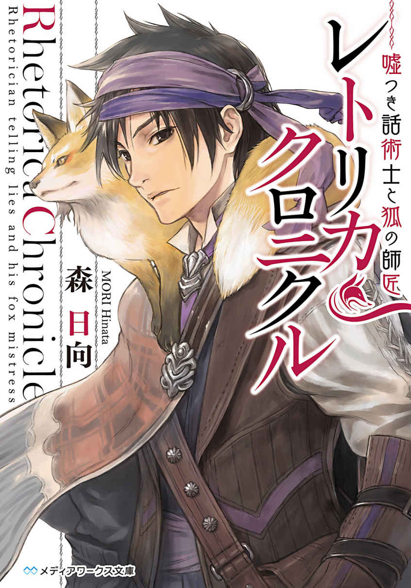

| 運命に愛されてごめんなさい。<運命に愛されてごめんなさい。> (電撃文庫) | |
| I of運命に愛されてごめんなさい。 | |
| うわみくるま | |
| (2015) | |
B00YRDQQX6 EBOK

本書（電子版）に掲載されているコンテンツ（ソフトウェア／プログラム／データ／情報を含む）の著作権およびその他の権利は、すべて株式会社ＫＡＤＯＫＡＷＡおよび正当な権利を有する第三者に帰属しています。
法律の定めがある場合または権利者の明示的な承諾がある場合を除き、これらのコンテンツを複製・転載、改変・編集、翻案・翻訳、放送・出版、公衆送信（送信可能化を含む）・再配信、販売・頒布、貸与等に使用することはできません。

我が校には、運命力学に従って、転校生が毎週月曜日にやってくる。
転校生は、体育館の壇上に立って予言を言い渡す。
その予言は運命力学が指すところの運命の告白であり──よって転校生の予言は、いままで外れたことがない。
抗っても無駄。運命は変えることができない。
なのに、大抵の当事者たちは、予言が告げられるとヒステリックに騒ぎ立てて、運命への抵抗を見せようとするのだ。
非常にみっともないったらありゃしない。
◇
今年度に入って二人の転校生がやって来た。
つまり、二回の予言がなされ、その二回とも当たり前のように実現している。
四月三日の転校生はこう言った。
『斉藤先生（国語教師）の頭髪は、近日中に消失します』
この予言を体育館で聞いていた斉藤先生は、とりあえず激怒した。そして、十分に危険が迫った、のっぴきならないおでこをてからせて、真っ青な顔をすると、その後の授業を放りだして、育毛剤の購入に走った。
それから数日のあいだ、斉藤先生は毛根マッサージのついでに授業に臨んだ。休憩時間になるとお手洗いに駆け込み、鏡の前で育毛剤をふりかけながら、愛娘よりも大切な自分の頭髪の無事を祈った。
しかし、運命は残酷だった。
育毛剤の使いすぎによる毛根への物理的ダメージと、突きつけられた運命に対する精神的ストレスによって、斉藤先生の頭はあっというまに禿げ上がった。
次に、四月一〇日の転校生はこう言った。
『三年一組のＡくんとＢくんは、近く恋人関係となります』
勿論、ＡくんもＢくんもノーマルな男性であり、その手の趣味はない。二人は当たり前のように抵抗した。
だが、運命を予告されてしまったがために、周囲は二人を色メガネで見るようになる。嘲る者、嫌がらせをする者、一部の腐敗した女子の好色な視線が、二人に襲いかかった。
ＡくんとＢくんは次第に追い詰められた。全寮制であるこの学校で、二人が安らかに過ごせる場所はどこにもなかった。
ノイローゼになりかけた二人であったが、その窮地を救ったのが、紛れもないお互いの交流だった。同じ苦労を味わう者同士、お互いの苦しみを熟知し、お互いの癒しになり得たのだ。
ＡくんとＢくんは数々の困難を共に乗り越えて、友情以上の感情を育んだのである。
彼らは校内でも指折りの名カップルになった。いまではとても幸せそうである。
まぁ、こんな感じで、運命に逆らうことがいかに徒労か分かって貰えただろう。
僕たちは人間であり、重力に逆らって空を飛べない。
これ同様に、運命に逆らっても、決められた結論からは逃げられないのである。
◇
さて、本日は四月一七日。月曜日。
転校生がやってくる日である。
朝のホームルームが終わり、一限目が始まる前。恒例行事として全校生徒が巨大な体育館に集合する。転校生を迎える集会が、そこで執り行われるからだ。
この集会は、祝日関係なく毎週月曜日にあり、転校生の予言を聞くことを目的としている。
僕も例に漏れず、出席番号順にならんでだだっ広い体育館にやってくると、大衆の中に収まった。二年生なので場所は体育館の中央辺りになる。
すぐに体育館の壇上に、校長先生が姿を現す。校長先生は聞くに堪えない話を三分だけ話すと、義務を果たしたと言わんばかりの誇らしい顔で、壇上から去って行った。
次に続くのは生徒会長の挨拶。
これは校長先生よりも幾分かマシである。
なぜならば、現生徒会長は三年一組の五十嵐優美センパイ。
性格と顔立ちはキツく、やたらめったらプライドが高い貴女であるが、なにぶん美人であることに疑いはない。腰まで伸ばしたストレートの金髪が揺れるたび、Ｍ属性の男子は思わずため息を吐いてしまうほどの美貌を持っている。それと、おっぱいが程良く大きいのが僕の好きなポイントだ。
話はお経のようにつまらなくても、美人を目にできるのだから、退屈だけはしなかった。
五十嵐センパイは、自分の権威を誇示する、上から目線の発言を一通り終えると、
「では、続いて──」
と話を本題に切り替えた。
皆の緊張がひっそりと高まる。体育館の中が凍り付いたように鎮まった。
これから起こることは、もしかすると自分に関係があるかもしれない。校長先生や生徒会長の与太話とは訳が違うのだ。
「今週の転校生の紹介です」
五十嵐センパイが厳かに述べ、「壇上へどうぞ」と袖幕に声をかけた。
ほとんど同時に、袖幕からひとりの女子生徒が現れた。女子生徒は、一三〇〇〇個の瞳が突き刺さるなか、毅然と壇上の中央まで歩んだ。五十嵐センパイの隣に並ぶ。
今回の転校生は小柄な子だった。
上背のある五十嵐センパイと比較すると、とても同じ高校生には見えない。歳の離れた姉妹のようだ。
落ち着いた色の頭髪は、左側の高い位置で結われ、馬の尻尾のようにゆらゆらしている。瞳は、くりっと丸くて可愛らしい。そして、スカートから伸びる華奢な太股がとてもいい。思わず頰ずりしたくなる。
「転校生の四一七さんです」
と五十嵐センパイは言った。
それに伴って転校生がぺこりとお辞儀した。
転校生の名前は、転校してきた日によって表される。今日は四月一七日なので、『四一七』というわけだ。これは運命力学に則ったことであり、疑念の余地はない。
「では、四一七さんに自己紹介と予言をしていただきます」
五十嵐センパイは転校生四一七と場所を交代する。
マイクの前に立った四一七は、もう一度深いお辞儀をした。サイドテールが前に倒れて、ぶらぶらと揺れた。
「あー、あー、どうも、おはようございます」
壇上のマイクスタンドを自分の高さに直した四一七は、平坦な調子で話し始める。
「本日から一年一組でお世話になります四一七です。よろしくお願いします。早速ですが、予言を話したいと思います」
簡潔すぎる自己紹介。
今週の転校生は実にクールな少女だった。あまり情緒的な人ではなさそうである。
予言についてはもう少し先だと思っていた全ての人間が、一斉に息を吞んで構えた。
巨大な体育館の全てが、次の言葉を待つ。
そして、四一七はおもむろに話を切り出す。
「──今月の末日に、生徒会長の座についているのは、二年三組の皐月純くんです」
僕の前に並んでいたクラスメイトが、思わず振り返って僕のことを見た。
それから、僕の顔と名前を知る人達が、次から次へと、僕の姿を探しだして驚愕の表情を作り上げる。
僕は一瞬、なんのことか理解に及ばなかったが、周囲の反応に遅れて理解が追いつく。
どうやら自分のことを言われているようだった。
「............僕が生徒会長？」
口に出して呟き、咀嚼して、吟味しても、実感だけは湧いてこない。
あまりにも突拍子がなく、現実味を帯びていない。
生徒会長といえば、全校生徒六〇〇〇人を束ねる生徒の長だ。数々の権限と独自の政策が許されており、学校を思いのままに支配することができるだろう。だが、もちろん民主主義によって決められる存在なので、危ない人間は当選することはできない。それに、リコール制度もあるし、次の選挙もあるので生徒の支持は常に必要ではある。
しかし、そういうことを差っ引いても、生徒会長が強権を持っていることに違いはない。
それが僕の掌中に転がり込もうとしているのだ。
今回ばかりは、さすがに外れるのではないかと疑ってしまうほど、絵空事な予言だった。
「そんなことありえませんわっ」
突然、ヒステリックな声が上がる。発言の主は五十嵐センパイだった。
皆の注意は、再び壇上へと引き戻された。
大抵、予言がなされたあとにヒステリーを起こすのは予言で名前を呼ばれた本人である。しかし、今回は少し違う。内容の規模が大きかった。
教師が禿げたり、恋愛絡みの小事ではなく。学校の運営に関わるだろう一大事である。
よって、名前を出された僕以外にも、副次的に多くの利害関係者が現れてしまったようだ。
その最たるは、壇上で取り乱している五十嵐センパイだろう。
「わたくしは先月に、正式な選挙戦を勝ち抜いて生徒会長に選任されました！」
五十嵐センパイは自慢の胸に手を当て、自らの正当性を必死に訴える。
「生徒会選挙は九月と三月の二回のみですの。いまは四月なのに、どうしてどこの馬の骨とも知れぬ輩が、あと二週間で生徒会長になれるというのですか!?」
「私に聞かないでくださいよ......」
五十嵐センパイに詰め寄られた四一七は、冷めた目つきで答えた。
しかし、頭に血が昇った現生徒会長は止まらない。
「噓ですっ。どう考えても、そんなことはありません！ 今回の予言は外れですわ。というか、あなた本当に転校生なのですか？ わたくしに嫉妬して、転校生を偽って噓の予言をしたんじゃないんですか？」
「なんで私がそんなことしないといけないんですか......」
酷い言いがかりをつけられた四一七は、嘆息を混じらせた。
「とにかく。たとえあなたが本当の転校生であったとしても、あなたの予言は絶対に当たりません。よろしいですね!?」
「はぁ、そうなんですか」
「なんですかその態度は！」
「うるさい人ですね............私、やることやったんで、これで失礼します」
終始クールに収めた四一七は、ぺこりと全体に向かって頭を下げると、規則正しい歩調で壇上から去って行った。
その背中に向かって五十嵐センパイは、
「お、覚えてなさい！」
と怒鳴り散らした。
ただの八つ当たりであり、負け犬の遠吠えだった。
まぁ、何はともあれ。
一番の当事者たる僕が、あんまり注目されることなく、四月一七日の予言はいつも以上に波乱を残して幕を閉じた。
◇
教室に戻った僕は、クラスメイトにひとしきり弄られたあと、一限目の授業が始まりやっと平穏を得た。
授業は現代国語。担当は斉藤先生である。
すべての頭髪をなくした斉藤先生は、天然のスキンヘッドを光らせて、朝から眩しい授業を展開している。
哀れ斉藤先生と思うかもしれない。
だが、斉藤先生はすでに開き直っていた。むしろ、頭のことを自虐ネタにあげるようになってから、人気はうなぎのぼりだった。廊下を歩いているだけで女子生徒に話しかけられるようになり、頭髪が存在していた頃よりもたいそう幸せそうに見える。このエロオヤジめ。
やたら活気のある一限目の授業を尻目に、僕は前の席に座る友人──北上聡士と、悦に浸っていた。
「ははは、よく分からんが僕は生徒会長になれるらしい」
「うむ。めでたいな。純が学校のトップになる日が来ようとは」
聡士はメガネのフレームを中指で押し上げながら爽やかに微笑んでみせた。
この友人だけは、嫉妬することなく素直に僕の幸運を喜んでくれる。顔も広いし、成績もいいし、機転も利く。僕よりも背が高くて女子にモテるところだけは欠点だが、それを差し引いても、唯一無二の親友といって差し支えないだろう。
「なぁ、聡士」
僕は頼りになる友人に相談をする。
「生徒会長って権力の塊だよな？」
「うむ。学校最高の権力者といっても過言ではないだろう。その席に座れば、学校を手に入れたのも同じだ」
「だよな。ってことはさ──」
と僕は声を潜め、
「酒池肉林も夢じゃない？」
「ふふふ、すぐ目の前に広がってるさ」
聡士は口の端を吊り上げて、にやりと笑った。
つられて僕の顔もほころぶ。
学校中の可愛い子を集め、メイド服を着せて、たっぷりとご奉仕してもらう──想像だけでもよだれが垂れる。
「そっかそっか。いやあ、どうしようかな～」
もう生徒会長になった気分で、言いしれぬ幸福感の中を漂っていると、今度は聡士が声を潜めて、
「おい純。分かってるだろ？」
「ははは、任せとけよ」
僕は親友の肩をばしばしと叩いて気前よく言った。
「僕が生徒会長になったら──聡士、おまえは副会長だ」
「さすが俺の親友！ 俺は、純のためなら身を粉にして働こうじゃないか！」
「ありがとう聡士！」
「礼には及ばないさ、純よ」
「学校のすべての可愛い子は」
「俺たちのものだ」
僕と聡士は堅い友情をさらに強固にするため握手を交わした。
後の歴史に語り継がれるだろう『現国の誓い』はこうして果たされたのだ。運命と親友に味方され、怖いものなしである。僕の行く手を阻む者は誰もいないだろう。
と、そのとき、教室のドアが乱暴に開かれ、
「二年三組。皐月純はどこだ!?」
屈強な男達が、どかどかと教室になだれ込んで来た。
学校の指定服がブレザーにもかかわらず、応援団のように学生服を着込んだ彼らは、誰もが知る風紀委員会である。風紀委員が率先して校則を守っていないのに誰も突っ込まないのは、風紀委員会がそれだけの力を持っている証拠だった。
「皐月純。皐月純はおらんのか！」
授業中にもかかわらず堂々と授業妨害した彼らは、僕の名前を声高らかに呼ぶ。
明らかに関わりたくない連中だ。
僕はなんとかやり過ごせないものかと思い、名乗り出なかった。
「皐月くんならあそこだよ？」
それなのに、現国の斉藤先生があっさりと僕の存在を暴露する。
禿げてしまえと先生のことを呪ったが、かの人はすでに坊主だった。
無意味な呪詛は空回りをし、人を呪った罰と言わんばかりに、屈強な男達が僕の前にやってくる。
彼らは、腕に付けた腕章を誇らしげにアピールし、
「我々は『風紀委員・実力部隊・鋼鉄の掟』である。五十嵐会長の命により貴様を拘束する」
と耳を疑いたくなるようなことを言ってのけた。
「はぁ？ 僕はなにも悪いことしてないぞ？」
「ほう、しらばくれるとはいい度胸！ これを見ても同じことが言えるのか!?」
風紀委員はビニール袋を僕の眼前に突きつけた。
袋の中にはパンツが入っていた。それも女性用のパンツ──世間一般的にいうショーツというやつである。
女の子のパンツに一瞬どきっとしたものの、本当に見覚えのなかった僕は首を傾げることしかできなかった。
こちらの反応の薄さに、風紀委員の顔が曇る。
「これを見てまだ知らぬ存ぜぬを通すか!?」
「いや、だって、実際、知らんし」
「いくら言い逃れをしようと無駄であるぞっ。このパンツはつい今し方、貴様の寮生室から発見されたものである」
「はぁっ!? ちょっと待てよ。僕の部屋に勝手に入ったのか？ いくら風紀委員でもそれは──」
「これが令状である」
パンツの次に突きつけられたのは一枚の紙きれ。五十嵐センパイの判子が突いてある。家宅捜査に対する許可書だった。この学校では、校長又は生徒会長の許可があれば、個人の寮部屋への家宅捜査が許される。校長ならまだしも生徒にそんな権限があるなんてやりすぎだ。
僕は啞然とした。
対する風紀委員は、事の次第を朗々と述べる。
「このパンツは、なにを隠そう五十嵐会長の御物である。会長は、先日パンツの盗難に遭ったと、今日になって被害届を提出された。しかも、犯人の目星もついているということ。我々は、会長の指示通りに貴様の部屋を捜索したところ、このパンツを発見したのだ」
「どう考えても生徒会長の自作自演じゃないか！」
「うるさい黙れ、言い訳は聞きたくない！ 全ては美人のいうことが真実である！」
風紀委員は一喝した。
こいつらが風紀委員である限り、学校の風紀は乱れ放題だと思った。僕が生徒会長になった暁には、ただちに人員の入れ替えをしようと決意する。
しかし、今は悠長に未来を見据えている状況ではない。なんとかこの状況を打破しなければ............と思うが、なにせこいつらには理屈が通じそうにない。説得の糸口が摑めなかった。
「とにかく僕は無実だ」
「なるほど、あくまで白を切り通そうというわけか」
テコでも罪を認めない姿勢を貫く僕に対して、風紀委員は不意に重苦しく息を吐いた。何事かと身構える僕を見やりつつ、腕を組んでしばし黙考。そして、
「貴様は五十嵐会長の生パンツが欲しいと思ったことはないのか？ ちなみに俺はいつも思っているぞ」
突然そんな質問をしてきた。
僕は一時考える。そりゃ、五十嵐センパイは美人である。彼女のパンツが欲しいと思ったことは何度かある。
だけど、盗もうと思ったことなんて一度もないとはいえないけど、実行したことは、本当に一度だってない。思春期の男子は、みんな悶々としながら己と戦っているのだ。
そんな想いが滲み出し、
「な............くはないけど............」
そう言葉を濁したのが間違いだった。
風紀委員は制服の内ポケットからＩＣレコーダーを取り出してスイッチを切る。
「よし、録音完了。黒、確定。連行しろ！」
僕は屈強な男達に両脇を挟まれて、無理やり席を立たされる。
「あ、このっ、謀ったな！ ちょ、ちょっと待て......やめろ、放せ。証拠不十分だろ」
「詳しい話は、尋問の際に述べるがいい」
「横暴だっ。これは権力の暴走だ！ 生徒会長であっても許されることじゃないぞ！」
「静かにしろ。今は授業中であるぞ」
足を床に付けることができず、そのまま廊下へ連れ出されようとする。
僕は一縷の望みを宿して、誓いを立てた友人に手を伸ばした。救いの手を求める。
「さ、聡士っ」
「............」
しかし、聡士は目を合わせてくれなかった。対岸の火事のように興味のないふりをしていやがった。僕は親友に見捨てられたようだ。
「あ、こら、他人のフリするな！ 誓いはどうした!?」
「これ以上、無駄な抵抗をするんじゃない」
無茶苦茶に暴れて、色んな不条理を訴えたが、けっきょく誰にも受け止めて貰えないまま、僕は連行された。
◇
僕は風紀委員会専用の建物までしょっ引かれ、建物の地下にある独房へと放り込まれた。
独房の中は薄暗く、じめじめして、底知れぬ恐怖が隣に座っていた。
「これは陰謀だ！ 僕は生徒会長に嵌められたんだ！」
僕は鉄格子を握って、力の限り叫んだ。
しかし、暗闇と静寂に吸い込まれたように、叫びは虚しく地下を反響するばかり。
近くに人の気配は感じられない。完全に孤立無援に陥ってしまったようだ。
僕は寂しさのあまり、膝を抱えて丸くなった。
っていうか、こんなことで僕は本当に生徒会長になれるのだろうか？
早くも雲行きが怪しくなってきた。
今まで善行でも悪行でも目立つことのなかった自分。それが今日の予言によって、一躍有名人になった。そして、バラ色の高校生活が待っているはずだった。なのに、あらぬ疑いをかけられ一転。今では囚われの身である。
仮にここから逃亡できたとしても、パンツを盗んだ変態野郎として、僕は周囲から排斥されてしまうだろう。僕が近づいただけで、女子は目を背けて逃げていく。すると、女子とあんなことやこんなこともできなくなる......。
ああ、なんてこった。
運命とはなんと残酷なのかと思う。
僕には目の前に立ちはだかるこの障害は乗り越えられない。
そんな気がした。
このまま貝になりたいと思った矢先。
「あら、殊勝な態度ですこと」
不意に声をかけられ、僕は顔を上げる。
鉄格子を挟んで、生徒会長の五十嵐センパイが立っていた。他の人の姿はない。
「わたくしのパンツを盗んだ皐月純で間違いないわね？」
「僕はやってない」
「ええ、分かっていますわ」
五十嵐センパイは嘲笑しつつそう答えた。
「やっぱりあんたの企みか！」
僕はバネのように跳び上がり五十嵐センパイに詰め寄ろうとするが、鉄格子が邪魔でそれより先に行けない。悔しさのあまり歯をむき出して威嚇する。
「あらあら、少し落ち着いてくれないかしら」
呆れたようにわざとらしく嘆息する五十嵐センパイ。余裕綽々の態度である。まさに高みの見物といったところだろう。
こっちの気はより一層逆立つ。
「あんたは生徒会長の座に相応しくない！」
僕の発した一言が、五十嵐センパイの表情を壊した。
瞬く間に不機嫌づらになる五十嵐センパイ。形のよい眉がやや吊り上がり、
「五月になったら釈放してさし上げます。もちろん、生徒会による正式な謝罪つきで」
と、そんな提案を述べてきた。
てっきり罵声でもぶつけられるのではと身構えていた僕は呆気にとられるが、すぐに彼女の目論見に気づいた。
「なるほど。僕を四月末まで拘束しておくつもりなのか」
転校生の予言では、この僕が四月末までに生徒会長に就任するという話だった。つまり、四月末までに生徒会長にならなければ予言は外れるということだ。ゆえに、それまでのあいだ閉じ込めておけば、僕は生徒会長になりようがない。自分の権力は守られる。そういう腹積もりなのだろう。
「ええ、その通りですわ」
あっさりと肯定した五十嵐センパイは、悪びれるようすも見せなかった。
この人は権力への執着が相当ありそうだ。もしかすると先月の生徒会選挙でも、対立候補へのあくどい妨害工作を仕掛けたのかもしれない。
そういえば敵対陣営のスタッフが、選挙期間中、次々とパンツ泥棒の不祥事を起こしていた。いまから思えば、五十嵐センパイの策略だったのかもしれない。
綺麗な花には棘があるとは、まさにこのことだろう。
「だが、そんな提案に素直に従う理由はない」
僕は憤然たる態度でそう言い切った。
「あらあら、自分の立場がわかっていないのですわね」
「僕には皐月四天王という優秀な部下がいる。もうすぐ助けがやってくるだろう」
見え透いた虚勢を張ってみた。
「皐月純。あなたのことは大方調べてあります。あなた、あんまり性格がよろしくないようですわね」
「あんたに言われたくない」
「四人も友人はいないでしょう？」
「............」
痛いところを突かれ、胸の内側が疼いた。
いや、べつに友人が少ないのは僕の性格の問題ではない。どこの部活にも入っておらず、委員会にも所属せず、放課後と休日は自室でネットとゲームをしているから、交友関係が広がらないだけであって、作ろうと思えばいくらでも友達を作ることができる。
そこら辺を勘違いしてもらっては困る。
精神的優位に立ったと勘違いした五十嵐センパイは、再び勝ち誇ったような表情で、
「わたくしも鬼ではありませんわ。あなたにだってメリットが必要でしょう」
「......メリットだと？」
「ふふふ──生徒会の書記補佐の役職なら用意できますの。他の高校と違って、我が校の書記補佐は重職ですわ。書記補佐の補佐が五人就きます。お好きな人選にして頂いて結構です」
「......ふむ」
可愛い子が五人自由に選べるということか............最低の提案だが悪くない。
だが、すぐには首を振らない。より多くを引き出させようとする。
「もちろん。生徒会に所属したのですから、学生寮も生徒会御用達の専用住居に移れますの。一部屋一〇〇㎡。内線ワンコールで、数々のルームサービスが受けられます」
「......そうかそうか」
「学食でも専用の個室が用意され、最高のスタッフによる贅沢な一品を楽しむことだってできますの」
「......なるほど」
「なんならわたくしのパンツだって差し上げますわ」
「！」
欲望のおもむくままに首を縦に振りそうになって、寸前のところで堪える。僕は内心の動揺を隠しながら、重々しく言う。
「......この痴女め。権力の為なら、己のパンツとて厭わないというのか」
「ええ、まったくその通りですわ」
五十嵐センパイは涼しげに微笑み──次の瞬間、自分の太股をなぞるように、両手を下からスカートの中に入れた。
五十嵐センパイの両手は腰の辺りまで上がり、スカートの内側に隠されたブツをそっと摑む。それを、するっと足首まで下ろした。
生パンツが現れた。
五十嵐センパイは、右足、左足の順番で、パンツの穴から自分の足を焦らすようにゆっくりと抜いた。
「お......おおっ......」
僕は興奮した。姿勢を低くして、スカートの中身が見えないものかと頑張ったが、思うように見えない。草原が見えない。
「ほら、パンツですわよ？」
五十嵐センパイは人差し指と親指でパンツを摑み、僕の目の前でゆらゆらさせる。
僕は鉄格子の隙間から手を伸ばして、ほかほかの生パンツを摑み取ろうとした。
しかし、寸前のところでパンツは奥に引っ込んでしまう。ギリギリ摑みそこなった。
「なにをするんだ早くよこせ！」
「つまり、要求を吞んでくださると？」
「まずはパンツだ！ それとスカートの中身、ちょっとだけ見せてください！」
僕はお願いすると同時に身を屈めた。
「ひやっ......」
驚いた五十嵐センパイはとっさに後ろに跳んだ。スカートが空気を含んで舞い上がるが──惜しい。ぎりぎり中身が見えなかった。
「まあっ、なんて方ですか......そこまでわたくしの下半身にご執心なのですか。でしたら、もう一度言いますわ。このパンツのため、要求を吞んでくださいますか？」
「パンツは貰っておこう。ただし、生徒会長になるのはこの僕だ」
ここまで引っぱっておきながら、それでも僕は相手の提案を吞まなかった。
生徒会長になれたらそれ以上の甘い汁を吸えるのだ。より高みを目指せるのに、書記補佐程度で満足するはずがなかろう。僕を馬鹿にするな。いいからパンツ。
「なるほど......話の分からない猿ですこと。やはり、自分の立場が分かってないようですわね」
五十嵐センパイはパンツを握り締め、その拳がわなわなと震える。
美しい笑顔の下に怒りが見て取れた。業火のようにめらめらと燃えさかっている。相当お怒りのご様子だった。
だがしかし、彼女の横暴な振る舞いに、僕は端っから怒り心頭しているのだ。
「ふん、笑わせるな。自分こそ身の程を知れ。そして僕にひれ伏すがいい。運命は僕の味方だ。それ以上のなにが必要だというんだ？」
「っ............」
転校生の予言を持ち出すと、さすがの五十嵐センパイも声を詰まらせる。
今まで外れたことがないという転校生の予言。それを覆すことが果たして可能なのか、五十嵐センパイも半信半疑なのだろう。ゆえに、いとも容易く精神が揺らぐのだ。
そして、裏を返せば、それは僕の心の旗印となっている。
「さあ、生徒会長。今のうちに降伏したほうが賢明じゃないのか？ 今なら、そうだな────書記補佐の地位ならくれてやってもいいぞ？」
「ふ、ふざけないで！」
ついに五十嵐センパイは、なりふり構わず怒りを露わにした。唾を容赦なく飛ばし、
「転校生の予言がなんだって言うのですか！ わたくしは絶対に、今の地位を死守しますわ！ どんな手を使ってでも！」
「それは楽しみだ。あんた如きにできるものならやってみな！」
「何者でもない一般生徒の分際で、なにを偉そうなことを！」
「それは昨日までの自分だ。僕はなんの努力もなく運命に好かれたんだよ。ざまあみろ！」
「小癪なっ..................もういいですわっ」
これ以上話しても無駄だと悟ったのだろう。
五十嵐センパイはパンツを握ったまま、肩で息をして去って行く。
と、僕の視界から消えるまえ、
「あなたも覚悟なさいっ！」
五十嵐センパイは隣の独房に向かって、そんな八つ当たりめいた言葉を吐き捨てた。それから、大股でずんずんと立ち去った。けっきょくパンツは貰えなかった。
足音が完全に聞こえなくなったことを確認して、
「誰かいるのか？」
隣の独房に向かって声をかけてみた。
すると、
「最低の会話の応酬でしたね」
冷凍庫で凍らせたようなクールな声が聞こえてきた。女性のものである。つい最近、どこかで聞いたことがある声だった。
「ああ、そうだとも。生徒会長は最低の奴だ」
「あんたも大して変わりませんよ」
「そんなことないだろう」
「自分のことって、主観じゃ分かりませんからね」
「む......」
冷静な言葉に指摘されて、頭が少し冷えた。
さっきまで血が逆流した者同士の応戦だったので、急に現実に戻された気がして肌寒かった。
「あなたが皐月純くんなんですか？」
疑問というよりも確認のための声が響く。
「ああ、そうだ。僕が次期生徒会長だ」
「えらい自信ですね」
「もちろん。なにせキミが教えてくれたことだ」
僕は、隣の独房にいる少女の正体に気づきそう言った。
「そうなんですか」
面白い反応を期待したが、実際返ってきたのは実に冷めた感想だった。
四月一七日の転校生──四一七は、打っても響かない人間のようだ。
「ところでキミはどうしてこんなところにいるんだ？ なにか悪いことでもしたのか？」
「転校生身分詐称罪で連行されました。でも、私、皐月純くんとは違って無実です」
「僕だって無実だ！」
「あ、そうなんですか。いきりたって否定しますね。まるで、やましいことがあるみたいです。ところでなんの罪で連行されたんですか？」
「パ────」
パンツの盗難罪と答えようとして思いとどまる。
「────いや、なんでもない。でっち上げられた罪だ。このさいなんでもいいさ」
「ふーん。生徒会長のパンツを盗んだ罪ですか」
「知ってるじゃないか！」
「だって、最初から話聞いてましたし」
「............」
四一七はなかなかの曲者だった。しかも、年上の僕に向かって敬意が感じられない。
そんな態度だから、五十嵐センパイの怒りをモロに買ってしまったのだろう。体育館の壇上でもそんな感じだった。自業自得と言えよう。
僕が口を閉ざしたことにより、沈黙が流れた。
隣の独房から追撃の台詞はやってこない。
四一七は、自分から率先して喋るタイプではないようだ。
しばらく無言が続いた。
時計がないので正確な時刻は分からない。
けど、腹の虫の鳴き具合で、昼前であることは想像できた。
「お腹へったな......昼飯って貰えるのかな？」
僕が呟くように疑問を漏らすと、
「さあ、知りませんよ」
四一七の冷たい声が返ってくる。
台詞は相変わらず素っ気ない。
だけど、言葉を返してくれるあたり、四一七も寂しいのかも知れない。そう考えたら、少しだけ彼女のことが可愛らしく思えてきた。
ひとりで思考を繰り返すのも飽きていたので、僕は考えていることをそのまま口に出してみる。
「っていうか、そろそろ助けが来てもいい頃合いなんだけどなぁ......」
「アテはあるんですか？」
「明確なアテはない」
「そうなんですか」
「しかし、まったく問題ない。だって僕は生徒会長になるんだ。運命が味方してくれる。必ずここからも出られるさ」
「ポジティブですね」
と言った四一七の口調には含みがあった。明らかに人をバカにしている。
「投げやりだなキミは」
対抗するように僕も彼女に指摘した。
「まぁ、皐月純くんの主張には、論理性を感じられないので」
「おいおい、運命を前に論理性を重視するのか？」
と僕は笑う。
そして、すぐに自分の発言に疑いが生じた。
「............」
ちょっとだけ思案に入る。事実確認をしよう。
運命は人の形をしていない。大原則である。
こっそりと風紀委員会に忍び込んで、独房を開けることは人間にしかできない。
運命は僕の味方である。これも大原則である。
だが、友人は僕の味方であるのだろうか？
僕の脳裏には、救いの手を求めても差し伸べてくれなかった親友の姿が思い浮かんだ。あいつは許さん。
しかし、聡士を除いて誰が助けに来てくれるのか？
そもそも冷静に考えてみると、聡士以外に胸を張って友達といえる人物に心当たりがない。すっかり忘れていた。
「あれ............もしかして、生徒会長の提案を受けたほうがよかったかな？」
僕は愕然とした。
「脆い自信でしたね」
「ほっとけ............」
僕は頭を抱える。
心の中に浮かんだ黒染みのような疑念は、水槽に落とした黒インクのように広がった。疑念はやがて疑惑を招き、疑惑は根拠のない確信を生んだ。
確信が絶望に変わり始めようとしていたとき。
遠くで扉の開く音がする。
足音が聞こえ、ゆっくりとこちらの方へ近づいてきた。
校則違反の学生服に身を包んだ風紀委員らしき男が現れる。
「──昼食だ。ほら、さっさと食べろ」
そう言いつつも、風紀委員はなにも食べられそうなものは持っていなかった。五十嵐センパイの差し向けた嫌がらせだろうか。
しかし、問題の風紀委員は、昼食の代わりに分厚い鍵束を手にして、
「ほら、いくぞ」
がちゃりと独房の施錠を解き、扉を開いた。
「え？」
僕は驚いて、顔を上げ、風紀委員をよくよく観察する。
親友の聡士が風紀委員の恰好をしてそこにいた。
「聡士！」
「アホ。声がでかい」
「す、すまん。しかし、どうしてここに？」
嬉しさ半分、驚き半分でそう訊ねると、
「友を助けるのに理由はいるのか？」
聡士はさも当たり前と言わんばかりの口調でかっこよく述べた。
「聡士！」
僕は感動して、落涙して、生涯の友になるだろう人に抱きついた。
持つべきものは一〇〇万の友よりも一人の親友である。
ふたりはしばし熱い抱擁を交わし、ふと冷静になり、気色悪さを感じて離れた。
「よし、それじゃ逃げるぞ、純」
「ちょっと待って」
先に行こうとする聡士を、僕は呼び止める。
「どうした。悠長に構えてる時間はないぞ？」
「彼女も助けよう。なにせ可愛い」
そう言って、隣の閉ざされた独房を見やる。その中には大人しく女の子座りをしている四一七の姿があった。
「......いえ、私のことは気にしなくてもいいですよ」
投獄されたというのに、随分と落ち着いているご様子だった。しかし、五十嵐センパイの横暴によって囚われた少女を放っておくわけにはいかない。
「この機会を逃したら、いつ釈放されるか分からんぞ。さあ、一緒に行こう」
「足手まといになると思いますよ、私」
四一七は、謙遜ではなく本当にそう考えて言っているようだった。
自己評価が随分低いようである。ちょっと心配だ。とりあえず、五十嵐センパイの魔手から救い出してあげたい。
「ふむ。転校生も囚われていたのか──確かに転校生は一人でも多く確保しておくべきだな」
戻って来た聡士が、四一七の存在に気づいて、こっちも冷静な判断を下す。
転校生には秘められた力が内包されており、それは「運命力」と呼ばれている。運命力は運命に干渉できる力であり、様々な器機の動力源にもなり得る万能エネルギーである。これは運命力学に則ったことであり、疑念の余地はない。
よって、我が校において転校生は抗争には欠かせない。
そういう戦略的な意味を含めて、聡士は四一七を連れて行くことにしたのだろう。
聡士は鍵束からひとつの鍵を選び出し、四一七の独房を解錠した。
鉄格子の扉が軋みをあげて開く。
僕は体半分だけ独房の中に入ると、未だ座ったままの四一七に手を差しだした。
「さあ、早く」
「............では、お言葉に甘えます」
四一七は僕の手を無視して立ち上がった。お尻を叩いて埃を払う。
「さあ、僕の手を握って」
僕は諦めなかった。
すると、四一七は顔色ひとつ変えず、
「人のパンツを欲しがるような人は──ちょっと無理です」
辛辣かつ適切な意見を提示される。
それを言われては反論できない。あまり好感度が高くないようだ。ちょっとだけショックだった。脈ありだと思っていたのに。
「おい純。どんなセクハラをしたんだ？」
「誤解だ。それよりも急ごう」
訝しむ親友の疑念が深まらないうちに、僕は早急に話題を変え、踵を返した。
後ろから四一七は静かについてくる。
薄暗い地下室から脱出。
階段を登り、重たい鉄格子の扉をくぐる。
その先には、見張りの詰め所があり、しかし、今は誰もいなかった。
僕が疑問を口にするよりも先に、聡士が説明する。
「友人に協力して貰ったんだ」
「なるほど。僕の友は聡士だけだが、聡士の友は沢山いるんだな！」
言っていて悲しくなってきた。
聡士は、僕の肩に優しく手を乗せ、それには触れずに続きを話す。
「皆には外で騒ぎを起こして貰っている。俺と数人はその隙にここに乗り込んで、邪魔者を排除したんだ」
「僕のためにそこまでしてくれたのか！」
「ああ、もちろんだとも」
親友は爽やかな笑みを浮かべて親指を立てた。
相変わらず格好いいメガネだ。
しかしと、聡士は続ける。
「騒ぎが大きくなりすぎた。風紀委員会では手に負えず、治安維持部が出動したようだ。何人か捕まって投獄されるかもしれない」
「僕はみんなの犠牲の上に立ってるんだな......」
「うむ、そうだな────だが悲観することはない。純が生徒会長になれば彼らの犠牲も無駄にはならない」
「うん。みんなには相応の地位を約束しよう」
僕のために戦ってくれる皆の期待に応えるべく、僕たちは急いで風紀委員会の建物を出た。
◇
その後、周囲に気を遣いつつ『田中食堂』を訪れた僕たちは、そこで少し遅い昼食を摂る。
白滝学園の在校生は約六〇〇〇人。それに教師を合わせると六五〇〇人もの人間がこの土地で暮らしている。必然と生活に必要な施設はひとつでは事足りず、白滝学園の広大な敷地には飲食店、雑貨屋などの店舗がいくつも存在している。
田中食堂は学校に一〇カ所ある食堂の中で一番不味く、人が寄りつかない。表道を歩けない生徒が密会するには最適の場所である。
「とりあえず身を隠す場所を用意した」
不味いラーメンを食べながら、聡士は薄汚れた鍵を僕に渡す。
「ありがとう。それで、これはどこの鍵？」
不味いオムライスを食べながら、僕は有り難く鍵を受け取った。
「第三体育館倉庫だ」
第三体育館といえば、剣道部や柔道部などの武道系の部が使っている。部活動専用の体育館だ。そこの倉庫ならば、少なくとも放課後までは誰にも見つかることはないだろう。
僕と聡士が、第三体育館までの安全なルートについて議論していると、
「あの」
不味いカルボナーラを食べていた四一七が言葉を挟む。
転校初日からこんなものを食べさせられて怒り心頭なのだろうかと思ったが、
「この度はありがとうございました」
四一七は殊勝にもそうやって礼を述べた。
「なに、気にすることないさ」
僕は気さくに言った。
「それじゃ私は、これで失礼します」
四一七は僕の方なんて見もしないで席を立った。
「待つのだ転校生よ」
去ろうとする四一七を聡士が呼び止める。
四一七は動くのを止め、聡士を見た。僕が言っても聞いてもらえなかっただろうなと、薄々感じて鬱になった。
「なんですか？」
「君も隠れるべきだ。いま生徒会長に見つかったらなにをされるか分かったものではないぞ？」
聡士はメガネを中指で持ち上げる。レンズがきらりと知的に光った。
「と、言われましても」
「なに、放課後まで純と一緒にいてくれれば、それまでにちゃんとした場所を探しておく。放課後までの辛抱だよ」
その言い方だと、まるで四一七が僕と一緒に過ごすことを嫌っているみたいではないか。
抗議の声をあげようとしたが、そのまえに、
「放課後までなら............」
と、四一七は遠回しに僕を傷つけながら了承した。
◇
第三体育館倉庫の中は、予想通り薄暗く、じめじめして臭かった。剣道部の防具やら、柔道部の畳がしまってあるせいだろう。正直、独房の方が快適だった。
しかし、まぁ、親友が僕たちのために用意してくれた場所である。文句なんていうものじゃない。独房に残っていたら今頃、風紀委員の尋問に晒されていたかもしれないのだ。
放課後まであと二時間くらい。
暇を持て余した僕は、倉庫の隅っこでウンともスンとも言わない四一七のもとへ擦り寄った。
「やあ、この臭いは馴れないね」
適当に話を振ると、体育座りをして自分の膝に顔を埋めていた四一七は、そのままの姿勢で、
「本当です。あまりの臭さに鼻がよじれそうです。皐月純くん臭いんで息をしないでください」
と、あまりにも酷い暴言を吐いてくる。
僕のガラスのように脆い心は、粉々に砕け散りそうになった。可愛い女の子にそんな台詞を吐かれては、ピュアな男子諸君であれば割腹自殺を図ってしまうだろう。手元に刃物がなくてよかったと、心から安堵した。
だけど、これ以上彼女に話しかける勇気は根こそぎ消え去り、僕はもとの位置へ帰ろうとすると、
「あ、傷つきましたか？」
四一七は当たり前のことを訊いてきた。
「もちろん。死のうかと思ったよ」
僕は胸の内を告白した。
すると、四一七は顔を上げ、小動物的愛らしさをもった可愛い尊顔をこちらに向けてくる。
「すみません。ほっとすると口がいつも以上に滑るんです。ただの暴言ですから気にしないでください」
「無茶な相談だな。こう見えて僕の心はか弱いんだ」
「ノーテンキな見た目なのに意外ですね」
「ほら、そうやってキミは僕を傷つける」
「失礼しました。もう少し心を強く持ってください皐月純くん」
四一七は眉ひとつ動かさず、代わりに毒を含んだ舌だけを軽快に動かした。
反省の色はない。
むしろ、声音だけを聞けば楽しんでいるようにも聞こえる。
まぁ、こんな薄暗くて臭い空間の中で、楽しいならそれに越したことはない。
僕は年上の寛大さを発揮して、可愛い後輩の可愛い顔に免じて無礼を許した。未来の生徒会長様は懐が深いのである────そうでも思わないとやってられない。
今の話題を続けると心が挫けてしまいそうなので、僕は無理やり話を変える。
「ところでさ、キミのことシイナって呼んでもいいかな？」
「唐突ですね。まぁ、いいですけど」
「あ、いいんだ」
あっさり承諾された。てっきり嫌がられるかと思ったのに。
「転校生の名前って呼びにくいですからね。他の転校生の話では、転校して一週間もすると、クラスメイトには愛称で呼ばれるらしいので」
「そっか。うん、よかったよかった。じゃあ、シイナで異論はないんだね？」
「はい。なんの捻りもない語呂合わせですよね？ 分かりやすくていいじゃないですか」
「......ほっとけ」
随分素直だと思ったら、やっぱり嫌みが飛んできた。
四一七もといシイナ。彼女は果たしてクラスに溶け込むことができるのか心配になった。
「ところで話を変えたいと思います。いいでしょうか純くん」
今度はシイナの方から話題提供してきた。地下牢から今までの間で初めてだと思う。僕はちょっとだけ嬉しくなった。
「なになに？ どんどん話してよ」
期待を込めて先を促す。
「転校生って多いに越したことはないんですか？」
「えっと？」
「地下牢で北上さんが言ってました」
「ああ、そうだったね。聡士の言い方は冷たかった。気にすることはないよ」
「いえ、そこら辺は気にしてないです。それよりも意味が分からなくて」
そう言ったシイナの顔は大真面目。冗談を言っているようには見えない。彼女は自分の価値を認識していないようだった。
「なにを言ってるんだよ。キミは転校生じゃないか。転校生は運命力を持ってるんだろ？」
「ええ。なんか、そんな力があるとは聞かされてます。純くん達にはないんですか？」
「もちろんないよ」
「どうしてですか？ 同じ人間なのに？」
「ふむ、言われてみればどうしてだろうね？」
「こっちが聞きたいです」
「でも、転校生がなんかよく分からんけどすごいのは常識なんだけどな」
「ふんわりした認識ですね」
「仕方ないよ。常識だからさ」
「常識ですか......」
シイナは神妙に考え込んでしまう。
当たり前の常識が抜けている転校生。果たして全ての転校生がこんな感じなのだろうか。
いままで転校生と同じクラスになったことがないし、部活もやってないのでクラスメイト以外と関わる機会は皆無だった。よって、そこら辺のところはよく分からない。
「まあ、でもさ。分からなくてもここで生活していたら、そのうち分かるよ。なんでも僕に聞いてくれていい」
ちょっとしょんぼり気味のシイナに優しく声をかける。
すると、シイナは肩を竦めて言う。
「ありがとうございます。純くんに訊いてもアテにならないでしょうけど」
「なんで余計な一言を付けるかなぁ」
「すみません。性分なんです──それはともかく、外がにわかに騒がしくなったと思いませんか？」
「え？」
「ほら、耳をすませてください」
シイナは手を耳元に当てて、外の音に耳をすませる。
僕も言われた通りに息を殺して、聴覚を倉庫の外に集中させた。
「────微かに話し声が聞こえてくる」
シイナの言ったとおり、第三者の気配があった。
内容までは聞き取れないが、複数の人間が言葉を交わす音がする。
「純くんの唯一の友達さんと、純くんの唯一の友達さんの友達さんでしょうか？」
「引っくるめて僕の友達でいいだろ」
「それは事実に反します」
独房での僕と五十嵐センパイの会話を、優秀な記憶力で覚えているシイナ。だが、自分の能力の使いどころを激しく間違えているといえよう。
それはともかく、僕は傷つきながらも冷静に考える。
「......まだ放課後まで時間がある。聡士がくるには早すぎる」
「でしたら生徒会の手先でしょうか？」
「うーん............」
シイナのいうとおりその可能性がもっとも高い。
僕たちが脱獄したことは、五十嵐センパイもすでに知っているだろう。そうなれば、あの権力の虜のことだ。血眼になって僕のことを捜しているはず。ここが生徒会に包囲されていてもなんら不思議じゃない。
「............ちょっと様子を見てくる。シイナは奥に隠れててくれ」
「いえ、私が見てきますよ。純くんは生徒会長になる予定なんですから、ここで捕まっちゃいけないんでしょ？」
「だとしても可愛い女の子を危険に晒すわけにはいかんのだ」
僕は親指を立て、かっこよく言ってみた。
「はぁ、そうなんですか」
だが、シイナの反応は薄かった。感銘を受けているようにはみえない。
自分ひとりが意気込んでいて滑稽に見えた。
僕はごほんと咳払いをする。そして、今考えた理屈を並べてお茶を濁す。
「なに。僕はシイナのくれた予言を信じてる。だから、これからどんなことが起こっても、僕は必ず生徒会長になることができるのさ。言わば、僕の身の安全は四月末まで保障されているんだよ」
「............ですか。まぁ、どんな拷問を受けようとも、生きてさえいればなんとかなるものですからね」
「怖いこというなよ」
「では、よろしくお願いします。私、隠れてますから」
ぺこりとお辞儀をして、シイナは予告通り、倉庫の奥へと姿を隠した。
やっぱり見に行ってくれないかなと、言える雰囲気ではない。
「......よし、いくぞ」
僕は意を決した。自分の背中には守るべきものがあると、思い込むことにする。
倉庫の内側から掛けていた鍵を解錠して、扉を一センチくらい開く。眩しさに目を細め、隙間から外の様子を覗いたと同時に、突然、指が隙間に差し込まれた。倉庫の扉が一気に開け放たれる。
「ひっ──」
僕は腰を抜かして尻餅をついた。
外には白い装束を纏った正体不明の連中が群がっていた。一クラスぶんほどの人数がいるだろう。
「ひ、人違いだっ。僕は皐月純じゃない！」
あとずさりながら喚いていると、
「ご安心くださいませ、運命に導かれし殿方よ」
白い群集が真ん中から二つに割れ、その中央から一人の少女が姿を現した。
少女は白いベールを被り、神仏に仕える神官のような出で立ちだった。ふわふわっとした長い髪とグラビアアイドルのような体付きは、どことなく柔らかい印象を感じさせる。そこには敬虔なイヤらしさがあった。
「どうかお立ちください」
少女は清水のごとく柔らかな音色で言った。白く透き通った手を、こちらに差し出してくる。
「............あ、ありがとう」
しばらく迷った末、僕は少女の手を取って立ち上がった。
それから間を置かずして、初めに訊かなければならないことを訊く。
「キミたちは何者なんだ？」
「我らは〈運命に従う会〉です」
「......運命に従うかい？」
「運命に従う・会です。転校生の予言を尊重し、それに抗うことを悪とする、運命力学をこよなく敬愛する、運命にこの身を捧げることを誓った人々の集まりです」
少女は迷いなく言った。
「......なるほど」
妙な連中が現れた。話しぶりと格好から察するに、運命力学を崇拝するカルト集団であるようだ。
運命力学は未来予知を実現した学問であり、それ故、単なる学問と考えず信仰の対象とする人間も少なからずいる。この学園にもそういった人間の集まりはいくつかあった。転校生と廊下ですれ違うたび跪いてお辞儀したり、月曜日の集会の前に校庭で円陣を組んで降臨の儀式を行ったり、彼らの奇行は枚挙にいとまがない。
きっと彼女達もそういう団体の一つなのだろう。けれど生徒会の手先ではなさそうなので、ひとまず安心する。
「わたしは〈運命に従う会〉の総帥、大郷苺です。気安く苺ちゃんと呼んでください」
「うん、分かったよ苺ちゃん」
「ありがたき幸せでございます」
苺は、深い信仰心からくるであろう安らかな微笑みを浮かべた。そのうっとりとした瞳には、男心をくすぐられる魅力があるが、目の焦点が合っていない。
苺も、その後ろに控える会員たちも、一様に世界の終末を見据えているような目をしていた。
関わってはいけないオーラがびんびんと放たれている〈運命に従う会〉。
しかし今は退路がない。僕は覚悟を決めて、苺とのコミュニケーションを図る。
「それで、僕になにか用なのか？ っていうか、どうしてここが？」
立て続けの質問にも苺は嫌な表情ひとつ見せない。むしろ至福を得ているように破顔して、おもむろに話を切り出してくる。
「運命に逆らうことはとても愚かなことです」
哲学的というよりは盲信的なニュアンスを含んだ話の切り口。
僕は寒気を感じつつも、話の続きを促した。
苺は朗々と語る。
「かつて、運命力学が確立されなかったころ。我々の生は、とても不安定なものでした。つねに暗闇の中を模索しながら拙い足どりで進んでいたものです。世界の行く末が分からないことに恐怖した我々は、ときに他者を傷つけました。ときに自己の生を捨ててしまいました。ときに公共性を忘れました。ときにソシャゲーで重課金をしてしまいました。しかし、そんな時代はすでに終わりを迎えたのです。なぜならば、我々には転校生の予言があり、もうなにも迷う必要がないのです。暗闇に光が差しました。我々は運命を受け入れることで、心の平穏をえるべきなのです」
「なるほど、そういうわけか！」
僕は手を叩いて分かったふりをした。ここで否定すれば、なにをされるか分かったものではない。空気を読むことは自分の生命を守る上でもっとも大切だと思った。
「せんえつながら、風紀委員会の折より、あなた様の後を尾けさせて頂きました。我々の目的は明快です。運命の申し子である皐月さまに、おのが運命を全うしてもらうこと」
「つまり、僕が生徒会長になるのを手助けしてくれると？」
「はい、その通りです。お邪魔でなければ、皐月さまのお力になりたく、我々は参上いたしました」
そう述べた苺は、腰を落とし、膝をつき、僕のことを仰ぎ見た。
苺に呼応するように、後ろで控えていた白い群集も、苺と同じ姿勢になる。
すべてを委ねますといわんばかりに、羨望と敬愛の眼差しが僕に集まった。
なんだかよく分からんが気分はとてもいい。新世界の神になったようだ。
「邪魔だなんてとんでもない。是非とも苺ちゃんたちに協力してもらいたいよ」
僕は決断した。
苺たちの瞳が虚ろなのが気になるが、えり好みをしている時ではない。そこらへんは黙って目を瞑ろう。味方は多いに越したことはない。おっぱい大きいし頼んだら触らせてくれるかもしれない。
「ありがたき幸せでございます」
〈運命に従う会〉の皆々は、誇らしそうに返事をした。
安全が確認されたと判断して、僕は後ろを振り返って声をかける。
「シイナ。大丈夫だ。出ておいで」
「......あ、どうも」
倉庫の奥から幽霊のようにシイナの姿が浮かび上がった。遠慮がちな足どりで外へやってくる。
「これは天使さま！」
〈運命に従う会〉の皆々は、シイナのことに気づくなり、より一層頭を低くした。
「天使ってなんのことですか？」
シイナは仰々しい群集をまえに、少し引き気味である。まあ、無理もない。
彼女の問いを丁重に受け取った苺は、うやうやしく説明する。
「転校生とは、我々に予言をお伝えくださる使者。すなわち天使でございます」
「いえ、私、人間ですけど......」
謎理論にシイナは困惑した。
それでも苺は言葉を続ける。
「なにをおっしゃいますか。天使さまの体内には、運命力が溢れているのです。下々の民は、天使さまの愛情を受けて、運命を切り開く力を得るのです。これぞ天使の施し！」
苺は両手を挙げて宙を仰ぐ。後ろに控える者達も、操り人形のように同様のポーズをとった。
〈運命に従う会〉の皆々は、シイナに向けて自作っぽい賛歌を歌い出す。
かなり音痴だった。
「っ......」
あまりのおどろおどろしさに、シイナは僕の後ろに隠れてしまった。
僕たちの心情を知りもしない苺は、賛歌を歌い終わると満足そうに微笑み、続いて僕のことをうっとりと見つめてくる。
「そして、天使さまと対をなす人よ。予言に記されし者こそ、世界を導く旗印なり」
「それって僕のこと？」
「はいもちろんです。皐月さまこそ人民の敬愛すべき象徴！」
これまで浴びたこともない称賛に、僕の気持ちは高ぶっていく。
「なるほどなるほど、もっと言ってくれ」
「荒廃する大地に差し込んだ希望の光！」
「ふむふむ」
「汚れた世界を浄化する聖なる騎士！」
「ほうほう」
「人々が待ち焦がれた救世主！」
「そうだ！ 僕は救世主なんだ！」
「調子に乗らないでください」
腰に手を当てて胸を張る僕を、シイナは静かにたしなめた。
「さあ、ここから移動いたしましょう。生徒会に見つからないうちに」
話が纏まると、さっそく苺は進言してきた。
けれど、僕にはまだここを動けない理由がある。
「いや、まて。ここで友人と待ち合わせしてるんだ。友人を待たないといけない」
「ご友人とは北上聡士のことでございましょうか？」
「うん、よく知ってるね」
「北上聡士はもうここには来ません」
さらっと苺は重大なことを言ってのけた。
「なっ、どうしてなんだ？」
「彼は生徒会に連行されました。皐月さまを逃がしたことがバレてしまったようです」
「ヘマをしたのかあいつは......」
ああ、無二の親友、聡士よ。キミは僕のためにそんな目にあっているのか。ここは友人としてなんとかしなければならない。
「よし、聡士を助けよう」
拳を握って強く宣言すると、苺はいいにくそうに、
「皐月さま......それはリスクが高いと思われます」
「どうしてなんだ？」
「北上聡士は、生徒会公務執行妨害ならびにクーデター首謀罪でＡ級犯罪者として拘束されています」
「僕よりすごい罪で捕まってるな、おい」
こっちなんかパンツ盗んだ罪だぞ。それも冤罪。ぜんぜん格好がつかない。
「北上聡士が囚われているのは、不落の要塞監獄──ビッグ・ヘルです」
「まさか、あいつがあんなところに......」
学校のもっとも厳重な場所であるとされる謎の生徒指導室。それがビッグ・ヘルである。
「ビッグ・ヘルに入ったが最後。生徒会長の指示がない限り、在学中は日のめをみることは叶いません。ここは、皐月さまが生徒会長になられるまで待つべきかと」
「なるほど......」
僕が生徒会長の座につけば、権限で聡士を解放できる。それが一番確実な方法だ。
「皐月さま。いまは辛抱のときです」
「......確かに苺ちゃんのいう通りだ。けど──」
と僕は言葉を濁す。
本当にそれでいいのかと考えてしまうのだ。
あと二週間以内に僕が生徒会長になれるのは決定された運命である。だけど、それまで聡士は、鬼の指導教員による地獄の生徒指導を受けなければならないのだ。
自分を助けるため犠牲になってくれた友人に、そんな仕打ちを与えてもいいのだろうか。
「意外ですね。純くんは友達のことなんて見捨てる人だと思ってました」
僕が渋っていると、シイナはきょとんとした顔をしていった。
その小ぶりな口から出る言葉は、相変わらず辛辣である。
「バカにするな」
と、僕は真剣な眼差しでシイナを見つめた。それから朗々と語りあげる。
「確かに聡士のために危険を冒すことは得策じゃないかもしれない。あいつは女の子にモテるし、僕より背が高いし、成績もいい。正直、妬ましいよ。このまま一生、捕まってしまえばいいとさえ思う..................だけどさ。聡士は僕の唯一の友達なんだよ。ここであいつを見捨てるようなことがあれば、僕は聡士の友人ではいられなくなるんだ。そうなったら僕は、誰一人友達のいない哀れな奴になってしまう。それだけはどうしても避けたいんだよ！」
「けっきょく自分のためなんですね」
「ステキです皐月さま！」
シイナは呆れ、苺は手を合わせて特に理由もなく称賛してくれた。
〈運命に従う会〉の皆々は、天使と救世主に対しては、理屈抜きで全面肯定してくれるようだ。
苺は手を合わせ、目をきらきらさせながら言う。
「分かりました皐月さま。我々も北上聡士救出の手助けをさせていただきます」
「ありがとう！」
「しかし、そのためには準備が必要です。まずは戦力を整えなければなりません。それまでは我慢の時です」
苺の助言に納得した僕は、〈運命に従う会〉に連れられて、体育館倉庫をあとにした。
朝チュンである。
鋭い角度から差し込む日光を浴びて、僕は目を覚ます。
やけに近い小鳥のさえずりが耳に入り、日課の二度寝を阻害する。
寝心地は最悪だった。からだのあちこちが痛い。
僕は寝惚け眼をこすって寝袋から這い出る。そこでやっと自分が林の中で寝ていたことを思いだした。
広大な我が校の敷地下にある原生林の一角。人間よりも長生きな木々が鬱蒼と茂るただ中で、僕とシイナは一夜を過ごした。
「あ、どうも。おはようございます」
からだを伸ばしている後ろからシイナの声が聞こえて来る。
僕は振り返って彼女の姿を確認すると、シイナはすでに身支度を整えていた。だけど、慣れない寝袋での一泊だったので、前髪があらぬ方向にはねている。鏡がないので本人は寝癖に気づいてなさそうだ。
「早いね」
「もちろんですよ。純くんよりも早く起きないと、えっちないたずらをされちゃいますから」
「やらないって。たぶん」
「たぶん？」
「......匂いくらいは嗅ぐかもしれないけど」
「サイテーですね」
起き抜けから可愛い後輩に冷たい眼差しをむけられ、ぞくっと寒気がした。おかげで目が冴えた。
とりあえず僕も制服に着替えて、寝袋を片付けていると、苺が少数の会員を引き連れてやってきた。
「皐月さま、天使さま、おはようございます。一晩の非礼をお許しください」
苺と〈運命に従う会〉の会員たちは、うやうやしく一礼をして、朝食の準備に取りかかる。至れり尽くせりとはこのことだろう。
「いいや、助かったよ」
と、僕は本心を告げる。
昨日の放課後から夜にかけて、生徒会による寮生室の一斉点検が行われた。
目的は脱走した僕とシイナを捜すこと。
そのことを事前に察知した苺は、僕とシイナの行方を隠すために、この場所と寝具を急遽用意してくれた。彼女たちのおかげで、生徒会に捕まることなく一晩を安全に過ごすことができたのである。感謝の言葉はいくら並べても足りない。ならば、僕が運命を全うすることによって恩を返すのみである。
「これからどうするんですか？」
小鳥がさえずるなか、〈運命に従う会〉が用意してくれた質素な朝食を食べながら、シイナはふと疑問を口にした。
「状況は不透明だ。五十嵐センパイの出方を見る必要があるだろう」
僕はさも意味ありげに言った。
「まぁ、あたりまえの話ですね」
「そういうシイナはどうするんだ？」
「私ですか──」
シイナは食事の手を止め、少しのあいだ思案するように固まって、
「──とりあえず、追われてる身ですし、行く先もないんで」
「僕と一緒に行動してくれると？」
「......まぁ、そうなりますね。どうせなら勝ち馬に乗った方が得ですし」
「なるほど。案外、キミも合理的なんだね」
「ええ、まぁ、人並みには」
感情の読めない表情でそう言ったシイナは、食事を再開した。
よし、とりあえず一人目の転校生が正式に仲間になったわけだ。
生徒会長への道に一歩近づいた。
僕は次にすべき行動を考える。
「とりあえず、支持者を増やしていかないといけないね」
「はい。その通りだと思います」
傍らで控えていた苺が同意した。そのあと、忠誠心を見せつけるように、
「我々にできることがあれば何なりとお申し付けください」
と敬虔に付け足した。
僕は心強さを感じ、ふと、ある案を思いつく。
「苺ちゃん。先月の選挙覚えてる？」
「......は、はい」
苺は若干自信がなさそうに答えた。もしかすると、政治とかに興味がないタイプかもしれない。
「生徒会長の座を争って、五十嵐センパイと接戦を繰り広げた三年生がいたよね？」
「ああ、はい。確かにいました」
ぽんっと手を打ち鳴らし、納得顔を苺は見せる。
「彼とコンタクトを取って協力を仰げないかな？」
「はい。話を持ちかけることは可能だと思いますが、我々に高度なネゴシエーションは......ちょっと......そのう......」
これまた自信を失う苺。
その後ろに控える会員たちも居心地が悪そうにそわそわしている。
どうやら〈運命に従う会〉は、内気な人間の集まりのようだ。運命に抗うのではなく、従属することを選んだ者たち────ネーミング的にも納得がいく。
そうなるとやっぱり、聡士が捕まっていることは痛手だった。あいつは人付き合いが得意だ。僕とは違って。
「なるほど分かったよ。それなら......手紙を書くから、それを届けてくれないかな？」
「は、はい。そういうお使いならなんなりと！」
僕は用意してもらった紙に、文面を考えながらペンをはしらせる。
そのようすを見たシイナが興味深そうに覗き込んできた。
「なんて書いてるんですか？」
「要約すると、憎き五十嵐センパイを一緒に倒しましょうってな感じ」
「それだけですか？」
「そうだけど？」
「そんなので協力してもらえるんですか？」
シイナに疑いの眼差しを向けられて、しかし、僕は不敵に笑った。
「なんですか......気持ち悪いですね」
「ふふふ──悪知恵だけには自信があるんだよ」
「はぁ？」
ぽかんとして、訳が分からないと言いたげなシイナに向かって、僕は腕を組み、ふんぞり返って言う。
「目的は対立候補を仲間に引き入れることにあらず！ 僕が対立候補を仲間にしようとした事実を、あえて五十嵐センパイにバラすのだ。それを知れば、いまの五十嵐センパイなら間違いなく対立候補にいちゃもんつけて逮捕に踏み切るだろう。僕たちにそうしたように」
「まぁ、そうかもしれませんけど」
「ふふふ────それこそが僕の目的さ。五十嵐センパイが強権を発動すればするほど、生徒の不信は強まるだろう。それはすなわち、僕が生徒会長になった方がマシだと考える生徒が増えるということだ」
「......迂遠な方法ですね」
「あたりまえだ。こう見えて僕は自分のことをよく知っている。僕には人を惹きつける魅力はない。だから、自分の評価を上げるんじゃなくて、相手の評価を落とすことに力を注ぐんだよ」
「人間性のにじみでた戦略でなによりです」
「まあ、そう誉めるな」
高笑いした僕は、天を突くように、朝の清んだ空に向かって指を突きさした。
「さて、ここから反撃開始だ。待ってろよ、五十嵐センパイ！」
◇
その後。僕のしたためた書状は目論見どおり五十嵐生徒会長の目に入った。
五十嵐センパイは、間髪容れず、先月の選挙で戦った同級生を拘束。選挙違反の罪をでっち上げて投獄した。
どうやら、自分に仇なす者は片っ端から捕らえる腹積もりらしい。選挙で勝てるだけの支持基盤を持ちながらも、心に芽生えた不安は、彼女の理性を削り取ったようだ。
そう感じ取った僕は、ここぞとばかりに手紙をしたため続けた。
〈運命に従う会〉をつかって、各方面へ密書を次々と送りつける。
「これはただの戦いじゃない。正義の鉄槌だ！」
林の奥。青空の下。僕は手紙に封をしながら叫ぶ。
「なにを訳の分からないことを言ってるんですか？」
横合いのシイナは呆れたような顔をしている。
「いいかシイナ。一見すると僕は、適当に手紙を送り付けているように見えるだろう」
「はい」
「だがしかし、それは違うんだよ、ふふんっ」
僕はたっぷりと含みを込めて気障に微笑む。
シイナはイラっとしたように眉を顰めた。
「あ、そうですか。はいはい、良かったですね」
話は終わったとばかりに、みかん箱の机に目を落とした。
「......最後まで話聞いてください。お願いします」
「なんですか？」
面倒そうに顔を上げるシイナ。
「これは虐げられた者の怒りなんだ」
「はぁ？」
「この手紙の宛先は、いままで自分の地位を利用してやりたい放題だった連中だ。僕は以前からあいつらの事が羨ましくて憎らしかった。ここに粛正する。五十嵐センパイも逮捕する理由を作りやすくて喜んでいるはずだ」
「そういうのをなんて言うか知ってますか？」
「正義の鉄槌！」
「僻みって言うんです」
「なんとでもいうがいいさ。あいつらが捕まることを思うと気分がいい」
僕は得意げに述べると、いかにも密約っぽい怪しげな手紙を苺に渡して、それを届けてもらう。内容は先だってのものと同じ。転校生の予言を得た僕の仲間になるように誘う文章である。
あとはもう、意図的にばらす必要はない。
疑心暗鬼になった五十嵐センパイが、血眼で密通を暴きにかかるだろう。
「僕は汚職と癒着にまみれたこの権力構造を必ず打破してやる」
「あ、そうですか。ガンバッテください」
そして──僕の手紙作戦は憶測通り成功する。
叩けば埃が出る有力者たちは、わずか三日でことごとく逮捕された。
それと同時に、五十嵐センパイは周囲への不信感を強め、次第に暴走していく。
歴代最悪とまで言われる強権ぶりを発揮し始めた。
これすなわち、僕のライバルが減ったことを意味するし、同時に五十嵐センパイに対する生徒たちの不信も高まっていった。
◇
野宿三日目の午後。
苺たちの貢ぎ物でずいぶんと過ごしやすくなった林の中。
一日目は寝袋の中で野宿だったが、いまでは立派なテントが立てられている。迷彩柄のテントの中には、布団代わりのござ、机として使っているみかん箱、各種事務用の備品がそろっていた。品々は一様にボロいが、作業をするには困らない環境が整っている。
そんな場所で、僕とシイナは忙しく働いていた。こんなに頑張るのは入学以来はじめてである。
「さて、書状作戦もこれで終わりだな」
最後の手紙をしたため終わった僕はペンをおき、首をまわした。けっこう肩が凝った。あとで〈運命に従う会〉のだれかに肩を揉んでもらおう。
「それで、次はこっちのポスターってわけですか？」
シイナは手を動かしながら、ちらっとこちらを見た。
いまシイナに作ってもらっているのは、決起を呼びかけるポスターである。内容はもちろん、五十嵐センパイの打倒。具体的には現生徒会に対してリコールを呼びかけている。
「いや、このポスターは、次の次に向けた布石だよ。次の手は、そろそろ苺ちゃんがもってきてくれるんじゃないかな」
「ふーん、そうなんですか」
と、シイナが抑揚のない返事をした直後、
「皐月さま、報告です」
テントの出入り口が開いて、苺が帰ってきた。
〈運命に従う会〉の皆は、常に情報収集にあたってくれている。苺はその情報を集約して、一日三回の定時報告を行うのだ。もはや僕たちは、生徒会に負けない組織へと変貌していた。
「報告を聞こう」
僕は偉そうに言った。
隣からシイナの白い目が突き刺さる。しかし気にしない。
苺は簡潔に校内情勢を説明してくれた。
五十嵐センパイは疑心暗鬼になっている模様。もはや、身内さえも疑いの対象としているとの噂もあるらしい。
そのため、生徒に対する統制は行き過ぎているようだ。
毎日行われる寮生室点検に生徒のプライバシーは皆無。皆々の不満は臨界点を超えつつあるとのこと。
「うんうん。いい傾向にあるね。この調子で頼むよ苺ちゃん」
「はい。仰せのままに」
苺は至福の笑みを浮かべて頷いた。おっぱいも揺れた。運命の救世主に奉仕できることがこんなにも嬉しいようだ。
僕には理解できないけど、とてもありがたい存在である。
「それで、例の人たちは現れたかな？」
「はい。三人の方が、皐月さまにお目通り願いたいと申し出ております。いかが致しましょう？」
「うん。すぐに連れてきてよ」
「かしこまりました」
苺は軽く頭を下げてから、外に向かって一言声をかけた。
すると三人の生徒がテントに入ってくる。
かしこまったようすで、三人は横一列に並んだ。
「男子ソフトボール部、男子バドミントン部、男子バスケットボール部の部長方です。いずれの方も、皐月さまへの協力を惜しまないとのことです」
と苺は三人を紹介した。
彼らは、僕が生徒会長になる上で重要な要素なのだ。
それは我が校特有の部活事情が関係している。
白滝学園の部活動は──運動部であっても文化部であっても──戦力を保持している。
体育館やグラウンド、それに専門教室や部室の数は有限であり、すべての部活が納得いく形で配分することは不可能。それゆえに活動場所をかけて戦闘に発展することがあるのだ。
大きな部がより広大なスペースを得て、小さな部は満足に活動場所を得ることができない。ここは弱肉強食の世界なのである。
だが、大きな部だけがスペースを独占するのは望ましくない。部活動の多様性が損なわれてしまう。
そこで、生徒会は各部の規模に応じて活動スペースを配分している。たいていの場合、各部は生徒会の達し通りに受け入れている。
それは、生徒会長の背後に数多くの支持部がついており、その連合軍は──たとえ校内最大規模を誇る野球部であっても太刀打ちできないほどの──大きな戦力だからである。
つまり、生徒会長になるには、学校を統治できるだけの支持部活をもっていないと無理なのだ。そういう意味で部活は重要な存在だった。
僕はこの三日、一〇〇を超える密書を各部活に送りつけた。そのほとんどが今の段階では、意に介さず手紙を破り捨てたことだろう。現生徒会に逆らうことは、それだけリスクなのである。暴走中の五十嵐センパイに目を付けられては、部活の存続すら危うい。
それでもなお、重い腰をあげ、僕に従うと申し出た三つの部活。
彼らは今までの苦しみを僕たちに訴えた。
「ソフトボールだって立派な競技なんです」
ソフトボール部長は涙ぐんで言った。
「なのに、野球部のやつらにバカにされ、挙げ句の果てには部外者の生徒にまで『なんでソフトボールやってんの？ なんで野球やんないの？』と言われる始末。もう、我慢の限界なんだ。おれたちは一生日陰で終わりたくない。女子にモテたい！」
彼の訴えに、僕は思わず目頭が熱くなった。その気持ちはよく分かる。僕だって転校生の予言があるまでは日陰の存在だった。
「よし、僕が生徒会長になった暁には、野球部より優遇することを約束しよう」
「あ、ありがたき幸せでございます。ソフトボール部一同、弾丸となって皐月会長の敵を貫く所存であります」
「期待しているぞ」
続いて男子バドミントン部長は言う。
「バドミントン部は女子だけあればいいと陰口を囁かれて辛いです。コートも女子ばかり優遇されて、こちらは素振りしかできません」
僕もそう思っていたのだが、表には出さず、同情するポーズだけとった。
「それは難儀な話だ。男子用のコートの新設も検討しておく。僕に任せるがいい」
「はい、ありがとうございます」
最後に男子バスケットボール部の部長は言う。
「おれたちは部員一〇〇人の校内有数の部活であると自負してる」
高校の部活動としては比較的マイナーな男子ソフトボールと男子バドミントンと並んで、なぜかここにいるバスケットボール部。
その理由は、僕も判断付かなかった。
バスケットボール部長の顔がはんにゃのように歪んだ。
「おれたちは五十嵐優美を許さないっ！ たった一度の非礼──誤って、ヨーグルトをぶちかけてしまっただけのこと──それだけのことで、五十嵐はおれたちを目の敵にするようになったんだ。四月から部室も取り上げられ、体育館も週に一日しか割り当てられない。あげくの果てには、新入生歓迎会で裸踊りを強要してくる始末だ............」
「なるほど......それは災難だったな」
五十嵐センパイの横暴ぶりは、なにも予言以降に始まった話ではないようだ。元から傍若無人に振る舞っていたのだろう。彼女を当選させてしまったことがそもそもの間違いなのだ。
「五十嵐に一泡ふかせてやれるならおれたちは何だってする」
「よろしい。はい、わかった。存分な活躍を期待する。体育館の割り振りと部室も以前のように戻そう」
「感謝するぜ、新生徒会長さん」
僕と、虐げられた部活の三人が共に手を取り合って健闘を祈っていると、なにやら外が騒がしくなった。テントの布きれを挟んだ向こう側で、揉み合いの音が聞こえてくる。
「な、なに奴だっ。ここをどこだと思っている!? 救世主さまと天使さまの御前であるぞ。や、やめろ」
〈運命に従う会〉の会員が悲痛な叫びを上げた。
生徒会の襲撃かと思い、僕たちは身構える。
次の瞬間、テントの出入り口が乱暴にひらかれた。
ソフトボール部長が僕を守ろうと僕の前に立ちはだかり、バドミントン部長が腰を抜かしてその場に尻餅をつき、バスケットボール部長が頭を抱えて隅にうずくまった。
咄嗟の反応で、誰が本当に信用できるのかよく分かった。以後の人事の参考にしよう。
それはともかく、とつぜんの訪問者にそろって息を吞む一同。
現れたのは突撃ライフルを肩に掲げた女子生徒だった。
頭髪は、活発さを思わせるショートカットで、その両端を高い位置で二つに括っている。背は僕より頭ひとつ分小さい。一瞬、小学生かと思ったが、白滝学園の制服を着ている。彼女も高校生なのだろう。
「へへんっ──皐月純ってのは、どいつッスか？」
女子生徒はテントの中を見回しながら、不敵に笑い八重歯を光らせながら言った。その物言いは、どことなく愛嬌があって、シイナとは正反対である。
「............僕が皐月だ」
けっこう可愛い子だったので僕は素直に応えた。
女子生徒は突撃ライフルで武装している。相手がその気なら、丸腰のこちらは一瞬で制圧される。無駄な抵抗はしないことにする。
僕が予言の皐月だと知った女子生徒は、立ちはだかるソフトボール部長をあっさり組み敷いて、僕の目前へとやってきた。僕とシイナが並んで作業する机越しに、身を乗り出し、ぐっと顔を近づけてくる。目と目が合う。その距離は三〇センチ足らず。
これで僕も身を乗り出せば、この子とキスできるんじゃないかと思ったが、そのあとが怖いので止めた。
しばらく僕の顔面を舐めまわすように見た女子生徒は、口の端をあげてニヒルに笑い、
「オーラがないッスね。とても人の上に立つべき人間には見えないッス」
と失礼なことを言ってきた。
しかし、そんなことは自分が一番よく知っている。
僕は、心の底では深く傷つきながらも、対抗するように怪しく微笑んだ。
「だがしかし、僕は運命に選ばれたんだよ」
「しししっ──変な奴。だけど、おもしろそうッスね」
笑顔をさらに塗り重ねた。
と、その直後。
女子生徒はとたんに真面目な顔になり、突撃ライフルを肩に掛け、びしっと背筋をのばして直立した。右手を額にかかげて敬礼する。
「現会長の蛮行を見かねて参上しました。桜ノ治安維持部・司令・神九ミミッス」
◇
我が校には特殊な部活動が存在している。その名を治安維持部という。
治安維持部──戦闘部員のみで構成され、生徒会や各部活動からの依頼によって、イベントなどの警備、部活同士のいさかいが起こったときの仲裁または加勢、風紀委員の手に余る事件が起きたときの武力制圧など、様々な荒事を一手に引き受ける戦闘集団。戦闘部員の熟練度は、運動部よりも遙かに高い。
桜ノ治安維持部。
複数存在する治安維持部の中でも、ビッグ３と呼ばれるうちのひとつ。その部長もとい司令の神九ミミが、直接、僕に会いに来たのだ。
「正直なところ、迷っていたッスよ」
三人の部長と苺を退出させて、少し広くなったテントの中。
僕とシイナと相対して、パイプ椅子にどかっと座ったミミは、遠慮のない口調で経緯を語る。
「ただの一生徒に生徒会長が務まるわけないッス。しかし、転校生の予言が外れたことがないのもこれまた事実。だから、どんな形であれ皐月っちは生徒会長になるッス。問題は生徒会長になったあと、学校を纏めることができるのか──または、それに足る人物なのか。あたしら桜ノにとっては、そこが重要ッスよ」
「なるほど。義を重んじると噂されるだけのことはある」
僕は机に肘をついて、顔の前で手を組んで、目は鋭く細めて、あたかも有能な人間であるかのように装った。
ミミに言われた言葉が、けっこう胸に突き刺さっていた。僕の心はピュアであり、とっても傷つきやすいのだ。
態度だけは人の上に立つ人間っぽくなった僕を見据えたミミは、撃ち抜くような視線を向けてくる。
「そこで、うちの参謀と話し合ったッス。皐月っちと五十嵐っちのどちらにつくのか？ ──または、事態を静観するに徹するのか」
「なるほど」
すべてを見通したと言わんばかりに僕は頷いた。もちろん虚勢である。
「で、あたしらは皐月っちにつくことに決めたッス。五十嵐っちの暴走を止めるため、桜ノは皐月っちにつくことを決めたッス。あたしらは皐月っちが学園のために働く限り、全力で支援するッス」
「......英断いたみいる」
結論は分かっていたが、改めてミミの方針を聞いて、僕はほっと息をついた。
それから、威勢よく席をたち、拳を天井にかかげる。
「よし、僕たちは決定的な戦力を得た。予定よりも早いが、いまこそ動くときだ」
「なにをするんですか？」
シイナに訊かれ、僕は答える。たっぷり希望を込めて。
「これより拠点奪取作戦を開始する」
「その心は？」
「もうテント暮らしはまっぴらだ。そろそろ湯船に浸かりたい！」
◇
四月二〇日。木曜日。夕日も姿を消した放課後。
今日も五十嵐センパイの指示で、寮生室の一斉点検が執り行われていた。
五十嵐センパイはなんとしても僕を発見したいらしい。
だけど、その労力はすべて泡と化す。
僕はもう逃げも隠れもする必要はないのだ。
──ブオオオオオン。
法螺貝の勇ましい音色が、疑念に満ちた学校の一角を震わせた。
それに合わせて、迷彩服を着込み、突撃銃を構えた戦闘部員たちが、林の中から出現。その数一〇〇人。皆は風紀委員会専用の学生寮を目指して行進した。
風紀委員のみが入室を許されたこの学生寮は、生徒会御用達のモノには及ばないが、それでも一般学生寮よりも設備はいい。一時的な拠点にするにはぴったりの建物である。
「包囲せよ！」
僕は、戦闘部員たちに指示を飛ばし、四階建ての四角い学生寮を瞬く間に包囲した。
すると、学生寮の中にいた風紀委員がなにごとかと思い、窓から外を覗いてくる。だが、その数は少ない。
それもそのはず。現在、風紀委員は寮生室の一斉点検に駆り出されて、学生寮にはわずかな人数しか残っていない。
僕たちはその隙をついて乗り込んだわけだ。
「貴様っ。パンツ泥棒がっ、ここに何の用だ!?」
四階の窓から身を乗り出した風紀委員が、僕を見つけて叫んだ。僕を無実の罪で連行した風紀委員だった。未だに勘違いしているようだ。
皆が見ている手前、恨み節を吞み込んで、僕は毅然と言葉を返す。
「手荒な真似はしたくない。残った人員を束ねて、いますぐここから出て行け！」
「ふざけたことを抜かすなこのパンツ泥棒っ」
「しつこい！ 僕はやってないと言っているだろ！」
「だまれこの変態野郎っ。貴様は五十嵐会長のパンツを盗み──そして、毎晩毎晩、匂いを嗅いだに違いない。羨ましいなチクショー！」
「ええい、あいかわらず話の通じない奴だ」
頭にきた僕は、交渉を諦め、人差し指を前に向けて後ろに合図を送った。
「全員突撃」
「了解ッス」
ミミ率いる桜ノ治安維持部が建物内に侵入する。
すぐに学生寮から、数発の銃声が聞こえた。中で銃撃戦が起きてしまったようだ。
ちなみに、この学校で使われている武器は、すべて運命力学に基づいた兵器である。
銃声は火薬の破裂音ではなく、電子的な『チュン、チュン、チュン』という音だ。
「さすがの風紀委員にも威信があるか......無抵抗ってわけにはいかないようだね」
安全である外から、高みの見物をしていた僕は唸った。
ミミたちに被害がないことを祈る。
「ところで純くん。風紀委員って強いんですか？」
すぐ近くで銃声が聞こえているというのに、シイナはいつもどおり落ち着き払っていた。実に、肝が据わっている。
「あくまでも一般生徒に風紀を守らせるのが目的だからね。部活に対抗できる戦力はないはずだよ」
転校してきたばかりのシイナには、学園のことは右も左も分からないだろう。
各部の戦力を測る上で重視される数字は二つある。
ひとつは戦闘部員の数。兵士の数なので多いに越したことはない。
もうひとつは、部に在籍している転校生の数。この学校で使用される武器は、等しく運命力がエネルギー源となっている。運命力がなければ、銃を撃つこともできないし、戦車を動かすことも、シールドを展開することもできない。
よって運命力を持っている転校生が重要視されているのだ。
「風紀委員会にはひとりも転校生がいない。護身用の拳銃も生徒会から支給されたものだし、自前の運命力もないから撃てる弾数も限られてる。すぐに決着はつくよ」
僕がそう説明した直後に、銃声は鳴り止んだ。
さきほどまで風紀委員が暑苦しい顔を覗かせていた四階の窓から、ミミの可愛い尊顔がひょっこり飛び出す。
「制圧完了ッス」
「ごくろう。被害状況は？」
「敵味方ともに負傷者なし。建物にいた五人の風紀委員は、すべて拘束したッス」
ミミたち桜ノはとても有能だった。ビッグ３の冠は伊達じゃない。
「よし、いまからこの学生寮は我々の本拠地である。皆の者、急いでバリケードを築くんだ。生徒会に付け入るスキを見せるわけにはいかない」
僕は戦闘部員一同に指示をとばし、安全になった学生寮に入寮した。
◇
久しぶりにふかふかのベッドで一晩を過ごし、翌日。
司令部として使うことになった学生寮四階の一室。
そこには事務用の長机がコノ字に並べられ、僕を中心として、左右にシイナ、苺、ミミ、ソフトボール部長が控える。今のところ、この五人が組織の中枢をになっている。
いまは苺お手製の昼食を摂りながらの幹部会議。
料理といい、設備といい、昨日までのテント暮らしと比べるとここは天国である。
シイナはカルボナーラをぐるぐるとフォークでまくりながら、
「さっき、男子ラクロス部、ラグビー同好会、春画研究会、アニメ研究会がこちら側に付きたいと訪ねて来ましたよ」
と、いつもどおりの無表情かつ軽い口調で述べた。シイナには僕の秘書官として、中継ぎのほとんどを任せている。
僕は威厳を込めて、神妙に頷いて見せた。
「よろしい、このあとで謁見しよう。ところで、どの程度の部なんだ？」
「すべて小さな部です。部員は一〇人くらいしかいないようですよ」
「そうか.........でも、仲間は多いに越したことはない」
学生寮を奪った電撃戦は、生徒会をふくめ学校全体に激震を与えた。
報告を受けた生徒会が、私兵を引き連れて風紀委員学生寮の前までやってきたとき、そこは堅牢な要塞と化していた。
これを落とすには大規模な攻城戦の準備が必要と判断した五十嵐センパイは、やむなく兵を引いた。
事実上、生徒会の初黒星である。
僕が生徒会長になるという大それた予言は、多くの生徒にとって半信半疑だった。運命力学はまだ完成された学問ではない。ついに転校生の予言も外れるときがきたのかと、一部の生徒の間で囁かれていた。
しかし、この作戦の成功によって、ようやく現実味を帯びてきたようだ。校内では、どちらの勢力を支持するべきなのか、真剣な議論が交わされ始めた。
しかし、勢力図を見ると、まだまだ生徒会の方が勝っている。不遇の弱小部でなければ、早くからこちらにつくメリットは薄い。いまの状況では仕方のないことだ。
「塵も積もれば山となりますからね」
シイナはぐるぐる巻きにしたカルボナーラをぱくりと頰張った。リスみたいで可愛かった。
可愛いついでに、ひとつ気になることができる。
「しかし、男子系の部が大半だな。女子はどうしてる？ 女子バドミントンとか、女子水泳とか、可愛い感じの子はどうしてやってこない？」
「トップがパンツ泥棒の純くんですからね。躊躇もするでしょ？」
「それは誤解なんだって！」
生徒会長に就任したらまずはその噓八百を正さなければならない。
しらけてしまった空気を、ミミが咳払いをして正す。
「じゃあさ、あたしからも報告があるッス」
「ありがとう。ぜひお願いするよ」
横からの助け船に、ミミが女神のように思えた。幼女の女神である。
「昼前からチラチラと偵察が現れるようになったッス」
「生徒会の？」
「いいや。アレは近衛騎士団──あたしらと同じビッグ３の治安維持部ッスよ。騎士団の団長と五十嵐会長は、旧知の仲。だから近衛騎士団は、最後まで五十嵐会長のために働くッスよ」
「なるほど。ビッグ３の一角が明確に敵なのか......勝てるのかな？」
僕は少しだけ弱気になる。近衛騎士団部といえば、ビッグ３の中でもっとも戦闘部員の数が多い。
胃の痛みを覚えた僕に対して、ミミは好戦的な笑みを浮かべ言った。
「大丈夫ッスよ。兵の質だったら負けないッス──とは言っても、近衛とまともにやり合ったら、無視できない損害がでるッス」
なかなか耳の痛い話である。
僕は腕を組んで、厳かな態度をとって、すごく考えているようすを周囲にアピールした。
「──これから重要な戦いを控えている。小競り合いは避けよう。できるだけ戦力を温存しておきたいからね」
「そうッスね」
ミミを筆頭に、皆が同意を示した。
そのとき、〈運命に従う会〉の会員がやってきて、苺に耳打ちをする。会員の話を聞く苺の顔がしだいに曇っていく。
見ているこっちまで不安の雲がむくむくと膨らんでいると、
「皐月さま......」
話を聞き終えた苺は、浮かないようすで口をひらく。
「なにかあったの？」
「......報告します。五十嵐会長が攻勢に打って出ました」
「まさか、ここに攻めてくるのか？」
「いいえ、違いますが──」
苺は言いにくそうに報告を続ける。
「──皐月さまの息子さまをお慰めになる書物のリストが張り出されています」
その言葉を聞いた瞬間、僕は目の前が真っ暗になった。
とてつもなく深い絶望に突き落とされる。
そういえば、僕の寮生室は風紀委員に差し押さえられたままだった。もちろん、このごたごたで一度も部屋に帰ることはできていない。つまり、本棚の裏に隠してあった、エロ本の数々がすべて没収されてしまったとみて間違いないだろう。
僕は瞬きを何度かして、意識を現実まで引き上げると、机を叩いて勢いよく立ちあがる。
「なんと卑劣なやつ！ 場所はどこだ!?」
「第一校舎前の掲示板です」
苺は僕に目を合わせずに述べた。僕はかなり傷ついた。
「全軍出動！ ただちに引っぺがしに行くぞ」
「なりません皐月さま」
「なぜなんだよ、苺ちゃん!?」
「これは罠です」
「罠だと!?」
「深く考えなくても分かるでしょ。あんたはアホですか？」
シイナの辛辣な言葉さえも、今の僕はなんとも感じなかった。むしろエロ本の中身に触れないでくれることに優しさを感じる。あー、もー、泣きそうだ。
絶望とか怒りとかが溶けあって、最終的に悲しみを作り出し、力なく席に戻った僕はめそめそした。もう、お外を歩くことはできない。
「はぁ......どうすればいいんだ......」
「まぁ、ネガティブキャンペーンですからね。動じずに、どっしりと構えてればいいんじゃないんですか」
「無茶をいうなよ。僕の性癖を大衆のまえにさらし続けろというのか？」
「ええ、そんな感じで」
「死にたい......」
「そこまで落ち込むことですか？」
シイナは理解できないといった風に首を傾げた。
この場にいる他の女性陣も同じ反応をしている。
僕の気持ちを分かってくれるのは、ソフトボール部長だけのようだ。彼は、僕と目があうと、手で口元を押さえてわんわんと僕のために涙を流してくれた。こんなにいい奴はそうはいないだろう。もしかすると、新しい友と巡り逢えたのかもしれない。
「シイナ。これは純粋男子にしか分からないことなんだよ......」
「まぁ、好きに落ち込んでください」
シイナは面倒臭そうに突き放した。
僕が途方に暮れていると、ピンポンパンポンと、校内放送のアナウンスが流れた。寮を含めた全校内にかかる緊急用の放送だ。
『ごほん。あー、あー、聞こえるかしら？』
声の主は、憎き五十嵐センパイだった。
『逆賊の皐月純。逆賊の皐月純に告げる────例のブツは、わたくしが預かっていますわ。返して欲しくば、生徒会室まで投降してきなさい』
例のブツとは、もちろん僕のエロ本のことだろう。
「ふざけるなっ。緊急放送をこんなことに使いやがって......どんだけ自己中な女なんだ」
僕は窓の外に設置してある校内放送用のスピーカーに向かって叫んだ。
シイナが呆れたようにため息をつく。
「ここで叫んでも聞こえませんから」
五十嵐センパイの放送はまだ続いた。
『二日だけ待ってあげますわ。二日目の日曜までに投降しなければ、顔写真と共に皐月純コレクション展示会を実施します。場所は第一体育館。入場無料。それでは、いい返事を期待してますの。ごきげんよう』
ピンポンパンと校内放送が終了した。
僕は頭を抱えて蹲った。
「あいつは悪魔なのか......」
日曜までに投降しなかったら、僕のエロ本が大衆の面前に晒される。それも僕の顔写真を添えて............とても人間の所行ではない。
僕は断崖絶壁に立たされた。
行く手には、五十嵐優美という名の巨大な壁。退路は社会的な死が待っている。
ああ、これが運命という残酷な試練。
足の震えが止まらない。
口の中がからからに乾いている。
鼓動が高鳴る。
逃げ出してしまいたい。
自分の部屋に帰って、布団の中に潜って、なにもしらないふりをして生きていたい。
「......だけど......それじゃ、ダメなんだよ」
僕はひっそりと呟いた。
一番近くにいるシイナが首を傾げた。
僕は声量を大きくして言う。
「運命の試練に立ち向かわなくちゃいけないんだ！」
「............」
皆が反応に困っているのが分かった。
それでも、僕はこの想いを皆に伝えなくてはいけない。
「僕はたしかに運命に選ばれたさ。どんな形であれ、生徒会長になることができるだろう────けどね、それはほんの些細な一つの決定された未来に過ぎないんだよ。決められた運命に行き着く道は無数に伸びてる。僕たちはただ黙って運命を待っているだけじゃ駄目なんだ。それは運命に吞み込まれているのと同じ。決まっているものからは逃げられないかもしれないけど、運命に行き着くまでにどの道を通るのか？ それを選択することが自分自身と、そして自分の運命と戦うことだと思うんだ。人の価値は、運命という終点で決まるんじゃない。運命に行き着くまでの過程で決まるんだ！」
僕は再起を果たし、もういちど席を立った。手を固く握り、拳を前に突き出す。
「みんな──僕に力を貸してくれ！」
「はい、よろこんで！」
と、真っ先に同調してくれたのはソフトボール部長だけだった。僕の拳に、自分の拳を合わせる。
その後、決して短くない沈黙が流れたのち、
「ま、理由はなんであれ、決戦は避けられないッス。あたしらは義のため、戦うッスよ」
と、ミミが立ちあがり、拳を突き出して、僕の拳に合わせ、
「我々はただ運命に従うのみです」
苺も手を伸ばした。
そして、最後の一人は、
「あれ、私もやったほうがいいんですか？」
とすっとぼけたようなことを涼しい顔で言ったのち、やれやれと席を立って、手を伸ばした。
これで皆の拳がそろった。
ただならぬ連帯感が生まれる。
僕はぐるっと一同を見渡し、
「やるぞみんな！ 僕たちは運命を全うして、運命に打ち勝つんだ！」
「「「おーっ」」」
僕のエロ本をかけて、全校を巻き込んだ大戦が始まろうとしていた。
マジで生涯の恥である。
◇
二日後の日曜に、現生徒会と皐月純一派による戦いが起きる。
そんな噂が校内を飛び交った。
むろん、その噂を流したのは僕である。
なぜ五十嵐センパイが、僕に二日の猶予を与えたのか？
それは、彼女の求心力が急速に落ちているためと考えられる。
四月頭の時点の五十嵐センパイならば、一〇〇人規模で立て籠もる反乱組織とて、その倍以上の兵力をぶつけて瞬く間に鎮圧してしまっただろう。
しかし、いまはそれができない。これから訪れるだろう学校の混乱に対応するため、各部は求心力が低下した五十嵐センパイのために戦力提供することをためらっているようだった。現在のところ、多くの部が表面上は生徒会支持に回っているが、腹の内ではそのように考えていない。
だから五十嵐センパイは、各部を説得して、僕たちを潰す戦力を整えるのに、二日の時間が必要だと判断したのだろう。
これは僕たちにとって好都合である。
転校生の予言という裏付けを振りかざし、更なる戦力の拡大を図る絶好の機会だ。
翌日の土曜日。
僕たちの拠点──風紀委員学生寮は、てんてこ舞いの大忙しであった。
開戦の準備である。
寮を囲むバリケードは一昨日よりも広い範囲に設置され、バリケードと寮の間には野営テントがところ狭しと並んでいる。テントとテントの間には、桜ノ治安維持部が所有する突撃戦車まで持ち込まれていた。
現在ここには多くの人間が集まりつつある。
五十嵐センパイの悪政に耐えかねた部活が、次々と僕への支持を表明していた。
「いい眺めだな」
慌ただしい地上のようすを、寮の屋上から見下ろしていた僕は、ある種の感慨をえた。
「まさかこの僕のために、ここまでの人々が集まろうとは......」
「いえ、べつに純くんのためじゃないですから」
せっかくの悦を粉砕する冷たい声。
いつのまにかシイナが僕の隣に立っていた。
「純くん。報告です。新たに、茶道部と情報処理同好会が支持を表明しました」
「うん、そうか────その部活って戦闘部員いるの？」
「はい。茶道部はビーム薙刀を持参してやってきました。情報処理同好会も大きな銃を持ってましたよ。ただし、自前の転校生がいないので、運命力の補充が必要だとのことです」
「わかった。ミミに頼んで桜ノの転校生に補充をしてもらおう」
この学校で使われる武器は、運命力を絶望に換える変換装置である。
突撃ライフルは、マガジンに補充された運命力を、絶望という名の弾丸に換えて、それを撃ち出す。弾丸を食らった者は、深い絶望に襲われて悶絶。三日ほど昏睡してしまうのだ。
技術の応用として、絶望を濃縮ビーム還元した近接兵器もいくらか存在する。それらの武器のエネルギーは運命力ただひとつ。
そして、運命力を補充できるのは転校生のみ。
よって、より多くの転校生が味方であることに越したことはないのだ。
「純くん。色々と謎なんですけど」
「なにが？」
「運命力という謎の力についてです」
「詳しいことは僕に聞かないでくれ。運命に干渉できるスーパーパワーだとかなんとか......」
詳しくは図書室にある運命力学の学術書を読んでもらいたいものだ。
「役に立ちませんね。ですけど、その運命力は転校生しかもってなくて、運命力は武器のエネルギーにもなり得ると......本当に謎です。自分のことなのに」
改めて詳しい説明を聞かれればたしかに謎が並んでいる。
しかし、僕たちが日常で使っている機械だって詳しい仕組みは知らない。謎のバーゲンセールなのだ。気にしなくても生きてはいけるさ。
「あの、私も運命力補充にまわりましょうか？」
「いや、いいよ」
シイナの申し出を、僕はやんわりと断った。
「シイナには色々と働いてもらってるからね。今日は早めに休んでほしい」
「はぁ、そうなんですか」
何気ない優しさを表したのに、シイナは全然食いついてこなかった。どうでも良さそうである。
まあ、そんなシイナのつかみ所のない性格にも、この六日間の共同生活でだいぶ馴れた。むしろ可愛くさえも思えてくる。
「シイナ」
僕は彼女の名前を口の中で転がすように呟いた。
屋上は二人っきりで、風もなく静かだったので、その声はシイナの耳まで届く。
「なんですか？」
僕は隣の彼女に、熱い視線を向けた。
「この戦いが終わったら結婚しよう」
「嫌ですよ」
「ですよねー」
「仕事があるんでこれで失礼しますよ。純くんも役に立たないなりに、手伝ってください」
人の心をへし折る台詞を残して、シイナは踵を返し、すたすたと去って行く。
「ちょっと待って」
僕はその背中に声をかけた。まだ話は終わっていない。
シイナの足はすぐに止まり、くるりと振り返った。
「なんですか？」
「もうひとつ。シイナには知ってて欲しいことがあるんだ」
きょとんと首を傾げるシイナ。もういちど、僕の傍まで戻ってきた。
「どうぞ、話してください」
「うん」
僕は不意に空を見上げる。
その方が、そこはかとなく張り詰めた雰囲気がでると思ったからだ。
「じつはね────この戦の趣旨はべつにあるんだ」
さも深い意味合いを含んでそうに言ってみた。
「そんなこと言われなくても分かってますよ。だれがあんたのエロ本のために戦いますか」
「......あいかわらず酷い言い草だな」
「で、早く教えてください」
せっつかれて、ごほんと咳払いをする。こちらのペースを取り戻し、胸を張って言う。
「この戦いの真の目的は、聡士の救出にあり」
シイナはぱちぱちと瞬きをした。それから頭の中を調べるように固まり──数秒後、
「ああ────あの人ですか。純くんのことだから、忘れてるものだと思ってました」
「なにを言う。僕の唯一の友達だぞ。そういうシイナは覚えていたのか？」
「忘れてました」
聡士、ざまみろ。
とは口にはださず、残念な風を装いながら、
「あいつは次期生徒会長に目されるほど顔が広いんだよ」
「純くんとは大違いですね」
「うるさい。それで、聡士を救出することができれば、さらに多くの部活がこちら側につく。そうすれば、いよいよ決定的な差をつけることができるだろう」
手筈では、僕が率いる本隊が、僕の類い希なる魅力によって生徒会の勢力を引きつける囮となる。その隙に、ミミが別働隊を率いて、ビッグ・ヘルを攻略。聡士を救出するのだ。
ついでに、投獄された校内の実力者たちも一緒に助ければ、こちらの陣営に加わってくれるかもしれない。
「さすが純くん。小賢しい作戦です」
「それって誉めてるのか？」
「それなりには」
「いいか、このことは一部の人間にしか教えてない。絶対に秘密だぞ？ 絶対だぞ？」
「念を押されても喋る相手とかいませんから」
「どうして？」
「友達いませんし」
そういえばシイナは転校してきたばかりだった。それも転校初日から投獄されるわ、それ以降隠れて生活をするわで、自分の教室にすら顔をだしていない。友達なんてもちろんいないだろう。よかった、よかった。
「そうか、シイナは僕の仲間だったのか！」
「............」
すごく心外な目つきで睨まれたが、いまさらそんなことでは動じない。
僕は機嫌良く結論をまとめる。
「戦いの趣旨は、ミミが聡士を救出し、僕たちと合流して、生徒会勢力を打ち破り、僕のエロ本を回収することにある」
「やっぱり、エロ本が目的じゃないですか」
「あたりまえだよ」
◇
そして、むかえた日曜。
僕たちの軍勢は、校庭の中央に陣を築いていた。
その数、三〇〇と少し。一五の部活からなる連合軍である。
連合軍の正面には、第一体育館が要塞のように佇んでいる。
いま、この体育館の中では、着々と皐月純エロ本展示会の準備が進められていた。なんとしても、これを阻止しなければならない。
だが、体育館の前には、五十嵐センパイ率いる討伐軍が、僕たちの行く手を遮っていた。
その数、四〇〇。治安維持部ビッグ３の近衛騎士団を筆頭に、二五の部活からなる大軍である。
両軍は早朝より睨み合って、早三時間が経過しようとしていた。
どちらの陣営にも、いまだ目立った動きは見られない。
日が徐々に高くなってきた。
「............」
サツキツツジの花の模様が描かれた軍旗が咲き乱れる、連合軍の本陣。
その中心で、派手な陣羽織を着た僕は、パイプ椅子に座り静寂を保っていた。へたに喋らないほうが大将たる風格が滲みでると思ったからだ。効果の程はさだかではないけど。
そんな僕の脇を固めるように居並ぶ各部の部長たちとシイナ。
シイナは秘書官として常に僕の隣で待機している。桜ノに借りた戦闘服が似合っていて、これはこれで可愛らしい。
ちなみに、苺は同席していない。〈運命に従う会〉の面々は基本的に内気でひ弱である。よって、戦ではものの役にはたたないので、学生寮で待機させている。
「報告します」
伝令が息を切らしながら本陣にやってくる。三〇分ごとの定期報告だ。
「生徒会陣営に目立った動きなし。中立勢力も、静観を続けています」
軍を展開しているのは僕と生徒会だけではない。表面上、中立を貫いている部活も学校の至るところに陣を築き、情勢によってはすぐに戦闘行動を起こせるように構えている。戦いの最中、いかに中立勢力を取り込むかが勝利の鍵となるだろう。静かなる戦場の裏には、壮絶な政略戦が展開されているのだ。
「............」
「純くん？ 起きてますか？」
伝令の報告を聞いてもぴくりともしない僕が気になったのか、シイナは少し心配そうに声をかけてきた。
「......起きてるよ。こんな状況で居眠りできるほど、僕の肝っ玉は大きくない」
「ええ、それは分かってますけど」
と、言葉尻をにごすシイナ。
そんなに僕のことを心配してくれているのだろうか？ もしそれならば、こんなに嬉しいことはない。好感度がいつの間にか上昇していたようだ。よし、こんど膝枕をしてもらおう。可能ならおっぱいも触りたい。
シイナの、小柄な割にふくよかな胸回りのことを考えていると、ふくふくと元気が湧いてきた。緊張の波が後ろへ引いてゆく。
「よし！」
自分の両頰を叩いて気合いを入れる。
突然の行動に、皆の視線が集中した。
「各々方、話を聞きたまえ」
金色の采配を手にして、僕は席を立った。校庭の隅に伸びる時計をみる。あと、一五分で一一時になる。
「突撃の準備をっ。一一時になり次第、こちらから攻撃を仕掛ける！」
各部の部長たちは一斉にざわめいた。
「しかし、皐月さま。軍勢は生徒会のほうが勝っています。いまの状態で攻撃を仕掛けても、返り討ちに合うだけかと......」
部長のひとりがおずおずと提言してくる。
うん、その言葉は正論だ。こちらは三三〇。生徒会は四〇〇。
少しだけ相手の方が勝っているように思えるが、その内実は違う。それは、校庭と体育館を囲むようにぽつぽつと展開された中立の部活事情がある。
「皐月さま。我々から見て、討伐軍から離れた左に陣を取っているサッカー部。戦いが始まれば、あれは我々の敵となりましょう」
他の部長が冷静な分析をする。
表面上は中立ながらも、生徒会側だと目されているサッカー部は、第一体育館と第一校舎を繫ぐ渡り廊下に、陣を張っていた。その数、八〇。戦局を左右する勢力である。サッカー部が敵に回れば、戦力差は歴然。こちらに勝ち目はないだろう。
「だがしかし！」
僕は自信をもって声をあげた。正面の討伐軍に背を向け、緊張の面持ちの部長たちをじっくりと見回す。皆は、僕の意図を測りかねているようだ。
無理もない。情報漏洩を危惧して、彼らには本当の目的を伝えていない。事前の内密な打ち合わせにより、午前一一時にミミがビッグ・ヘルへ攻撃を仕掛ける手筈となっている。それを生徒会に悟らせてはならないのだ。
「サッカー部はすでに我が掌中なり！」
僕は皆に勇気を与えるため、隠していた切り札を表にする。
一同のざわめきがより一層大きくなった。
「どういうことなんですか？」
シイナが代表して問いかけてきた。その顔は浮かない。
このことは彼女にも秘密にしていた。もしかして怒ったのだろうか？ あとで謝っておこう。
僕はことの経緯をシイナにひっそりと説明する。
「じつはね、サッカー部のキャプテンが、苺ちゃんのこと前々から好きだったみたいなんだよ」
「はぁ？」
「それで、こんど紹介してあげるってことを条件に、寝返って貰える手筈なんだ」
「......苺さんは了承してるんですか？」
「まさか」
僕は肩をすくめてみせる。
「だって、苺ちゃんって予言のことしか興味ないみたいだし」
「これまたセコイ作戦ですね......」
シイナは半ば呆れ顔だった。
まあ、そう言われるとは思ってはいた。反論の余地はない。
「だけどこれは戦争なんだ。多少の不義は致し方ない」
「あとでどうなっても知りませんよ」
「覚悟の上だよ」
ごほんと、咳払いをひとつ。
シイナとのやり取りを打ち切って、改めて皆を見回した。
部長たちの表情が柔らかくなっている。
「よって、我々は、圧倒的不利にあらず。各々方の活躍により、十分な勝算あり！」
念を押すように、事実を口にすると、部長たちのようすも活気づいてくる。
「いざ行かん。勝利を我らの手に！」
「「「えいえい、おー」」」
◇
四月二三日。日曜。午前一一時。
「運命的大義は我にあり！ 皆の者、進め！」
運命の導きに後押しされて、ときの声が上がった。
校庭に集結していた連合軍が、にわかに動きはじめる。
「盾を構えぇぇぇぇぇ！ 突撃ぃぃぃぃぃ！」
不在のミミの代わりに突撃隊長に任命したソフトボール部長は、自らが先頭にたって討伐軍へと向かって行く。実に頼もしい男である。素直に野球すればいいんじゃないかと思う。
そんな勇猛果敢なソフトボール部長を待ち構えるのは、皮肉なことに野球部だった。討伐軍の半分は、野球部と近衛騎士団が占めている。
連合軍と討伐軍が交わる先端は、けたたましい銃声と、野球部への恨み節と、ソフトボールを蔑む罵声で混沌となっていた。
戦況は、本陣に設置されたプラネタリウムのような装置──空中投影ディスプレイにリアルタイムで映し出される。
蛍光色のエネルギー弾が飛び交う戦場は、修羅の極致。敵の放ったエネルギー弾を食らった味方が、絶望のあまり絶叫して白目を剝いて泡を吹いて、次々と倒れていく。その臨場感あふれるさまは、本陣を緊張で包んだ。
「純くん──撃たれたり斬られたりすると、あんな感じになるんですか？」
青い顔をしたシイナが呟くように問いかけてきた。
「うん。あの状態から三日は目覚めないね」
「人に見せられる顔じゃないです......」
シイナはぶるぶるっと体を震わせた。戦いの実態を初めて目にして、恐怖を感じているのだろう。いつもはクールだけど、やっぱりシイナは乙女。感じていることは他の子と一緒なのだろうと思った。
「大丈夫だよ。シイナは僕が絶対に守る。シイナにあんな顔はさせない！」
僕は彼女を元気づけるため、気合いを込めて笑った。
「......だと良いんですけど、ホントに」
いつものツッコミはなく、ため息を漏らすようにシイナは言った。これはガチで嫌がっているようだ。
そのとき、ディスプレイに釘付けになっている本陣に伝令がやってくる。
「ソフトボール部長、お討ち死に。野球部部長を道連れにした模様です」
ここでいう討ち死にとは、絶望に倒れて悶絶したことをさす。死にはしないが三日間悪夢にうなされ続けることだろう。
「勇敢な男だったが向こう見ずだな......野球部への恨みがよっぽど溜まっていたらしい......」
惜しい男を亡くした。あまりにも早い最後だった。
もう少し善戦して欲しかったが、まあ、仕方ない。野球部の筆頭を道連れにできた分だけこちらの士気が高まったことだろう。
彼が亡き人になっても、前線の戦いは激しさを増す。戦況の変化を告げるため、本陣を行き交う伝令の数も増えていく。
「近衛騎士団。野球部を援護するように、攻勢を開始。相手側の戦車部隊が前線に投入されました」
開戦早々ビッグ３が動き出したようだ。
僕はすかさず指示を飛ばす。
「こちらも桜ノの戦車を投入しろ！」
本陣で待機していた戦車部隊が前進して戦場に向かう。
すぐに空中投影ディスプレイからキャタピラの唸りが響いた。両陣の戦車と戦車は、歩兵を従えて向かい合う。大砲の発射。轟く稲妻のような砲撃音。倒れる部員たち。
戦いは混迷を深めていく。
敵味方の距離が縮まった戦場では、銃撃戦に加えて、光の槍や剣での接近戦が始まる。
予断は常に許されない状況だ。
「先陣劣勢。近衛騎士団の正確な射撃と剣捌きに、我が方の悶絶者多数」
続いて飛び込んできた報告に、僕は歯嚙みをする。
やはり、桜ノが半数いないのは大きな痛手だった。今すぐにでも、本陣そのものを動かして救援に駆けつけたい。
しかし、全兵力を前方に向けては、周囲に展開している中立勢力に、無防備な背中を晒すことになる。スケベ心を抱いた部に、いつ寝首を搔かれてもおかしくない。
僕は体育館と校舎を繫ぐ渡り廊下をみやる。約束のサッカー部は一向に動きを見せない。
「サッカー部......サッカー部はどうしてるんだ!?」
僕が叫びながら訊くと、伝令は言いにくそうに、
「サッカー部の部長より、皐月さまへ──『しばし待たれよ』とのことです」
「トラブルでも起こってるのか？」
「いえ......五十嵐会長に逆らうことを躊躇っているようでした......」
僕は地団駄を踏んだ。
「ええいっ、ここに来て怖じ気づいたか！ あの約束破りめっ」
自分のやった相手に対する不義をそっちのけにして、相手が自分にやった不義に強く憤った。
「戦車の砲門をサッカー部に向けろ！ 一発かまして、やつらのケツに火を付けるんだ！」
本陣の防衛にあたっていた戦車の砲門を、角度いっぱいに上まで向け、エネルギー弾を発射させる。大砲の射程距離は短いので、ここからではまず当たることはないだろう。
弾は、弧を描いて渡り廊下の手前の花壇を直撃した。植えてある花々は、深い絶望に襲われ、花弁を散らす。風に巻き上げられ、狂ったように乱舞する赤と黄色の花弁。
すると、花弁と一緒に踊るように、サッカー部の陣営が慌ただしく動き始める。
サッカー部は、猫に追い立てられたネズミのように、討伐軍へと横合いから突撃していった。
予想外の裏切りに、討伐軍の足並みが乱れる。
「ざまみろ！ これで先陣は持ちなおすだろう」
できればこのまま押し切りたいところだが──そうは問屋が卸さないらしい。
「大変です！ 第二校舎で静観していた男女バレー部が、我が陣に向かって動き出しました。銃を構え、攻撃の意思あり」
中立だった男女バレー部が、生徒会につくことに決めたらしい。その数は一〇〇に近い。
せっかく前線が持ち直しつつあるというのに、これでは水の泡である。
「ちくしょう、バレー部めっ。体育館の使用権を剝脱してやる！」
僕は悲鳴をあげた。
どうして皆は、こうまでも運命に逆らおうとするのだろうか。いいかげんにして欲しい。
いまの兵力では、同じ数をぶつけることは不可能。持ち駒も秘策もすべて晒している。いまあるものでなんとかしなければならない。
「戦車の予備はあるか？」
熟考した上で、僕は補佐官に尋ねた。
「はい、ありますが」
「僕が部隊を率いてバレー部を蹴散らす」
「大将みずからは危険では？」
「仕方ないだろう。僕が出れば、前線の士気も上がる」
「士気が上がるんですか？」
シイナが横合いからするどい異論を挟んできた。
いままで大人しかったなと思ったら、この仕打ちである。
おかげで燃え上がっていた僕の頭が冷静になってしまう。
うん。よく考えたら上がんない気がする。
客観性を取り戻した僕は、直視したくない現実をまえに、目の前が真っ暗になった。
だがしかし、
「............士気は上がる！」
逡巡を挟んで僕は断言した。
そう思い込むことにした。
要は気持ちの問題である。上がると思って行動すれば、そんな雰囲気がみんなにも伝わるかもしれない。
淡い希望を込めて、僕は前に進む。
「では、行ってくる！」
「はいはい行きましょう」
そのあとから、面倒臭そうにシイナが付いてきた。
「どこに行くんだよ？」
僕が振り返って訊ねると、シイナはけろっとした顔で、
「戦車って転校生が乗らないと動かないんですよね？」
「そうだけど」
「この忙しいのに、ほかの転校生に迷惑かけられないでしょ？ いいから行きますよ」
と言って、シイナは僕を追い越してすたすたと先に行ってしまう。
「ちょっと待ってよ、おい」
「バレー部は待ってくれませんよ。急いでください」
「............危ないんだけどなぁ」
色々と言いたいことはあったがこの際しかたない。シイナの言うことは正論である。
僕は言葉を吞み込んで、彼女の小さな背中を追いかけた。
◇
小型突撃戦車──ＤＴ－６４Ｓがこの車体の正式名称である。
機械工学研究部と運命力学研究部が共同開発した車体を、桜ノが独自にカスタマイズしたものである。カラーリングは桜色だ。
この戦車は、校内での運用性を考慮した結果かなり小型化されている。よって、車内はとても窮屈だった。
コクピットは複座式。まず動力源の転校生が座る。そのあとに転校生を後ろから抱え込む形で運転手が乗り込む。二人は完全密着。二人羽織状態になる。
「どさくさに紛れて胸を揉んだらしばき倒しますよ？」
上部のハッチから車内に乗り込むと、最初に乗りこんだシイナに釘を刺された。
僕ははっと驚く。
「キミは人の心を読めるんだね！」
「最低ですね、このヘンタイ野郎さん」
暴言に対する反撃とばかりに、僕はシイナの首筋の匂いを嗅いだ。
「くんくん────うん、とってもいい匂いだ！」
女の子の匂いだった。透き通ってて甘い。
「......あとでしばきます。覚悟しててください」
「まあまあ、そう怒らずに。さあ、出撃するぞ」
戦車の操縦方法は、あらかじめ桜ノの可愛い部員に手ほどきを受けていた。
計器板の隣にあるスイッチを押し、戦車を起動させる。
ブィーン──という、ＳＦ的な低い動作音が車内に響く。
右足でアクセルペダルをゆっくり踏むと、それに連動してキャタピラが回転。戦車はゆっくりと前進する。五〇人の戦闘部員を率いて、僕たちは本陣から左翼へむけて進行した。
我らの脇腹に一撃を加えようと企む、愚かなバレー部諸君と対峙する。
流れ星のように両軍のエネルギー弾が飛び交う。
数の不利を背負っているので、こちら側の弾数は少ない。
有利を知ったバレー部は大きな盾で身を守りながら果敢に前進してくる。進みながらも、盾と盾の隙間から突撃ライフルを発砲。前後の連携が取れていて隙が少ない。さすが、チームワークが必要なスポーツはひと味ちがった。
「砲門への運命力充塡完了です」
戦車の中──シイナが計器を見ながら報告してくれる。
「やつらを絶望の淵にたたき落としてやる！」
「完全に悪役ですね」
「ほっとけ」
僕は左手に握ったレバーを操作する。車内のディスプレイを見ながら照準を絞る。狙いは、向かってくるバレー部の中央。
「食らえっ」
レバーの上に付いたスイッチを押した。
重い発射音が轟く。
充塡された運命力は、絶望という砲弾に変換されて、砲門から射出される。
砲弾はみごとバレー部布陣の中央に届いた。前衛が構える盾に直撃する。
盾は深い絶望に襲われて、ひしゃげ、砕け散った。
バレー部の防御に穴があく。
「今だ。集中攻撃！」
僕は車外へのスピーカーをオンにして叫んだ。
味方は雪崩のように、すかさずその隙間に攻撃を集中させる。光線が次々と盾を失ったバレー部員に集まった。
いくつもの絶望に貫かれて崩れ落ちるバレー部員たち。戦車の圧倒的砲撃力を前に、敵の連携にも乱れが生じ始める。
味方は自身の善戦に士気を上げた。歓喜を帯びたときの声が上がる。
「よっしゃ！」
僕も戦車の中でガッツポーズする。
勢い余って計器に腕をぶつけた。けっこう痛かった。
「狭いんで、よけいな動きは控えてください」
「キミには優しさはないのか？」
「ヘンタイに向ける優しさはありませんから」
「......」
「ほら、うかうかしないでください。バレー部が体勢を立て直してますよ？」
「うん、そうだった」
シイナの非情を嘆いている場合じゃない。バレー部に戦車がない以上、僕の活躍次第で戦況は大きく変わるのだ。
自分に人間的カリスマがないのなら、実績を示して味方を鼓舞すればいい。ここが頑張り所である。
僕は戦車をあやつり、次から次へと、敵陣に向かって大砲を発射した。
戦況を有利に傾けていく。
しかし、しばらくすると両軍の距離が消失し、敵味方入り乱れる混戦へと突入する。
状況は近接武器を柱とした接近戦へと移った。各所で、剣、槍、薙刀などの絶望集束型ビーム兵器の刃が発する、明度の高い光が瞬く。目がチカチカした。
「これはどうすればいいんだ......」
僕は戦車の中で呻いた。
「運命力は充塡完了してますけど？」
シイナのしらせを聞いても、発射スイッチを握った僕の手は動かなかった。
「ダメだ。撃てない」
訓練されていない僕には、精密な射撃など不可能である。戦車の唯一の兵装である大砲では、味方共々攻撃しかねない。
チュン、チュン、チュン、という発砲音と──ブゥン、ブゥン、ブゥン、という斬撃音が幾重にも重なる戦場。その真っ直中で、僕は手持ち無沙汰になってしまった。
このまま案山子どうぜんに突っ立っていたら、なんとかならないだろうかと、匙を投げかけたとき、がくん、という衝撃がおこった。
戦車の挙動がおかしくなる。
「な、なんだ!?」
僕は慌ててディスプレイを確認する。車体の状態がリアルタイムで表示されたそこは、赤く染まっていた。なんでも車輪周りに異常が発生したらしい。
「キャタピラを破壊されたみたいですね」
シイナはピンチに陥っても怖いくらい冷静だった。その冷却性能を僕にも分けて欲しい。
「これじゃ動けないぞっ」
「ええ、そうですね」
「動けないとただの的だ！」
「ですね」
「やばいっ。敵が上に乗ってきた。ハッチをこじ開けるつもりだ！」
「儚い運命でした」
「まだ諦めんぞ！」
追い込まれて逆にハイになった僕は、頭の上にあるハッチレバーを摑み、ロックの解除。ハッチを勢いよく開けて、戦車の上に登ってきた敵を弾き飛ばした。
それから、すぐに身を乗り出し、戦車から降りる。
僕は腰に吊していた、懐中電灯のような円柱の機械を手に取った。スイッチを入れる。ブゥンという音をあげて、機械の先端から光の刃が伸びた。
僕は光の剣──ディスティニーセイバーを振りかざして、ハッチで弾き飛ばした敵へと向かった。鼻頭を押さえて痛そうにしているバレー部男子を、容赦なく斬りつけた。
戦場での情けは命取りである。
彼は、絶望に目を見開き、白目を剝いて悶絶した。ただの屍になる。
「敵を討ち取れたぞ！」
僕は光の刃を掲げて歓喜する。
卑怯な不意打ちであったことは忘れ、敵を倒したという事実だけが輝いてみえた。
剣の才能があるんじゃないとか錯覚する。むくむくと根拠のない自信が溢れかえってきた。脳内にアドレナリンが分泌され、怖いものがなくなる。
「シイナ、おいで」
機能を停止した戦車に戻った僕は、戦車の中で大人しくしているシイナに手を差し伸べた。ここにいては危険である。
「あ、どうも......」
意外にもシイナは、毒舌を引っ込めて、素直に僕の手を握った。僕の勇ましい姿をみて惚れてしまったのかもしれない。
僕は彼女の手を引いて、ハッチから外へ持ち上げる。
シイナはサツマイモのようにひょこっと掘り出されて、すぐに頭を低くした。周囲は絶望が飛び交う戦場である。敵味方が入り乱れているため、いつどこから攻撃されてもおかしくはない。
「純くん、これからどうするんですか？」
「もちろんここで戦うさ。僕の剣捌きをみよ！」
と言って、こちらに向かって飛んできたエネルギー弾を、ディスティニーセイバーで弾き返した。若干冷やっとしたが、やれると思ったら、案外できるものだ。
「どうだ、シイナ。上手いものだろう？」
「いまのはまぐれだと思うんですけど」
「まぐれも実力のうちさ！」
ハイになりすぎて、自分でもなにを言ってるのか分からなかった。けど、それがいい！ 戦場の高揚感とは、かくあるべきだ。
「さあ、皆の者！ 戦いはここからだ！」
僕はディスティニーセイバーを頭上でブンブンと振り回し、皆の注目を集める。
もちろん、注目が集まれば敵の攻撃が僕に集中する。
だが僕は、ディスティニーランスを握って突撃してくる敵を、ディスティニーセイバーで押し返し、飛んでくるエネルギー弾をことごとくディスティニーセイバーで弾き返してしまう。
もう、いまが人生のピークに思えてならなかった。
「これぞ、運命に導かれた者のなせる技なり！」
僕は味方に向かって叫ぶ。
「勢いに乗った今こそ好機！ 皆の者、反撃のときだ！」
「勢いに乗ってんのはあんただけです」
「シイナ！ 細かいことは気にするな！」
調子に乗りまくっている僕は、溢れ出す全能感をいかんなく発揮して、無謀にも単身敵中に飛び込む。
シイナは、慌てたように僕の後を追いかけてくる。護身用の拳銃を握って、援護射撃をしてくれた。
「いくらなんでも無茶ですっ」
シイナの語尾が強い。こんな彼女ははじめてだった。
しかし、いまの僕はそれすらも凌駕する。
「僕はシイナのくれた予言を信じてるんだ！」
迫りくる敵の攻撃を次から次へとはじき返しながら、背中を守ってくれる少女に向かって叫ぶ。
「信じることと蛮勇はべつですって！」
シイナも声を高くした。すごく必死さが伝わってきて、とても可愛い。
「なにを言う。これは蛮勇にあらず。運命力学・万有引力の法則である。つまり、運命は僕の味方なり！ ここで倒れたりはしない！」
「訳の分からないこと言わないでください」
「さあさあ、続け！ 続け！」
バレー部員ひとりを斬り捨てた僕は、さらに敵中の奥底へと進もうとする。
一応、指揮官である僕が突撃してしまったのだから、他の者も無視するわけにはいかない。振り返ってみると、迷惑そうな顔をしながら僕に追従してきていた。
深みに入り込んだのだから、とうぜん敵の攻撃は激しくなる。
だが、恐れるに足りない。いまの僕は無敵なのだ。
「僕の後ろにいれば安全だ」
「んなわけないでしょ、このアホっ」
「はははっ。なにかを成すには、愚かでなければならんのだよ！」
と、シイナのいう通り、アホの頂点を極めようとしていたときである。
塗り重ねるように厚い攻撃が飛び交う最中。敵の放ったエネルギー弾が、僕の頰をかすめた。
「っ──」
微かな絶望が脳裏をよぎる。僕の頭は水をぶっかけられたように冷却された。
冷静になり冴え渡った頭脳が、自分の置かれた状況を突きつけてくる。
僕たちは数に勝る敵の真っ直中にあった。
ぞっとする。
「敵だらけじゃないか！」
「なにをいまさら......」
元々半分の兵力しかない状態で、さらに無謀な突撃を繰り返した僕たち。
彼我の戦力差は、三倍にまでひらいてしまっていた。もはやまともな戦いにならない。
「なんたる無能な指揮か！」
「あんたのことですよ」
「全軍。やっぱり後退！ 本陣に集結して守りに入るんだ」
僕は、冷静かつ緻密な分析のもと、的確な指示をする。
味方は安堵したように、じりじりと後退を始めた。
それに合わせて僕も後ろにさがる。本当は尻尾を巻いて一目散に駆け出したかったが、一寸のプライドがそれを制す。シイナを筆頭に可愛い女の子たちが僕の勇姿をみているかもしれないのだ。それなのにどうして、かっこ悪いところを見せられようか。いざとなっても、身の危険より体面を気にしてしまうのだ。
僕は肝を冷やしながらの後退戦を繰り広げ、それとは対照的に、勢いに乗ったバレー部は果敢に攻め立ててくる。
苦戦を強いられていた。味方は次々と敵に斬り裂かれて悶絶していく。
僕は戦いの最中、焦がれる気持ちに促されて、校庭の時計をみる。
時刻はもうすぐ午後一時になろうとしていた。
戦いが始まって二時間も経過している。
だが、ミミたちが戻ってくるようすはない。
「......これはまずいな」
僕は唸る。
そろそろ切羽詰まってきた。敗北の二文字が、脳裏にチラチラと見え隠れする。スタイリッシュな降伏の仕方を模索したほうがいいかもしれない。
と、そんなことを考えだしていたとき。僕のすぐうしろにいるシイナが、僕の袖をつんつんと引っぱった。
「純くん、純くん」
「なに？」
僕はちらっと後ろを窺う。
「あれはなんでしょうか？」
シイナは腕を伸ばし、校舎と校庭の境目を指さした。
そこには、高く昇った太陽に照らされて輝く、銀色の兵士たち。
「ま、まさか......ノブレスオブリージュ！」
僕は彼らのことを知っていた。
桜ノ、近衛騎士団とならぶビッグ３と呼ばれる治安維持部のひとつ──ノブレスオブリージュ治安維持部である。
書状を送っても応じてもらえず、静観を決め込んでいたノブレスオブリージュが、いまさらなぜに動いたというのか？
疑問は解決されないまま、ノブレスオブリージュは行進を開始する。毅然とした足どりで、僕たちとバレー部の間へ、真横から割り込むコースを辿る。
「どちらにつくつもりなんだ!?」
僕は浮き足立つ。
戦況は生徒会側へ傾いている。順当に考えるなら、生徒会を支持するのが妥当だ。
このままノブレスオブリージュとバレー部が合流してしまえば、僕たちの戦力では抵抗すらできない。
「全軍、全力で後退！」
恐怖に突き動かされて、僕は撤退を決意した。
もう無理である。アドレナリンも集中力も切れた。弱気がすべてを支配する。これ以上は戦えない。
僕の一言によって、自軍は蜘蛛の子を散らすように逃走を始めた。
もはや、これまで。
「シイナ逃げるぞっ。走れ、走れ！」
「ちょっと、待って下さい」
「待てん。いくぞ！」
シイナが動こうとしないので、小脇に抱えて連れて行こうと思い、彼女に抱きつこうとしたところを、僕は足蹴にされた。
シイナは、慌てふためく僕の頰を、ぱんっぱんっと往復ビンタ。僕は涙目になりつつ、若干落ち着きを取り戻した。
「なにするんだよ！」
「よく見て下さい。銀色の兵士に混じって桜色も見えます。それに、あれは──」
と、シイナはノブレスオブリージュ一団の中央を指した。
彼女のいう通り、銀色の中に桜色が混じっており、ミミの姿がそこにはあった。
そして、ミミの隣にいるのは、
「聡士！」
僕は目を見開き、歓喜の叫びを上げた。
メガネの大親友がそこにいた。
「おーい、純っ！ 元気にやってるか？」
聡士は、頭の上で大きく手を振る。
一週間にも及ぶ獄中生活により、若干のやつれはあるものの、いたって健康そうだった。
◇
ミミが連れて帰ってくれた聡士。
聡士の強烈な顔の広さは、ビッグ３たるノブレスオブリージュにも行き渡っており──なんでもノブレスオブリージュの部長と聡士は幼なじみということだ。
僕は、聡士の推薦を受けてノブレスオブリージュに認めてもらえた。
つまり、ノブレスオブリージュはこちらの味方についた。
決定的な力を得た僕は、再度、声を張り上げる。
「全軍、やっぱり前進！ 進め！ いまこそ勝機なり！」
指揮系統の貧弱さを露呈するように右往左往する陣形。
だが、それでも僕たちの勝利は、もはや確定したといえよう。
「さ～て。決着を付けるッス」
合流したミミは、ひとつに集結した桜ノを率いて、攻勢に移った。
とたんに、桜ノの部隊は、ひとつの生物のように動き始める。
僕の指揮は一体なんだったのだろうかと、首を傾げるほど、ミミの統率力は優れていた。
一〇〇％の力を発揮する桜ノ。
機動力に優れたノブレスオブリージュ。
この二つが力を発揮して、戦況は急転直下、終息に向かい始めた。
バレー部は瞬く間に蹴散らされ、右翼の防衛は完璧になる。
皐月純がビッグ３のふたつを掌握したという事実は、生徒会陣営を震撼させた。
討伐軍を形成していた部活が、次から次へと戦線を離脱して降伏。中立を保っていた部活らも、すかさず連合軍への参加を表明した。
わずか三〇分である。
ミミ、聡士、ノブレスオブリージュと合流して、わずか三〇分で勢力図が一気に書き換えられた。
もはや前線に僕がでる必要はなくなった。
シイナを連れて本陣に戻った僕は、改めて聡士の無事を喜んだ。
「よく生きていたな聡士」
「うむ。救出が一日遅かったら、さすがの俺も危なかったかもしれん」
「そうか！ ギリギリ間に合ってよかった。ところでなにが危なかったんだ？」
「ビッグ・ヘルの管理人がホモだった」
「無事で本当によかったな！」
僕と聡士は、お互いの健闘を称えて抱き合った。
それから、周囲に勘違いされるまえに離れた僕たちは、伝令の報告に耳を傾ける。
「報告します。討伐軍総崩れ。生徒会は近衛騎士団に守られながら敗走していきます」
勝利の吉報を聞いた本陣の皆々は、一斉に歓声をあげた。泡立つように、歓喜がわき起こる。
「勝敗は決した！」
僕は大将の風格を漂わせながら言った。
喜びのあまり、誰も聞いていなかった。
まあ、いい。涙を吞んで内輪話に戻る。
「とりあえず、生徒会は倒した。で、これからどうすりゃいいんだ？」
思い返せば、エロ本と聡士を取り戻すために始めた戦。勝利は摑んだものの、生徒会長は選挙で選ばれる存在である。殴り合いで勝っても意味がない。戦国時代の征夷大将軍とは訳が違うのだ。
「そこんとこは俺に任せてくれ。必ず純を生徒会長にしてやる！」
頼れる友人は、強気な笑みを浮かべた。
◇
「よし、体育館を制圧したな。全軍、周囲の警護に入れ」
戦いの火が治まって、すっかり落ち着いた中でも、僕だけはそわそわしていた。
「いいかみんな、絶対に体育館には入るなよ？ これはふりじゃないぞ？ 絶対だぞ」
と、皆に念を押して、僕はひとり体育館に入る。
この戦いの表面上の理由であり──僕にとって、やっぱり一番の目的であったエロ本の回収をしなければならない。
体育館の中は閑散としていた。
エロ本展示会の準備をしていた生徒会諸君は誰もいなかった。
しかし、よっぽど慌てて逃げたのだろう。展示物はそのまま放置されていた。
「いやはや助かった......」
持ち逃げされていたら後々厄介だったが、その心配もなさそうだ。
額に浮かんだ冷や汗を拭って、僕はエロコレクションの回収作業に入った。
体育館は酷い有様である。
どこから入手したのか──僕の等身大のパネルが、体育館のど真ん中に置かれており、それを取り囲むようにしてエロコレクションが並べられている。
それらを急いで回収していくが、なかなか思うように進まない。
なにぶん数が多かった。
漫画の単行本だけでも五〇冊はある。雑誌とＤＶＤを含めると一〇〇を超える。よくも寮生活一年でここまで集まったものだと我ながら感心してしまった。
しかも生徒会の野郎共は、ご丁寧に、皐月純エロコレクション目録冊子まで用意している始末。ひとりでは時間がかかりすぎる。あまり皆を待たせるわけにはいかない。
葛藤の末、僕はいったん体育館の外にでると、シイナを体育館裏に呼び出した。
重要な告白をする。
僕は土下座をしながら言った。
「シイナ。恥をしのんで頼むっ。エロ本の回収を手伝ってくれ！」
「ホント、最低ですねあんたは」
シイナはジト目になって、蔑むように僕を見下し、それでもエロ本の回収を手伝ってくれた。
《校内新聞 特別号０１》
みなさんごきげんよう。新聞部の新庄です。
四月一七日の予言から波乱に満ちていた校内も、やっと静かになってきました。
皐月陣営と五十嵐陣営が衝突したグラウンドでの一戦は、キャスティングボートを握るノブレスオブリージュを引き込んだ皐月陣営の勝利に終わりました。これにより五十嵐前会長の権威は失墜。全校生徒三〇％以上の署名が集まり、生徒会のリコールは成立しました。
晴れて会長選出選挙が開催されたのです。そして、北上氏を筆頭とした校内の有力者の推薦を受け、皐月氏が会長の座に腰を下ろしました。
新聞部では皐月純さんに取材を申し込むことに成功しました。以降、新生徒会長へのインタビューです。
◎新聞部独占 皐月純生徒会長インタビュー
──まずは、生徒会長就任おめでとうございます。
「ありがとう。これもすべて応援してくださった皆さまのおかげです」
──転校生の予言を聞いたときはどう思われましたか？
「信じられない、という気持ちが先に立ちましたね。僕なんかが、生徒会長になれるのか？ たとえなれたとしても、学校をまとめていけるのか？ そんな不安でいっぱいでした」
──実際に就任して心境の変化はありますか？
「どうでしょう......不安な気持ちはいまでもあります。また、現状において、自分ひとりの力では学校をまとめていけないことも事実でしょう。しかし、僕には沢山の仲間がいるのです。彼、彼女らはとても有能です。僕の至らない部分を、余り有る才能でサポートしてくれるでしょう。ですから僕は、生徒会の運営に関して杞憂をもっていません」
──生徒会の運営についてお話がでましたが、すでに生徒会の人事は決まっているのでしょうか？
「はい。本日、生徒会長に就任したわけですが──就任は予言で決まっていたことなので、思案する時間は十分にありました。任せてください。私情には囚われず、各個人の才能をいかんなく発揮できるように役職を振り分けました。明日（四月三〇日、日曜日）、発表できると思います」
──とてもたのしみです。ここで予言から生まれた会長である皐月さんに、お聞きしたいことがあります。四月二四日の予言についてどう思われますか？
「ああ、えっと、確か、『五月中に転校生が一度だけ転倒する』というものでしたね。一体だれがこの不運に見舞われるのか分かっていません。ですが、この予言を聞いて、僕は大変心を痛めています。どうか転校生の皆様には大怪我をしないよう気をつけて頂きたい。この学校の生徒が傷つけば、それは僕の痛みなのです。生徒会としては、微力ながら警戒をしていきます」
──生徒の身を第一に考えるその姿勢に、インタビュアーの私も思わず感激しました。前生徒会長の強権体制が続きましたが、これで校内に平和が戻りそうですね？
「はい、もちろんです。僕は、五十嵐の悪政を断ち切るため生徒会長になったと言っても過言ではありません。彼女は運命的にも人道的にも横暴な人間でした。さぞかし苦渋を味わった方も多いことでしょう。しかし、悪の霧は晴れたのです。もうなにも怖くありません。すぐに平和が戻ります。空を見上げれば、純白のハトが飛び交うことでしょう」
──心強い言葉をありがとうございます。それでは最後に、読者に向けて一言おねがいします。
「みなさん。運命に愛されてごめんなさい（ピース・ピース）」
◎生徒会主要人事表
会長────────皐月 純（さつき じゅん） 二年 無所属
副会長───────北上 聡士（きたがみ さとし）二年 無所属
書記────────四一七（四月一七日） 一年 無所属 転校生
会計────────大郷 苺（おおざと いちご） 三年 無所属
風紀委員特別顧問──神九 ミミ（かみく みみ） 二年 桜ノ治安維持部
部活委員長─────大門寺 卓（だいもんじ たく）三年 ソフトボール部
◇
激動の四月が明けて、五月一日。月曜日。
その早朝。
僕は生徒会室で、生徒会長の席に座り、ふんぞり返っていた。ついにこの場所まで上り詰めたのだ。
生徒会室には何でも揃っている。ふかふかのソファー。機能的な事務机。キッチンに冷蔵庫。空調設備。これこそが頂点から見える光景なのだろう。
最初の寝袋しかなかった野宿を懐かしみ、いまの優越に浸る。にやにやが止まらなかった。
「どうかなシイナ？ この写真写り。右斜め４５度が僕の角度だとおもうんだよね」
号外に目を通し終わった僕は、書記の席で黙々と仕事をするシイナに、号外の一面を見せる。
「純くん。チョーシ乗りすぎです」
シイナはため息をひとつ。つれない態度は相変わらずだった。
「えー？ どこも調子のってないと思うけど？」
自分の身体を見回しつつ、そうやって答える。
僕は普段と変わりない。制服も前と一緒だし、穿いているパンツだってゴム紐が緩んだ愛用品である。
自分の潔白を確信していると、シイナはもういちど深いため息をついた。
「色々とツッコミどころの多いインタビューでしたし」
「そうかな？」
これまた自分では分からないことだった。
「なんですか『運命に愛されてごめんなさい』って？ 嫌みですか？」
「事実を謙虚に受け止めてる姿勢を表そうと思って」
「アホですねー、あいかわらず」
「なにを言うか」
僕は憤慨してみせるが、シイナはかまわず話を続ける。
「それにこの人事です。『私情には囚われず』とかほざいてたくせに、めっちゃくちゃ私情だらけじゃないですか。反発買いますよ、これ、ぜったい」
「うーん」
僕は腕を組み考える。
そう言われてみれば、人事に関しては、ミジンコほどの私情は入っているかもしれない。
「だけど、それは僕に貢献してくれた人への恩返しなんだよ。みんな僕のために働いてくれた。恩を仇で返しちゃダメだと思うんだ」
「それは......ある意味正論ですけど......」
と、シイナが言葉を詰まらせた。表情には変わらず起伏がない。しかし、胸の奥でなにかがつっかえているようだった。
「ん、どうしたの？」
「......私、べつに役にたってませんし、この役職は荷が重いです」
シイナはおずおずと言った。
「なんだ、そんなことか」
僕は笑い、両手を広げて自分を表す。
「見てよ。この僕が生徒会長なんだよ？」
「世も末ですね」
「キミの予言なんだけどね」
「ホント、どうしたものでしょうか」
「でも、学校は案外まるく治まってる」
「不思議なものです」
僕はけらけらと声をあげて笑った。やっぱり、シイナの毒舌は気持ちいい。へんな属性に目覚めてしまったのかもしれないけど。
「僕が会長でもなんとかなってるんだよ。シイナが書記だったら、まず問題ないさ」
「............」
「まあ、仕事が大変だったら部下になげちゃえばいいんだからさ」
「最低ですね」
「うん。それくらいがちょうどいいんだよ」
「そんなもんなんでしょうか？」
「そんなもんさ」
僕は分かったような口をきいて、自己満足に浸った。
シイナは事務仕事に戻って、それっきり言葉を発しない。でも、緊張が解けたように、頰が柔らかくなっているような気がした。
しばらくして、ふたりきりだった生徒会室に、聡士の姿が現れる。
「よう。そろそろ全校集会の時間だぞ？ 生徒会長としての初仕事だ」
聡士はそう言いながら、僕に原稿を手渡した。そこには、全校集会で読み上げる挨拶が記載されている。僕が頼んで聡士に書いてもらったものだ。これで余計なことを言う心配はない。
旧生徒会との決戦以降、聡士にはおんぶに抱っこで面倒を見てもらっている。持つべきものは有能な親友である。
「ありがとう。助かるよ」
僕たちは生徒会室をあとにして、全校が集まる体育館へと向かった。
恒例の転校生を迎える集会が始まる。
◇
転校生五〇一は言った。
「三年一組。五十嵐優美さんは、今日中に生徒会に復帰するでしょう」
体育館の壇上で、その予言を聞いたとき、僕の背筋は冷やっと凍った。自分の地位が僅か三日で崩落すると言われた気がしたからだ。
しかし、予言の内容をよくよく考えて見ると、その心配はない。
五十嵐センパイは生徒会に復帰するのであって、会長になるわけじゃない。僕の地位は盤石である。
だが、そうだとしても、やはり、五十嵐センパイが生徒会に復帰するとなると、問題は瞬く間に積み上がった。
予言を聞いた一般生徒の中にも、不安の声が上がっている。
転校生が壇上から退場したあと、僕は色めき立つ全校生徒に向かってマイクをとった。
「生徒の皆さん、ご安心ください。僕が会長である限り、決して以前のような悪政に戻ることはありません」
臨時の演説が終わると、ぱちぱちと小さな拍手が聞こえて来た。ささやかな手の響きは、やがて友達を増やし、次第に数を増していく──ここまでは仕込みである。
拍手は拍手を呼んで──やがて体育館は、なんてことのない演説に対して、盛大な歓声を上げたのだった。
これが民意のコントロールである。
自分の思い通りにことが運ぶことは、なんと気持ちいいことか。
権力の偉大さと恐ろしさをはじめて実感した瞬間だった。
◇
とはいえ、転校生の予言だけは、いかなる権力でもいかんともし難い。
全校集会が終わって、生徒会室に戻る。
主要役員の皆が集まり、ちょっとしたいざこざになった。
「転校生の予言は絶対なのです」〈運命に従う会〉を代表して、苺が述べる。
「五十嵐優美を許すというのか!? ありえないっ」すかさず男子バスケ部長が反論する。
「そもそも予言に逆らうことは不可能なのでは？」茶道部長が不安そうに言う。
「いいや。今回は、皐月会長のお気持ち次第。なんとでもなるだろう」ソフトボール部長は落ち着き払っていた。
「まっ、前科アリな人ッスからねぇ......」ミミは難しそうに首を捻った。
「前会長を要職につけることで、討伐軍に参加した部の不満も和らぐかもしれんぞ」聡士が的確な分析をする。
「という意見がでてますけど？」とシイナは僕に促した。
一同の視線が中央の会長席に集まる。
で、最終的な判断は僕に託されるのだ。
僕は、えっへんと威張った。
「諸君、安心したまえ。僕に腹案あり！」
「......本当に大丈夫なんですか？」
シイナは皆を代表するように半目で疑ってかかる。
「大丈夫だって」
僕が自分の胸を叩いて、みなぎる自信をアピールしていると、
「失礼しますわ！」
部屋の戸が勢いよく開いて、五十嵐センパイが入ってきた。スキップを踏んで、意気揚々としている。よっぽど予言が嬉しかったのだろう。
五十嵐センパイは僕の前に立つ。両手を腰に当てて、勝ち誇ったようにふんぞり返った。
「あらあら、わたくしも運命に愛されてるんですわね」
負けておきながら堂々と生徒会室に現れるあたり、この人の厚顔無恥っぷりは他の追従を許さない。
「ふん、ちょうどよかった」
僕は余裕しゃくしゃくで応じた。
そういえば、この人と面と向かって話すのは、地下牢いらいだ。五十嵐センパイへの恨みは、二週間分じっくりと熟成させている。
そのうち、Ａ級戦犯者の断罪裁判でも開こうかと思っていたところだったので、今日のこれはちょうど良いタイミングだった。
いままでの罪をたっぷりと償ってもらうとしよう。
「これは運命なのですわ。さあ、大人しくわたくしを生徒会に入れなさい！」
あくまでも上から目線である五十嵐センパイ。
その態度に、各部長たちの顔が怒りで燃えさかる。とくに男子バスケ部長の顔は酷い。積年の恨みから、はんにゃのように歪んでいた。
一触即発の空気を察して、僕はガス抜きをする。
「バスケ部長。五十嵐を縛りあげるのだ！」
「はいっ」
男子バスケ部長は、感極まったようすで返事をする。呆然とする五十嵐センパイに飛び掛かると、問答無用で彼女を後ろ手に縛り上げた。
「な、なにをするのっ。わたくしは元生徒会長ですわよ!?」
彼女は過去の栄光に縋って喚いた。
僕は席を立ち、床に跪く五十嵐センパイのすぐ前までいく。そして、高笑いをしながら見下した。
「二週間まえとは、立場が逆転ですね？」
「たかが一般生徒の分際でこのわたくしに──」
「いまはあんたが、ただの生徒だ。そして、僕が生徒会長である。気分はどうかな？ え？ ええ？」
「くっ......」
五十嵐センパイは苦虫を嚙み潰したような顔になる。
男子バスケ部長は後ろでガッツポーズをしていた。
このままもう少し彼女をなぶるのもやぶさかではなかった。だが、シイナを筆頭に、あまり良い顔をしていない人もいたので、ここらへんで止めておく。人の顔色を窺うことは、トップになったとしても大切である。
「さて、そろそろ本題に入ろうか。予言はできるだけ尊重したい」
「あらまあ！」
予言を持ち出すと、一転して五十嵐センパイは跳び上がった。
だがしかし、ここからが断罪の本番なのである。
「あんたに相応しい役を考えた。二つあるんだけど、どっちか一つ選んでね」
「はい、もちろん！」
権力をちらつかせただけで、素直になる五十嵐センパイ。この人は権力と結婚でもするつもりなのだろうか。
僕はすぐには口をひらかず、しばらくもったいぶってから一つ目の案を挙げた。
「──ひとつは、会長の秘書だ」
「へ？ ............つまり、あなたの秘書ってことですの？」
「うん」
「嫌ですわっ」
「しかも、秘書をやってる間は、常にスク水着用でね！」
「だから嫌ですって」
「エロ本の趣味のまんまですね」
「シイナっ、しー」
ぼそっと入ってきた横槍を封殺してから、僕はやれやれワガママだなと肩を竦めた。
「それなら二つ目だ──これより新設する非モテ撲滅隊・チェリーバスターの隊員に任命する」
「............ええっと？ チェリーバスター？」
五十嵐センパイはぽかんとする。一体なんのことなのか理解しかねるようだ。
「非モテ撲滅隊・チェリーバスター、だ」
僕はもう一度名称を掲げ、
「風紀委員会から業務の一部を独立させたのさ。主にモテない男子たちの恋人になり、欲求不満を解消し、彼らの奇行を未然に防ぐことを目的とする。あと、バスターズじゃないところがミソね。つまり、あんたひとりだけでこの仕事をやるんだ」
「ふ、ふざけないでくださいっ」
意味を理解して、五十嵐センパイはすぐに顔を真っ赤にした。
「なに安心するんだ。下半身の世話までは期待しない。デートをしてくれればそれで良いさ」
「そんなこと知ってますわっ。そういう問題じゃなくて............ちゃんとした役職を............せめて書記補佐の地位くらいは............」
五十嵐センパイは、もじもじと声を小さく訴えた。
それに連動しておっぱいがぷるぷると揺れたので、別に書記補佐くらいいいかなと一瞬だけ思った。だが、心を鬼にして拒否する。
「予言は五十嵐センパイが生徒会に復帰するとだけ言っていた。役職に就けると言っていない」
ここで軽い刑にしてしまっては、五十嵐センパイに恨みをもつ者達の不満は晴れない。そうなれば、僕に対して不信の目が向けられるだろう。それは阻止するべきだ。スク水ＴＨＥおっぱいを毎日拝みたかった。
「僕たちは五十嵐センパイへの恨みを押し殺し、こうやって譲歩案を出したんだ。センパイも謙虚にこれを受け入れるべきだ」
「そ、そんな......」
「予言を無視して権力の一切を手放すのか？ 僕の案を受け入れて生徒会の一員になった方がまだいい生活ができるぞ？」
「......それは......その通りですけど」
五十嵐センパイは迷う。
だがしかし、僕は知っている。彼女が権力のない生活などできないことを。彼女は誰かに威張れないと干からびる体質なのだ。現に、五十嵐センパイの肌は二週間まえに比べてかさかさだった。
つまり、秘書か非モテ男子か、この二つの選択しか残っていないし、僕が求める選択肢はたった一つである。
僕は身を屈めると、五十嵐センパイの耳元で囁いた。
「校内の非モテ男子の数は、じつに二〇〇〇人！」
「ひっ──」
「彼らの鬱屈はすごいぞぉ。積年のムラムラが、すべて五十嵐センパイに向けられるんだ」
「い、いや......そんなの受け止めきれません......」
「理性を失った非モテ男子たちに、無茶苦茶にされるかもしれないぞ？」
「っ──無理ですわ！」
涙を流して錯乱する五十嵐センパイ。
これで準備は整った。
正気を失った五十嵐センパイに対して、僕は弾丸を撃ち込むように言い放つ。
「さあ、選べ！ スク水で僕の秘書になるのか、非モテ男子の相手をするのか！」
「───────────ひ────秘書になります！」
勝った。
◇
引き継いだばかりの生徒会は、想像以上に忙しかった。
一つの秩序が破れ、新しい秩序を築くということは、かくも難儀なのかと唸る。唸りながら、会長席で書類にぺたぺたと判子をついていた。判子をつくだけの楽な仕事である。
現在、生徒会室はがらんとしている。
シイナは春の球技大会の打ち合わせ。聡士は教職員との定例会議への参加。ミミは部活同士の揉め事の仲裁。ソフトボール部長は部室引っ越しの立ち会いにそれぞれ駆り出されていた。
残っている要職者は、次の予言まで暇している苺だけである。苺は会計についているが、本人に数字を扱う能力は皆無なので、案山子同然だった。その分、会計補佐に優秀な人間を付けているので、なんとかなっている。
苺は今日も虚ろな瞳で、遠い世界を見ながらニコニコしていた。
深くは触れまい......。
「ふわぁ～」
二〇〇枚くらいの紙きれに判子をつき終わって、僕は諸手を挙げて身体を伸ばした。
書類は、まだある。
ついてもついてもボウフラのように湧いてくる書類。
これは明らかに資源と時間の無駄である。時代錯誤も甚だしい。在任中になんとかして、簡略化を図りたいものだ。
無駄を省き校内運営の円滑化を図った希代の名会長──僕の名は永遠に語り継がれることだろう。苺と同じく自分の世界に入り込んでにやにやした。
ともあれ、疲れた。ちょっと休憩しよう。
僕は机上に置いてある呼び鈴を、チリンチリンと鳴らした。
「はーい、ただいま参りますわ」
隣の給仕室から五十嵐センパイがやってくる。もちろんスク水を着用している。彼女のわがままボディーは、伸縮性にとんだ紺色の布に締め付けられて、身体のラインが妖しく強調されている。とくに、はち切れんばかりの胸元がすごい。ときおりぷるんと揺れるたび、ついつい目を奪われてしまう。
「茶」
僕は五十嵐センパイの胸元を凝視しながら言った。
「は、はい。かしこまりましたわっ」
笑顔を引きつらせつつ、五十嵐センパイは返事をした。
まだ秘書としては未熟であり、立ち振る舞いや態度がなっていないが、スク水なので許す。
五十嵐センパイが淹れてくれたあまり美味しくないお茶を啜りつつ、再びぺったんぺったんと判子をついていると、苺がやってきた。
「皐月さまにお会いしたいという方がいらっしゃいました」
あいかわらずの恭しさである。五十嵐センパイにも見習わせたい。
「だれかな？」
「女子バスケットボール部の部長さんです。どうしても懇願したいことがあるようです」
「分かった、会ってみよう。今どこに？」
「応接室に通しています」
会計の仕事はせず。どちらかというと秘書としての有能さを発揮する苺。
やはり人選を間違えた感はあるが、まあ、仕方ない。会計から秘書に降格するのも可哀想だ。僕を助けてくれた功労者であるのだから、手厚い待遇は当然である。周りがなんとかすればいい。
「ありがとう」
僕は作業の手を止めて隣接する応接室へいった。
応接室には革張りのソファーが向かい合って並べられている。その一方に、問題の女子バスケ部長が座っていた。
彼女は僕の姿を確認するなり、ソファーから立ち上がると、懇願書なるものを両手でさしだしてきた。
美人だったので僕はそれを受け取り、すぐに目を通す。
内容はいたって単純だった。
「──なるほど。体育館の使用時間を増やして欲しいと？」
「......は、はい」
彼女はスポーツマンらしからぬ元気のない声で返事をした。
なにか後ろめたいことがあるのだろうし、僕はそれを知っている。
「とりあえず、座って話しましょう」
僕たちは向かい合ってソファーに座った。
体格がいいはずの女子バスケ部長は、ソファーの上で縮こまる。
僕は言う。
「いまの振り分けに不満があるんですね？」
「......はい」
彼女は逡巡するように頷いた。
「なるほど。たしかに、女子バスケ部には体育館の割り当てがほとんどない」
女子バスケ部は、エロ本を賭けたグラウンド決戦の際、最後までどちらの味方にもつかず、中立を保っていた。
僕に味方をして、部員に損害が出た部活を優遇するのは当然の理だ。それに、聡士の案で、敵だった部活にも一定の配慮をすることにより、敗者の不満を和らげている。
その点を考慮した割り振りにより、最後まで中立だった部活がもっとも不遇であるのは仕方ないことだった。身を切らない奴が悪い。
僕は足を組み、腕を組み、体重をソファーに預け、朗々と過去を語る。
「グラウンド決戦の折。僕は再三、協力を求める手紙を書きました」
「......はい。受け取りました」
「あなたはそれを読んでどうしましたか？」
女子バスケ部長は唇を嚙んだ。
「..................無視しました」
「それがあなたの答えであり、僕の答えです」
話が終わったとばかりに、僕は立ち上がる。
「ま、まってください！」
彼女は声を張り上げて僕を止める。
「あ、あのう！ ......インターハイ予選も近づいていますから......もう少しだけ、配慮してほしいんです！」
「それはどこの部も同じだ」
「でも、うちはインターハイ出場の可能性があって......」
「つまり、あなたは自らが身を切ることなく。ただ自分の要求だけ吞んで欲しいと？」
「そ、そういうわけじゃないです......あのときのことは本当に後悔してます......私にできることがあったらなんでもしますっ。だから、お願いします！ 体育館を使わせてください！」
「ほう──なんでもするんですね？」
◇
がらがらがらっと生徒会室の戸が開き、シイナが帰ってきた。そして、部屋のようすを見てフリーズした。
「やあ、シイナお帰り」
僕は休憩用のソファーに寝っ転がりながら、シイナに手を振った。枕がふわふわしていて気持ちがいい。何度も頰ずりをしてしまう。
「............なにやってるんですか？」
シイナはだいぶ間を置いてから、そうやって訊ねてくる。
「お昼寝」
と僕は答えた。
「......ずいぶん、いい枕ですね」
「でしょ？ シイナも寝てみる？」
「............」
なにを思ったか、シイナは給湯室へと行く。すぐに、熱々のお湯の入ったポットを片手に戻って来た。
もちろん、お茶を淹れてくれるわけじゃないだろう。そうなると、予想できる用途はひとつ。僕に大火傷させるつもりだ。
「待って待って、ストップ！ 頼む。それだけは勘弁！」
「まずは頭を上げたらどうなんですか？」
「はい。わかりましたっ」
僕は素直に枕──メイド服を着た女子バスケ部長の膝枕──から頭を上げて、姿勢を正して座り直した。
シイナは仁王立ちで僕のことを見下す。虫を見るような、すごく冷たい目だった。
「で──弁解を聞きましょうか」
「弁解なんてとんでもない。これは立派な生徒会としての仕事ですよ！」
あははは、と愛想笑いを浮かべながら、僕は弁解の言葉を並べた。
「つまり──部長さんが生徒会で働いた分だけ、体育館の使用時間を増やすってことですか」
「ね？ 妥当でしょ？」
「それがどうしてメイド服で膝枕なんですか？」
「僕の疲れを癒す仕事だよ！」
「............はぁ」
シイナは嘆息する。救いようのないアホここにあり、とでも言いたげだった。
それから僕と女子バスケ部長の膝元を交互に見比べ、
「スカート短すぎです」
と、予想の斜め上をいく感想を述べた。
しかし、膝上二〇センチのスカートにはちゃんと理由がある。
「大丈夫だよ。下にスク水着てるから、見えても問題ない。むしろ見たい」
「あんたの頭が大問題です」
うん、まあ、たしかにその通りだ。
だが、僕はすかさずフォローを入れておく。
「大丈夫！ キミが一番だよ！」
親指を立てて爽やかに宣言した。
「......ちっ」
思いっきり舌打ちされた。
◇
翌日。
朝から僕は、シイナと五十嵐センパイを連れて校内視察を行った。
「純くん、どうしたんですか？ 急に面倒な仕事に取り組むなんて」
「なにを言ってるんだシイナ。学校のため働くのは、生徒会長として当然のことじゃないか」
「その心は？」
「皐月政権になってよかったと、具体的に思われたい」
「それって学校のためよりか、自分のためですよね？」
「細かいことを気にしちゃダメだよ」
陽気な空の下で、和やかに会話しながら歩く僕とシイナ。その後ろを不機嫌そうな顔の五十嵐センパイがついてくる。ちなみに外出中はスク水だけではあれなので、スク水の上から体操服を着せている。
一同は風紀委員会の建物に着く。かつて僕とシイナが投獄されていた場所である。
「諸君、ご苦労」
僕は偉そうに言った。
部屋でくつろいでいた風紀委員達は、突然の訪問者にびくっと震える。
「こ、これは生徒会長」
皆を代表して声を上げたのは、風紀委員・実力部隊・鋼鉄の掟のリーダー。僕にいわれなき罪をきせて連行した男。さて、いかに料理してやろうか。
僕は片方の口元を吊り上げながら、
「風紀委員は平和的に校内の風紀を取り締まる機関だ。実力部隊は必要ない。よって、今日をもって鋼鉄の掟は解散する」
「ちょっと待ってくださいます!?」
風紀委員に代わって、スク水メイドの五十嵐センパイが前に出てきた。
「我が秘書よ。まさか、この男に肩入れをするのか？」
「違いますわ。ですけど、あなたの考えはよろしくありません」
「ほう、なにが悪いというんだ？」
「鋼鉄の掟は、生徒会がゆいいつ使える実力部隊ですのよ？ それを失えば、いちいち治安維持部の力を借りなければなりませんっ。わたくしがどれだけ反対を押し切って設立したとおもってるんですか？」
五十嵐センパイは必死の形相で説明する。鋼鉄の掟は、彼女が設立した部隊だったようだ。
「なるほど。だから、ひとつの命令で、すぐに無実の生徒を投獄できるわけか」
「それこそが、あるべき生徒会の権力ではありませんか」
しれっと言ってみせる五十嵐センパイ。
やはりこの人は、根っから権力に執着しているのだろう。自身の権力を強化するためならば、なりふりも構わないか。
「ふむふむ、よろしい」
僕は神妙そうに何度も首肯した。
「あら、分かってくださいましたか？」
五十嵐センパイの表情が華やぐ。
僕は言った。
「予定通り、鋼鉄の掟は即刻解散させる。僕に加えた侮辱の数々は実に許しがたい。こやつらの身をもって制裁とする。シイナ、書類の作成頼んだ」
「わかりました」
僕の決定に絶句する五十嵐センパイと鋼鉄の掟らを前にしても、シイナは動じず、無慈悲に手元のメモ帳に解散の決定を書き留めた。ざまあみろ。
打ちひしがれる鋼鉄の掟を残して、僕たち三人は、同じ建物の顧問室に行った。
そこではミミ率いる桜ノの面々が、風紀委員の監督任務に当たっている。
「ミミ、ちょうど良かった。いま実力部隊を解散させたところだから」
「そうッスか」
突然の決定を伝えても、ミミはまったく動じなかった。
「むしろありがたいッス。鋼鉄の掟と治安維持部は、なにかと衝突が多かったッスから」
「喜ばれてなによりだ。ついでに風紀委員会も生徒会から独立させようと思う。生徒会の下に風紀委員会があったら、生徒会を取り締まることができない」
「なっ......なにをなさるのですか！ そんなことをすればますます生徒会の権限が......」
「ほう。すごい決断ッス」
五十嵐センパイの横槍を無視して、ミミが感嘆した。
「どうだ英断だろう」
僕は気を良くして顎を上げた。
「これまたどんな風の吹き回しッスか？」
「横暴だった五十嵐センパイが嫌がることなら、きっと生徒にとって良いことに違いない。すると僕の評判も上がるわけだ」
「安易な考えですね」
シイナがぼそっと突っ込んでくる。
「否定はしない。けど、効率的だと思う」
聡士みたくやり手ではない僕が、実績を残そうと思えば、反面教師に頼るのが手っ取り早い。生徒から恐れられた五十嵐センパイの政策をひとつひとつ潰して行けば、それすなわち皆の不満が和らぐということ。深く思案する必要もない。簡単な仕事だ。
「細かいことはミミに全部任せるから、いいようにやってくれ」
「了解したッス」
自分の実績が着実に積み上がっていくことは、なんと気持ちいいことだろうか。
「よし、次だ」
「はい」
シイナも今日の趣旨を理解したのだろう。彼女も五十嵐センパイには、並々ならぬ恨みがあるはず。表面上は無愛想でも、どこかうきうきしたような足どりで、風紀委員会をあとにした。
続いて、家庭科室。
「これはこれは皐月さま、天使さま、五十嵐さま。よくいらっしゃいました」
甘い香りの広がった部屋に入ると、丁寧なお辞儀で苺が迎えてくれた。
調理部がお菓子作りをしているようだ。なぜ苺がいるのだろうか。
「講師役を頼まれてしまいまして」
「なるほど。苺ちゃんは料理が上手いからね」
「もったいないお言葉です」
と、はにかむ苺。
この人は全然、生徒会の仕事はしてないけど......まあ、しかたない。
「ご試食いかがですか？」
「うむ」
僕は口を開けて待つ。
苺は嫌がる素振りを見せず、むしろ嬉しそうに、焼き上がったばかりのクッキーを食べさせてくれた。
シイナが据わった目でこちらを見ているのは、見なかったことにする。
「たかがクッキーだと思ってバカにしていた。とっても美味しいじゃないか」
僕が絶賛すると、苺は懐かしむように、
「昔、料理が趣味だったときがありまして。わたし、嵌まるととことんのめり込むタイプなんです」
「確かに──」
その調子でいまはカルト集団を率いているのか。早くマトモな興味を見つければ良いのに。
僕は口まで出かかった言葉を吞み込んだ。
「ところで皐月さまには、調理部からお願いがあるそうです」
「よろしい、聞こうか」
調理部からの話はこうだった。
現状では調理実習をするたびに、生徒会の許可が必要とのこと。正直、煩わしいようだ。
詳しい内実を五十嵐センパイに訊いてみた。
「なにをするにしても生徒会の許可。これこそ、権力を味わういい機会ですわ。わたくしにお伺いを立てる生徒の顔がたまりませんの」
恍惚として五十嵐センパイは説明した。
「なるほど、一理ある」
生徒が揉み手をしながら擦り寄ってくる姿を想像して、僕はむふふふと権力の味を感じた。
しかし、
「僕は、あんたの嫌がる姿を見る方がいい。よって、調理部に限って無許可制にする」
「この性悪っ」
「ふははははは。さあ、次だ、次！」
今度は屋内プールにやって来た。
そこで水泳部員と話し込んでいた聡士は、
「純、ちょうどよかった。プールの管理についてなんだが。手続きの簡略化を求められている」
「わかった。いますぐ検討するよ」
僕は、五十嵐センパイの顔をじっと見定めた。
「......」
五十嵐センパイは、目を合わさないようにそっぽを向いてしまっている。喋ってボロを出さないつもりなのだろう。だが、整った眉だけは、ぴくぴくと正直に不快感を表していた。
「よし、プールの管理は水泳部に任せてしまおう！」
「もうっ、なんたる方ですか！」
さらに体育館。
ソフトボール部長が、
「会長！ 折り入って──」
「許可だ、許可！ 好きにしてくれ」
その後も僕とシイナは、半泣きの五十嵐センパイを連れ回して、校内の問題を解決していった。
◇
ゴールデンウィーク終盤。
休日返上で、朝から書類の始末に追われている皆々。さながら入稿前の新聞部のように、生徒会室は慌ただしい。
僕も例に漏れず、次から次へと積まれる書類に、判をついていた。
あるとき。シイナは書類一式をもって、会長の印をもらいに僕の席までやって来た。
「気のせいでしょうか──メイドさんが増えてる気がするんですけど」
シイナは半眼で言った。
朝から気になっていたことをやっと口にできたっていう感じだった。
事実。生徒会室には六人ものメイドが、あくせくと役員たちの給仕に奔走している。
「需要があったから増やしたんだよ」
僕はシイナの書類に判をつきながら答える。
「そりゃ、底なしのヘンタイが抱えた需要は、底が知れないでしょうよ」
「そっちじゃなくて、仕事のだよ」
「ヘンタイに奉仕する仕事が？」
「キミは誤解している」
これはあくまでも、不遇の部活への救済措置なのだ。
不遇を受けている部活にはそれなりの理由がある。よって、それらの待遇を無条件で改善してしまっては、他の部に示しがつかない。
だから、労働を受け入れることを条件に情状酌量を与えているのである。女子ならスク水の上にメイド服でご奉仕。男子ならトイレ掃除。という具合にだ。
「意図は理解しました。しかし、スク水メイドが意味不明なんです」
「それは僕の趣味だ」
「まぁ、そうですよね。このヘンタイ」
「甘んじて受け入れよう！」
僕は高らかに笑った。
ちなみに。メイドを雇いすぎてしまい、秘書としての仕事をメイドたちに取られた五十嵐センパイ。手持ち無沙汰なのはかわいそうだったので、デスクワークを任せることにした。
腐っても前生徒会長。とても有能だった。いまも五十嵐センパイはスク水姿で、机に向かって書類の作成をしている。実にシュールな光景だ。
シイナがあきれ果てていると、ひとりのメイドが通りかかる。
メイドは僕に向かってウインクを投げかけると、お盆にのせていたお茶を、机にのせて去って行く。僕はひらひらっと手をふった。
シイナの眼がさらに細くなった。
「......なんか、仲良くなってますし」
「彼女たちも生徒会の一員さ。仲良くするのはあたりまえだよ」
「............」
口をむずむずっと動かし、なにか言いたげなシイナ。
「大丈夫。キミが一番だよ」
「もういいですって、それは」
シイナは静かに、ため息をついた。
◇
僕たちはゴールデンウィークを使って、前生徒会からの引き継ぎ作業と、新たな部活の配置を完成させた。
これにより慌ただしかった校内に落ち着きの色が戻った。もう誰も治安の悪さに怯える必要はない。学校は平和で満たされたのだ。
僕は、小鳥のさえずる穏やかな校内を、ミミと一緒にパトロールも兼ねて散歩する。
「この平穏を守っていくのが、僕たちの本当の仕事なんだよね？」
自分の築いた太平を肌で感じながら呟くと、
「そうッスねぇー」
ミミは見た目よりも大人びた笑顔で頷いた。妙に悟った風である。
僕はその笑顔の裏にある意図が気になった。
「なにか言いたそうな顔してるよね？」
「分かるッスか？」
「うん」
「聞きたい？」
「うん」
先を促すと、ミミは不敵に笑った。
「捉えようによっては酷い話ッスよ？」
「シイナの毒舌になれてるから」
「そうッスか。それじゃ──」
と、ミミはいったん言葉を切って、辺りを一周見回した。
そして、話を切り出す。
「──正直、意外だったッス。あたしはもうちょっと大変なことになると思ってたッスよ」
「と言うと？」
「皐月っちは言っちゃあれだけど、ただの生徒だったッス。部長とか委員長とか、組織のトップを経験したこともない。パッと見ても、頼りなさそうだし腹黒そうだしエロそうだし、こいつが生徒会長になったら校内は大変なことになると思ってたッスよ」
「なるほど、傷ついたよ！」
「ははは──まっ、だけど、あたしの目は狂ってたッス。スク水メイドだけは理解できないけど、皐月っちは上手く校内をまとめてるッスよ」
面と向かって誉められると、かなり照れる。いままで誉められ馴れていないせいもあるだろう。っていうか、自分が称賛を受けるような人間だと思ったことさえもなかった。
「──まあ、実際、僕はなにもしてないんだけどね。シイナがいて、聡士がいて、ミミがいて、苺がいて──優秀なみんながいてくれて、僕は判子をつくだけなんだよ。この平穏は僕以外のみんなが作ったものなんだ」
僕はつい殊勝になってしまう。
シイナみたく罵倒してくれた方が、かえって調子に乗れるものだ。
そんな普段の僕らしからぬようすがウケたんだろうか。ミミはよりいっそう笑みを濃くした。
「皐月っちは、案外、リーダーに向いてるかもしれないッスね」
「ありがとう。僕もそう思ってたところだよ！」
「とりわけ目立った才能がない分、謙虚なんッスよ。パッとみそうは見えないけど」
「やっぱり傷ついた！」
「皐月っちはチョーシのるタイプッスから、それくらいがいいッスよ」
「謙虚なのにチョーシのりなの？ それおかしくない？」
「人間は矛盾してるものッス」
「そんなものかー」
「そんなものッス」
新緑の香りを感じながら、僕とミミはふたりして笑いあった。
こんな日々が続けばいいのになと、僕は切に願った。
◇
「僕たちの春に！」
「カンパーイ！」
生徒会役員専用の学生寮。
その屋上に設けられたジャグジーに、僕と聡士は入っていた。手にはソーダ水入りのワイングラス。空を見上げれば満天の星。隣にはスク水の少女。まさにこの世の春である。
「ああ、ずいぶん遠くまで来てしまったなぁ......」
ぶくぶくと下から上がってくる細かな泡に包まれながら、僕は三週間前の自分を思いだして、なんとも言えない感慨を抱いていた。
「うむ。教室の片隅でだべっていた頃が懐かしい」
隣り合う聡士も、昔を思いだして遠い目をしている。
「あの頃の僕たちは若かった」
「このソーダ水の味もまだしらない」
聡士は気障っぽくワイングラスを揺らした。僕の反対隣にいるビキニ姿のロリ少女（三年生。一七歳）の肩に手をかける。聡士の趣味はロリだった。一年の頃からの付き合いだったが、今日はじめて知った。人間誰しも公言しにくい性癖があるのだなと思った。けれど、僕はそのことについては言及しない。人のことを言えた義理ではないので。
僕たちは、隣に女性がいることも手伝って、ちょっと格式の高そうな話に興じる。
「なあ、純。どうして人は成功すると、ソーダ水を片手にジャグジーに入るんだと思う？」
「それは、手に入れた富が、泡のように儚いことを悟っているからさ」
「そうだな......永遠なんて存在しない。宇宙的視点で観測すれば、俺たちの成功など、ソーダ水の泡に等しいだろう」
「祇園精舎の鐘の声、なんちゃらかんちゃの花の色ってやつだね」
僕は通ぶって、うろ覚えを披露した。
ちょっとだけ沈黙が通り過ぎた。
「......そうだな。ただ春の夜の夢の如しとは、まさに、いまを指しているのかもしれん」
「物事の本質は、いまもむかしも変わらない。理のすべては源氏物語が内包しているといっても過言じゃないね」
「......この話はもうやめよう」
どういうわけか、聡士は強制的に話題を変えてきた。
なにかまずいことでも言ってしまったのだろうかと僕は首を傾げた。
「純、ひとつ耳に入れておいて欲しいことがある」
「なに？」
「野球部についてだ。ソフトボール部長の彼が、若干暴走ぎみなんだ。あまりにも野球部に辛く当たり過ぎている」
「ああ、犬猿の仲っていうか、一方的な逆恨みというか......」
普段はただ暑苦しいソフトボール部長も、野球部のことになると人が変わってしまう。グラウンドの大戦でも、野球部を道連れに自爆するほどだ。
「部室も練習場も人数の少ないソフトボール部を優遇。チアガールの応援もソフトボール部が独占している。野球部の不満は日に日に高まっているようだ」
「なるほど......」
これはある程度予想できた事態だ。
競合する二つの部活を同時に立てることはできない。となれば、多大なる貢献をしたソフトボール部を優遇するのは道理である。だが、ここで問題なのは野球部の方が遙かに人数も多く、実績も豊富であるということだ。
現生徒会への貢献度と、学校への貢献度。
このふたつのバランスを取ることは難しく、さらにその判断を下すのが部活委員長であるソフトボール部長であるのだ。理性をもった裁きは難しいだろう。
「これは職権の乱用だ。放置すれば組織の腐敗に繫がる。彼の処遇を見直すことも考えるべきだぞ」
聡士はソフトボール部長の解職を求めた。
「うーん......」
しかし、僕は、イエスともノーとも言えなかった。
僕が生徒会長になるまでの一番厳しい期間、彼は縁の下の力持ちとなって、僕を支えてくれたのだ。たとえ運命力学的に決められたことであっても、彼の力なしでは生徒会長になれなかったのも事実。ひとつの不祥事だけで、解職するのは気が引けた。
「まあ、いますぐにとは言わん。ぼちぼち考えといてくれ」
僕の気持ちを読んでくれた聡士が、そっと助け船をだしてくれる。
しかし、これは決断の先送りに過ぎない。いずれ、難しい局面を迎えることになるだろう。
「......うん、分かったよ」
重くなってしまった気持ちを湯船に預けるように、僕は首までどっぷりジャグジーに浸かった。
神妙そうな聡士をみて、その次にビキニロリ少女をみて、最後にスク水少女をみて、思った。
「聡士」
「なんだ純？」
「権力ってすごいね」
「うむ。権力は偉大だ」
「......」
「......」
「聡士」
「なんだ純？」
「権力って怖いね」
「うむ。権力は危険物だな」
◇
ゴールデンウィークがあけて、五月八日。月曜日。
今日は恒例の転校生を迎える全校集会がある。
全校集会は、壇上で挨拶をする僕と、記録を取る書記のシイナしか仕事がない。よって、この日は僕とシイナだけが、生徒会室に集まって集会の打ち合わせをするはずだった。
だがしかし、現在、生徒会室には役員すべての顔ぶれがそろっている。
一同の表情は夜のように暗い。その原因は、苺にあった。
子細はこうだ。
いままで幾度となく申請しては却下されてきたという〈運命に従う会〉の正式な部活動化。
苺は、生徒会役員の地位についたことを利用して、独断的に〈運命に従う会〉を正式な部活にしていたのである。
それだけならまだいい。
彼女は会計の立場から、〈運命に従う会〉に多額の予算を密かに計上していた。その金額は野球部予算の実に一〇倍だった。
それが発覚したのが今日。
このことが公になれば、生徒会長の任命責任は免れない。
「これは、運命に従うための大事な資金なのです」
苺はその一点張りで動じなかった。
聡士は眉を顰め追及を繰り出す。
「だがな。報告では、その予算をつかって、高級なティーセットやら調度品を揃えていると聞いた。用途を逸脱しているぞ？」
「それも運命に従うため。救世主さまと天使さまに粗相があってはなりません」
「私物の衣装代としても使い込んでいるんだろ？」
「そ......それも運命に従うため」
苺の目が泳いだ。
動揺がつぶさに現れるのをみて僕は確信する。
もはや彼女は、遠い世界を見つめてなかった。瞳の焦点は、このうえなく近い。現金という名の甘い現実に目が眩んでいた。
「ダメだこりゃ......」
僕は静かに天井を仰いだ。
あれほど運命を盲信していた苺でさえも、権力を前にして脆くも崩れ去った。
やるせない思いでいっぱいになる。
だが、
「集会の時間が迫ってる。とりあえずこのことは伏せて、いつもどおり全校集会に臨もう」
僕たちは、様々な問題を先送りにして、体育館へと向かった。
◇
「──では、今週の転校生の紹介です」
壇上に立った転校生五〇八は、簡単な自己紹介をしたあと、予言をのべた。
『今週の金曜日。新たな生徒会長が現れます。それは、二年七組の朝倉朝顔くんです』
「やーい、ざまぁみなさいっ。わたくしにこのような辱めを与えた罰ですわ！」
律儀にスク水姿の五十嵐センパイは、生徒会室に帰ってきた僕を嘲笑った。
「............」
しかし、いまはそれを相手にしている余裕はなかった。精神的にショックだったし、ショックを受けている場合ではない。可及的速やかに対策を講じなければならない。
「ちょっと、無視しないでくださいますっ」
というＢＧＭを無視しつつ、生徒会室に集合した役員たちは話し合いに入る。もはや、苺の使い込みなど些事になっていた。部屋に張り詰める空気は通夜のそれと同じである。
「せっかく学校が安定したっていうのに、どういうことなんだよ！」
僕は机を叩いて憤った。
「運命は常に不条理だ......」
聡士は難しい顔をする。
「これは運命なのです」
苺は淡々と述べる。すかさず僕は、
「この運命に従ったら、苺は役員じゃなくなるんだよ？」
と指摘すると、
「──!?」
苺はあんぐりと口を開けて、言葉を失ってしまった。〈運命に従う会〉の総帥でさえ、運命への抵抗を暗に表した。彼女はもはや運命の虜ではない。権力の犬であった。
そのとき、庶務委員が慌てて生徒会室にやってくる。
「大変です。野球部が決起しました。例の朝倉朝顔を祭りあげて、生徒会に反旗を翻すつもりです」
「もう動き出したのか......」
僕は頭を抱えた。野球部の不遇を放置していたことが、ここにきて仇になったようだ。事態が大事になる前に、反抗の芽を摘まなくてはならない。僕はすかさず、ミミにお願いする。
「ミミ、頼む。野球部の鎮圧に向かってくれ」
「............」
だがしかし、ミミはうんともすんとも言わなかった。口を真一文字に結んで、僕のことを射るような鋭い視線で見つめてくる。
「ミミ？」
もう一度声をかけるとミミは、
「決断の時ッス」
と言った。
「......決断？」
いやな感覚が体内を駆け抜けた。ぞっとして背筋が寒くなる。
そんな僕に対して、ミミは死刑宣告をするように淡々と述べた。
「皐月っちが抵抗したら、また校内が慌ただしくなるッス。ここは素直に、辞任を約束するッス。そして予言の通りに、金曜日になったら朝倉に会長職を譲るッスよ」
「な、なんでだよ......」
僕は首を振った。ミミの言うことは理解できたけど、納得はできない。そんなのってありえない。僕は感情的に叫ぶ。
「ここまでみんなでやって来たじゃないか！ 立ちはだかる壁もみんなで乗り越えたんだよ。それを運命だからって理由で諦めていいのか？ それでミミは納得できるの!?」
「平和を守るためなら、時には身を引くことも大切ッス」
「運命に大義なんてないじゃないか。次の生徒会長が、いい奴とは限らない」
「それでも、世論は予言で動いてるッス」
残酷な一言だった。
転校生の予言はいままで外れたことがない。よって、多くの人は予言の言葉通りに従おうとするのだ。僕だって、それを利用してここまで上り詰めた。
すべては転校生の予言で始まり、転校生の予言で終わる。
あまりにも皮肉すぎる運命だった。
だけど、
「生徒会のリコールは半期に一度しかできない。辞任でもしない限り、僕は生徒会長の椅子に座り続けられるんだよ！」
今回の予言ばかりは、絶対に当たらせはしない。
いまの僕には力がある。ルールも権力も、自分の味方である。これらを最大限使えば、運命力学さえも凌駕することができるだろう。
「皐月っち......」
ミミは悲しそうな顔でこちらをみた。
僕は胸の痛みを覚えながらも、毅然と言うべきことを言う。
「学校の改革はこれからだ。僕は辞任するつもりは一切ない」
「そうッスか......」
深いため息。眉を曇らせる。しばらくの逡巡。
ミミは決意をしたようにまなじりを裂いた。
「皐月っちが、徹底抗戦を貫くなら......あたしらはついて行けないッス」
「っ────そうか」
話の流れからある程度覚悟していたことだった。
だが、いざ目の前にすると、言いしれぬ辛さが込み上げてくる。
「短い間だったけど、けっこう楽しかったッス。じゃ、あたしはこれで」
ミミは踵を返して生徒会室を出て行こうとする。
「......ミミ」
僕はその小さくて大きな背中に、声をかけた。
「なにッスか？」
律儀に足を止めて、返事をしてくれる。しかし、振り返ることはなかった。
「......朝倉朝顔につくのか？」
「......皐月っちとは戦いたくないッス。だから、あたしらは静観するッスよ」
「......そうか。いままで、ありがとう」
「ご武運を祈ってるッス」
それっきりミミは、言葉を重ねることなく、静かに生徒会室をあとにした。
桜ノ治安維持部の離脱に追従する形で、他の部活も少なからず生徒会から離れていく。
「............」
僕は歯を食いしばって、仲間の喪失に耐えた。
◇
若干、寂しくなってしまった生徒会室。
僕は抵抗派の連中をまとめて、朝倉朝顔なる人物の排除に動き出した。
野球部が主立った敵ということで、俄然やる気に溢れるソフトボール部長と作戦を練る。ミミが離脱したことによる風紀委員特別顧問の空席は、兼任という形でソフトボール部長に与えた。
「授業中を狙おう。授業中だったら、野球部の護衛も少ないはずだ。その隙に朝倉を逮捕して投獄してしまえばいい」
僕はひとつ提案をした。
基本イエスマンのソフトボール部長は「さすがです」と同意する。
「しかし、なにを理由に逮捕すればよろしいでしょうか？」
「これだ」
僕はブレザーの内ポケットからフリルのついた布切れをとりだした。
「ぱ、ぱんつ!?」
「そう。これは五十嵐センパイの生パンツである」
「ひやっ──」
未だにスク水姿で生徒会室にいた五十嵐センパイは、短い悲鳴を上げた。
五十嵐センパイがスク水姿ということは当然パンツを穿いていない。よって、更衣室から拝借したこのパンツをつかって、下着泥棒の容疑をでっちあげてしまえばいい。
「朝倉の寮生室を強制捜査するんだ。そして、このパンツが見つかったことにする。この証拠をもって、ただちに朝倉を逮捕。風紀委員会の地下牢に投獄してくれ。風紀委員・実力部隊の出番だな！」
「しかし、会長。あれはすでに解散させたのでは？」
「え？ 誰が？」
「あんたですよ」
シイナが、僕の背中を叩いた。
「っ......そうだった」
すっかり忘れていた。ちくしょう、なんで昔の自分はあんな余計なことをしたのだろうか。
「し、仕方がない。キミが直接部員を率いて、朝倉を連行してくれ。会長が許可した超法規的措置ってやつだ」
「了解しました」
ソフトボール部長は嬉しそうにパンツを受け取ると、それをしっかり胸に抱いて、意気揚々と部屋を出て行った。「なんと卑劣な作戦なんですか！ わたくしのパンツを返しなさいっ」という五十嵐センパイの嘆きは、皆、総じて無視。この人だけには言われたくない。
「よし、あとは吉報を待つだけだ。金曜日まで朝倉を幽閉しておけば、予言が実現する心配はない」
「──無駄な抵抗だと思いますけど？」
「............シイナ。そんなこと言うもんじゃないよ」
あいかわらずの冷え切った台詞と表情のシイナを、僕は叱る。
「これからみんなで頑張ろうとしてるときに、腰を折るようなこと言っちゃダメだ」
「本当に、みんなで頑張れるんですか？」
「なにを言ってるんだよ。みんなで頑張れ──」
るじゃないか、と言いかけて、不安になって周囲を見渡し、部屋の空気がそうでもないことにはじめて気がつく。
聡士はさきほどから腕を組んだまま一言も発しない。
苺も、我が信条と欲望の間で右往左往している。
他の者たちも、逡巡と困惑の色を浮かべていた。
元気なのは部屋の隅っこで騒いでいるスク水五十嵐センパイだけである。
本当にやる気なのはソフトボール部長くらいだろう。他の者は、反対を示していないが──かといって、賛成でもないようだった。
人心が離れつつあることを肌で感じた。
「ほら」
シイナは周りを見回して肩を竦める。
「......うっ......や、やめてくれ。僕に現実を突きつけないで」
僕は頭を抱えて苦しんだ。
たかが一言の予言のために、どうしてこうまで、人は振り回されなければいけないのか？
理解に苦しむし、理解に苦しむなら、無理に理解しなくてもいいだろうと思った。だって、知らなければやり過ごせるかもしれないし。
僕は一縷の望みにかけて、我が道を貫くことを決意する。
「──シイナっ。だがしかし、僕は負けない！」
「なにと戦うつもりやら」
「朝倉と戦うんだよ！」
「なんのために戦うんですか？ また面倒なことまでして」
「決まっているだろ。この学校のためさ！」
「............」
かっこよく台詞を決めたつもりだったが、どうしてだか部屋中がしらけてしまった。
「あれ？」
「言えば言うだけ噓臭くなるものですね」
シイナは口元だけで笑った。そして、追い打ちをかけるように抗弁する。
「純くん。ミミさんには殊勝なこと言ってましたけど、本当は会長の椅子が気持ちいいだけですよね？」
「な、なにを言うんだ......僕は、無垢な正義に駆られて、学校改革をやりたいわけで」
知らず知らずのうちに僕は、後ろに下がっていた。
シイナは容赦なくその後を追いかけてくる。
「でしたら、朝倉さんにそのことを伝えて、代わりにやってもらえばいいじゃないですか？」
「朝倉は心の弱い奴だ。きっと、生徒会長の権力に溺れてしまう」
「面識あるんですか？」
「ないっ──けど分かる！」
「アホですね。あいかわらず」
僕の人間性を一言で言い表すシイナ。
「むむむ............」
悔しいけど、冴えた反論が思いつかない。よって、僕は別の理屈を模索する。
なんでもいい。シイナを納得させて、周囲も納得できるような大義名分を考え出すのだ。
僕は適当に思いついた理屈を掲げた。
「............だとしても僕は戦うよ。シイナがくれた運命を全うするために！」
「もう全うしてますけど？」
「うっ......」
そういえばそうだった。僕なんてもう、運命的には蚊帳の外だ。
「いやだがしかし............ぼ、僕には生まれたときより与えられた使命がある。それは生徒会長になって、この学校の改革を行うことなんだよ！」
だんだん辛くなってきたのが自分でも分かった。
「誰に教えられたんですかそれ？」
冷めた目でシイナは淡々と訊いてくる。
「さ、最近、自分でなんとなくかんじてたんだよ」
「妄想ですか」
「違う。天からのお告げだよ」
「幻聴ですね。病院にいってください」
「僕を失えば、この学校にとって痛い損失になる！」
「心配しなくても、そんなことありません」
「僕は生徒会長から退くと死んでしまう病気なんだよ！」
「ご愁傷さまです。いままでありがとうございました」
「............ああ、もう、そうだよ！ 僕は権力を失いたくないんだよ！」
僕は開き直った。
「あ、やっと、本音がでましたね」
「権力にしがみついてなにが悪い！」
僕は本音を捲し立てる。
「運命なんてクソ食らえっ、絶対に会長の座を死守してやる！ ここから落ちるくらいなら地獄に堕ちたほうがマシだ！」
「そこまでいいますか。どうしようもない人ですね」
「だが、これが偽りない本心だ！」
もうやけくそだった。
シイナと会話すると、なぜだかボロがでる。もしかすると彼女は、かなり優秀なネゴシエーターなのかもしれない。
とにかく、心の内をさらけ出したのだから、もう後には引けない。この路線で推し進めて行くしかないのだ。
「いいかみんな。僕たちは絶対に、学校の頂点に君臨し続けるぞ！」
◇
それからしばらくして、朝倉を捕らえたとの報告が上がってきた。
僕は早速シイナを連れて、風紀委員会の地下牢に出向く。
陽光が差さない薄暗い地下は、三週間まえと同じくひんやりとしていた。
僕は鉄格子越しに、朝倉の顔を覗き込んだ。とりわけこれといった特徴のない、ただの男子生徒だった。彼は力なく床に座り込んでいる。そこからは何のオーラも感じない。生徒会長の器には見えない。僕はほっと安心する。
朝倉は僕たちの登場に気づいて、のろのろと顔を上げた。
彼と目が合う。澄んだ瞳の青年だった。
「誰ですか？」
「おいおい。キミは生徒会長の顔も知らないのか？」
僕は朝倉を見下ろしつつ、嘲笑を浮かべた。彼を捕らえた時点で僕の勝ちは、ほぼ決まっている。いまは余裕の精神状態だった。
「──皐月純会長ですか？」
「うん、その通りだよ。キミは乙女のパンツを盗んだ朝倉朝顔くんで間違いないね？」
「オレはやってない......」
朝倉は消えそうな声で無実を訴えた。
「そうだとも分かっているよ」
僕は笑みを濃くした。
対照的に、朝倉の顔は怒りの色に染まる。
「やっぱりあなたの企みか！」
朝倉は立ち上がると、僕に詰め寄ろうとする。しかし、鉄格子が邪魔でそれより先に行けない。
「まあ、少し落ち着きたまえ」
僕はわざとらしく嘆息した。
そして、ふと、この光景に既視感を覚えた。
「......あれ？ デジャブかな？ なんか昔、同じことがあったような......」
「アホですね。先月のことも忘れたんですか？」
僕の斜め後ろで事の次第を見守っているシイナがぼそりと突っ込んできた。もうちょっと柔らかく突っ込んで欲しいものだ。
「......まあ、それはともかく」
げふんと、咳払いして僕は仕切り直す。
「朝倉くん。来週にはキミのことを釈放するよ。もちろん、生徒会による正式な謝罪つきで」
「保身のため、予言の日を過ぎるまで、オレを拘束しておくつもりなんですね？」
「ああ、その通りだよ」
いまさら言い訳をしても仕様がないこと。僕はあけっぴろげに自分の考えを認めた。
「申し訳ありません。それには従えません」
朝倉は理性的に断言した。
「ほう、自分の立場が分かってないようだな」
「......いえ。オレにも立場はあります。予言で指名されたとき、オレは困惑しました。なんの特技もないし、成績だって中の上。顔が広いわけでもない。こんなオレに生徒会長が務まるわけないと、落ち込みました」
「うん、その通りだよ」
「だけど友達は、オレを励ましてくれた。クラスメイトも応援してくれると言ってくれた。野球部の人たちは、こんなオレの助けになりたいと協力してくれた。だから、みんなの期待を裏切りたくないんです」
朝倉の言い分は殊勝だった。とても青臭くて、どこかの少年漫画の主人公をみているようである。こいつとは絶対に友達になれないと思った。
「なるほど......なんか僕のときとは違うなぁ......」
「人間的に負けてますね」
僕は振り返ってシイナを睨んだ。
シイナは肩を竦めて、そっぽを向いた。
なんだか、本当の意味で僕の味方ってどこにもいないような気がしてきた──深く考えるのはやめよう。
僕は建設的に、朝倉の籠絡にかかる。
「朝倉くん、僕も鬼じゃない。無条件にこちらの案を吞めとは言わない。キミにだってメリットは必要だろう」
「......メリットですか？」
「ふふふ──生徒会の書記補佐の役職なら、キミのために用意できるぞ。我が校の書記補佐は重職だ。書記補佐にも補佐が五人就く。好きな人選にすればいい──例えば、可愛い女の子を集めて、ミニスカナースコスをさせてもいいのさ」
「............」
朝倉は黙ったまま、こちらをじっと見据えていた。
意外と心が揺れているのかもしれない。
僕はさらに美味しいご馳走を彼の前に並べる。
「むろん。生徒会に所属したんだから、学生寮も生徒会御用達の専用住居に移れる。一部屋一〇〇㎡。内線ワンコールで、数々のルームサービスが受けられる。夜食だって用意してくれるんだ」
「............」
「学食でも専用の個室が使用できる。最高のシェフによる至極の料理が毎日たべられるぞ？」
「............」
「なんなら、キミの逮捕をでっちあげた五十嵐センパイの生パンツ。あれもキミにあげよう！」
僕は最大のカードを切った。勝利を確信する。美少女の生パンツは、男子なら誰だって欲しいに決まっているのだ。
そして、沈黙を破り、朝倉が口をひらく。
「......皐月会長。あなたはそんなことを言ってて恥ずかしくないんですか？」
「なっ────」
僕は、まさかの正論に絶句する。
「あなたとは同じクラスになったことはないし、四月の予言で、はじめて存在を知りました。五十嵐さんに酷い目に遭わされても挫けず立ち上がって、予言を全うしたすごい人だと思ってた......だけど、そうじゃないみたいだ。あなたは五十嵐さんと同じです。力任せに権力を振りかざしているだけだ」
毅然とした物言いと、人を断罪するような台詞──まるで、犯人はオマエだ！ と言われているようだった。
僕は、自分のこめかみに青筋が立つのが分かった。
「──くっそ！ こいつムカつくわっ、ホントマジで！」
物語の主人公は僕であるにもかかわらず、まるで自分が主人公であるかのような振る舞いに、僕は激怒する。
僕は護身用に腰に吊していたディスティニーセイバーを引っ摑むと、スイッチを入れて、光る刀身を出現させた。
鉄格子ごしに、問答無用で朝倉に斬りかかろうとしたところを、後ろからシイナに羽交い締めにされる。
「はいはい、やめてください。みっともないですよ」
「離してくれシイナっ。こいつ、正論いってきやがるんだぞ！」
「分かってるなら、逆上するだけ哀れですって」
「正論じゃ、腹は膨れんのに......」
シイナに抱きつかれて、ちょっと嬉しくて、頭の冷えた僕は、スイッチを切って光の刀身をしまった。
それを確認したシイナが、僕の背中から離れた。押しつけられていた胸の感触が消えてしまう。とても残念だった。
「はぁ......まあ、僕の勝ちはもう決まってる。ここは寛大な心で許してやろう」
これ以上話しても無駄だと思い、話を切り上げようとする。
しかし、牢獄の中の朝倉は、さきほどのことにも怖じ気づいたようすはなく、
「お願いです。予言どおり、オレに会長職を譲ってください」
と、強い目力を光らせてきた。本当に主人公みたいな奴である。
僕の頭は再度沸騰した。
「たわけっ。キミのような奴に生徒会長は務まらんよ。僕の手腕があってこそ、この学校はまとまっているんだ。それを乱すことはゆるさん」
「すでに乱れ始めています」
「キミのせいだ」
「......すみません......だからこそ、混乱を治めたいんです」
朝倉は殊勝に言った。
「だったら、ここで大人しくしてるんだな」
「それで本当に事態が解決しますか？」
「するさ。なにせ僕は運命に愛されてるんだよ」
「それは過去の話です」
「............」
僕は痛いところを突かれて言葉に詰まる。
それを察した朝倉は、追い打ちをかけるように、発言を重ねた。
「皐月会長......学校の平和を考えてください！」
「黙れ小童。キミは僕の平和を考えろ！」
「純くん、本音が漏れだしてますよ？」
シイナに指摘されて、はっとなった僕は、頭を振って気持ちを切り替えた。
もういい。これ以上は、こちらのストレスが溜まるだけである。
僕は朝倉のまえから立ち去ろうとした。
すると、朝倉は、僕の後ろを歩くシイナを呼び止める。
「四一七さん。きみは本当にそれでいいか？」
「こらっ。僕のシイナに気安く話しかけるな！」
「だれが、あんたの私ですか」
振り返って怒りの声をあげた僕の頰を、シイナは軽くビンタした。
だがしかし、こればかりは引けない。
「あんな子と話しちゃダメだ。ほら、いくぞ、シイナ！」
僕は過剰な教育熱心に陥った母親のように、シイナの手を引くと、逃げるように地下牢から出て行った。
帰りの道中、僕はシイナに愚痴を垂れ流す。
「あいつ、主人公っぽくて嫌いだ」
「ええ、そうですね。純くんよりも遙かに紳士な人でした」
「............」
僕は唇を嚙みしめる。
「だから、あのときのように下品な会話にならなかったんでしょうね」
「あのとき？」
「五十嵐さんとのときですよ」
「ああ......いまから思えば、まだ五十嵐センパイの方がマシだったな......」
あのときのことを思いだして、しみじみとしてしまう。
五十嵐センパイは、欲望に忠実だったし、乙女のパンツの偉大さを知っていた。それ故に、人の弱点を卑しく突いてくるような卑劣な奴だった。自分にとって、好敵手だったのかもしれない。
それに比べて朝倉はどうだ？ 薄っぺらい正義を掲げるわ、乙女のパンツをそんなこと呼ばわりするわ──ろくな奴じゃない。
朝倉と比較すると五十嵐センパイが輝いて見えた。
帰ったら五十嵐センパイに、もっと重要な役職をあげようと思った。
「......まあ、いいさ。朝倉がどんなにいい奴だって、もう終わってる」
「純くんみたいに、脱獄するかもしれませんよ？ 朝倉さん、友達多そうですし、野球部の支援もありますし」
「問題はないさ。僕は同じ轍は踏まない」
僕は自信満々に答えた。
五十嵐センパイは僕を投獄したとき、周りの警備を怠った。僕に友達がいないことを侮っていたのだ。
しかし、僕は違う。先人の過ちから教訓を得たのだ。
僕たちは地上に戻り、風紀委員会の建物から出る。
そこで周りを一見。武器を構えた物々しい警備態勢が敷かれていた。無論、僕の指示である。
「どうだ？ 建物の警備を強化してみた。風紀委員だけではなく、各部から戦闘部員を派遣してもらい、一〇〇人の二四時間態勢で防御を固めたんだ。いくら野球部とはいえ、突破することは無理だろう」
勝ち誇って高笑いをする僕を尻目に、シイナはため息まじりにポツリと呟いた。
「......みなさんご愁傷さまです」
◇
「報告します。朝倉氏、脱獄」
生徒会室へ戻ると、悲報が飛び込んできた。
「そんなバカな!?」
僕は部屋に入ってすぐ、その場に崩れ落ちそうなほどの衝撃を受ける。意識が飛んでしまいそうだった。
「な、なぜだ......完璧な防御だったはずなのに......」
いくら部員が多いとは言え、朝倉を支援する野球部は一〇〇人程度である。
たとえ全力で攻め込まれたとしても、建物に籠城すれば、簡単には攻略できない。時間を稼ぐことができれば、すぐに知らせは僕の耳に届く。そうなれば、援軍を連れて現場に駆けつけることも想定していた。
なのに、どうして......。
「いったい、いつ脱獄したんだ!?」
「つい先ほどのことです。野球部と近衛騎士団が一体となって、朝倉氏の電撃奪還作戦を敢行。警備の善戦虚しく、あっという間に警備を突破されました」
「ありえない。近衛騎士団は、五十嵐センパイを支持しているはず。彼女は、まだ生徒会に属してるのに！」
と、叫んで、五十嵐センパイの姿を探した。
しかし、部屋のどこを見渡しても彼女の影はない。
あれ？ と思い、ふと自分の席に目をやる。
会長専用の机の上には、五十嵐センパイが着ていたスク水が置かれていた。スク水の胸元には「ざまぁみなさい！」と書かれたゼッケンが縫い付けてあった。
すべてを理解する。
「あのアマ、裏切りやがったのか！」
「まぁ、元々味方じゃありませんでしたし」
シイナが淡々と事実を口にした。
「ちくしょー」
僕は五十嵐センパイのスク水を摑みあげ、床に叩き付けようとして、やっぱりやめた。自分の机の引き出しにしまっておく。あとで匂いを嗅ごう。
シイナが半目でこっちを睨んでいた。
僕は彼女から目を逸らして、代わりに難しい顔をしている聡士をみた。
「とにかく、早急に朝倉を捕らえないといけない。聡士、ノブレスオブリージュに協力を頼みたいんだけど？」
桜ノが僕の元から離れ、近衛騎士団も敵についた。戦力は急速に朝倉のほうに傾いてきている。これを打ち破るには、残るビッグ３──ノブレスオブリージュの力を借りるしかない。
「............」
僕の頼み事に、しかし、聡士は眉を顰めたまま返事をしなかった。
「聡士？」
もう一度、問いかけて、やっと聡士は重い口を開く。
「............俺は、正直反対だ。このまま強行を貫いても、多くの支持は得られない」
「な、なにを言い出すんだよ!?」
親友のまさかの発言に、僕はよろよろとおぼつかない足どりで、聡士のもとへ詰め寄った。
「聡士どうしちゃったの？」
「俺はどうもしてない。至って冷静だ。だからこそ、ここは引くべきだと考える。ノブレスオブリージュも、いまのようすでは協力してもらえないだろう」
「ど、どうして？」
「朝倉の投獄はやり過ぎた。もはやこちらに義はない。義なき者に、ノブレスオブリージュは力を貸さない」
「......くっ」
身から出た錆ということか......。悔やんでも悔やみきれない。
ビッグ３の支持をひとつも得られていないのは、危うい状況である。
「......だ、だけどさっ。おおっぴらに反旗を翻してるのは、野球部と近衛騎士団だけだ。僕たちの支持部活の方が、勢力的に勝っているよ！」
事実。朝倉の兵力は、多く見積もっても二〇〇前後だろう。それに比べてこちらは、会長たる僕の一声で、六〇〇の戦闘部員は集まる。戦力差は歴然としている。なにも恐れることはない。
そうやって自分に言い聞かせ、安心を得ようとした。
しかし、メガネの親友は長身をいかして、僕のことを威圧的に見下ろす。
「──純」
そこから発せられた一言には、諭しのニュアンスが含まれていた。
僕は思わず怯む。
聡士の言いたいことは、否が応でも分かった。僕に降伏を勧めているのだ。
でも、まだこちらが有利なのに降伏とは理解し難い。聡士ほどの男でさえも臆病風に吹かれたようだ。
僕は周りからの言いしれぬ圧力に、ぐっと堪え、むしろ説得に臨む。
「......聡士、よく考えてみるんだ。もし、ここで僕が辞任したとしよう。するとこの生徒会も解散する。役員専用の豪華絢爛な学生寮にも住めなくなる。学食の特別ランチも食えなくなる。スク水メイドに膝枕もしてもらえなくなる。聡士だって、ビキニロリ少女とイチャイチャもできなくなるんだぞ」
「ちょっと待て、その話をここでするな」
最後の一文に、部屋のみんなの視線が聡士に突き刺さった。その目は、「やっぱりオマエも皐月純と同類なのか」と物語っている。
「これは違う。誤解だ」
聡士は誰にともなく言い訳めいた台詞をのべた。
しかし、言い訳ほど積み重ねるだけ胡散臭くなる言葉はそうはない。
この際だから親友には申し訳ないが、聡士も僕と同じくのっぴきならない状況まで追い込ませてもらう。逃げ道がなくなれば、聡士だって全力で戦わなくてはならなくなる。僕たちは親友。よって運命共同体なのだ。
「聡士──いいじゃないか。年上のロリ少女が趣味でも。僕は全然オッケーだよ。この地位が守られたら、たくさんのロリ少女を集めて、ハーレムを築こうよ！」
「──純」
「なに？ どうしたの？ やる気でた？」
「おまえに言ってなかったことがある」
「え？」
聡士は、僕に、そしてこの部屋の皆に向けて、疑念を晴らすように堂々と声を張る。
「純の言ったビキニロリ少女だが────じつは俺の恋人だ。去年の秋から付き合っている」
「へ？」
僕はなにを言われたのか理解できず変な声をあげた。
「おまえが見たのは俺の恋人だ。俺は、彼女以外の女性に手をだしていない」
「.................................はあ!?」
やっと理解が追いついて、僕は口をあんぐりと開けた。
「ちょっと待てよ、おいっ。僕は聞いてないぞ？」
「うむ。だから言っただろう。言ってないって」
「言ってないって......そりゃないだろ？ っていうか、聡士、おまえはずっとリア充だったのか!? 高校三年間は独り身を貫こうって、僕が言ってたじゃないかっ。その約束はどうなったんだよ？ っていうか、おまえ、ジャグジーでロリ彼女の肩抱いてたよな？ でも、ロリ彼女は嫌がってなかったよな？ むしろ笑ってた。僕は覚えている！ つまり、それって、触りあっても全然オッケーっていう仲ってことだろ？ はあ!? マジでありえんだろ？ どこまで進んでるんだよ？ あああああもう、言うなっ。分かってるっ。どうせ、いくとこまでいってんだろ。ああ、くそ！ くそくそくそ！ 羨ましい！ そして、恨めしい。僕を差し置いていい思いしやがって！ どうして親友の僕に話してくれなかったんだよ？」
「純に話せば、そういう反応をすると、分かりきっていたからな」
聡士はため息まじりに言った。
「うっ────」
正論だった。僕は返す言葉を失う。
だって、自分にはいないのに、親友に恋人がいるのだ。妬ましいに決まってるし、妬むに決まっている。僕は聖人君子じゃない。血の通った人間なのだ。懐は当然のように小さい。
「──聡士には絶望した」
「どうしてそうなる？」
「もういいっ。ビッグ３の協力がなくたって、なんとでもなる！」
僕はやけっぱちになった。
恋人持ちの人間なんて、もうアテにはしない。
「苺ちゃん。〈運命に従う会〉のみんなをつかって、朝倉の居場所を捜し出してくれ」
親友がいなくても、いまの僕なら頼れる人材には困らない。
僕は、最近存在感の薄かった苺に白羽の矢を立てた。
草の根活動は、〈運命に従う会〉が得意である。一般の生徒に紛れ込んで、秘密裏に人捜しをするなら、治安維持部よりも適任だろう。
「あれ、苺ちゃんは？」
頼み事を口にしてから、いまさらながら苺がいないことに気づく。
すると、ことの次第を見守っていたシイナが、ためらいがちに手をあげた。
「言い出す機会がなかったんですけど、苺さんからの伝言を預かってます」
「なんだって？」
僕はきょとんと先を促した。
意外と気の利く苺のことである。もうすでに、言うまでもなく、僕のために働いてくれているのだろうか。
シイナは言いにくそうに苺の伝言を口にした。
「『やっぱり運命に従います。さようなら』──だそうです」
「っ──────────」
「ちなみに、〈運命に従う会〉の暫定部費は持ち逃げされました」
「ええいっ、どいつもこいつも僕を裏切りやがって！」
あんまりのことに憤死してしまいそうだった。
地団駄を踏みながら怒鳴り散らす。
「こうなったら徹底的に仇なす者を打ち払う。全兵力を集めろ！ 森を焼き払ってでも、朝倉を見つけ出せ！ 市中引き回しのうえ、奴のエロ本を大衆の面前に晒してやる！」
「......アホですね」
とシイナが呆れ果てていた。
◇
色んな意味で仲間に裏切られた僕は、その怒りの矛先を朝倉に突き刺すべく、彼の捜索に乗り出した。
それと並行して、反乱の芽も、育つ前に摘んでおく。少しでもおかしな態度を見せた者は、次から次へと投獄した。逮捕者は三日間で二桁まで到達し、五十嵐時代を彷彿させるものになった。
よって、当然ながら、生徒の不満はむくむくと増殖。
生徒会の支持率は燃料の切れた飛行機のように墜落した。
だがしかし、リコールは半期に一度しかできない。
僕の身に何かが起こるか、自分から辞任しないかぎり、生徒会長でいられるのだ。
校内で巻き起こる、「皐月会長、辞任せよ！」の合唱は聞こえないふりをしている。
そして、朝倉の足どりが摑めないまま迎えた木曜日の夜。
僕は電気の消えた部屋の窓から、夜に浮かんだ月を眺めていた。
「大丈夫だ......あと一日......。一日堪えれば、予言は外れるんだ」
「なに、自分に言い聞かせてるんですか？」
だれも居なかった部屋にシイナがやってくる。
三角座りをしてうじうじしている僕を見下ろして、ため息をついた。
「シイナ......僕、思うんだけど」
「なんですか？」
「五十嵐センパイのときより、人心が離れるのが早くないかな？ 僕の方がいい生徒会だったのに、おかしくないかな？」
僕の問いにしばらく考え込む素振りを見せたシイナは、
「純くんは、アンチ五十嵐さんで、なんでもかんでも自由化しちゃいましたからね」
「それなら僕の人望が増えてしかるべきじゃないのかな？」
「会長の顔色を窺わなくて済むんです。もはや会長と良い関係を築かなくても、自由に活動できるようになったんですよ。住みよい学園になりましたね」
「僕が住みづらくなったよ！」
ここに来て初めて権限の大事さを思い知らされた。五十嵐センパイが生徒会の権限を守ろうとしていたのは、優越感を抱く以外にも、自己防衛の意味もあったようだ。いまさら気づいてもあとの祭りだった。
「ところで、どうしたのシイナ？」
「あ、そうでした。純くん、報告です」
夜中の襲撃を恐れて、僕は風紀委員の学生寮に居を移していた。このことは信用できる役員のみにしか伝えていない。生徒会の学生寮には聡士が居残り、囮となってくれている。
よって、現在ここの寮には僕とシイナと、僅かばかりの護衛がいるだけだった。人手が少ないので、シイナが外部との連絡係もやってくれている。
「生徒会の学生寮に、朝倉さん一派の襲撃があったようですよ」
「そうか......やっぱりか......」
ここに移っておいて正解だったと、僕は胸を撫で下ろした。
「よく分かりましたね。なにか情報でも摑んでたんですか？」
「いいや、なんとなくそんな感じがしただけだよ」
「もはや本能で生きてるわけですか」
「それで、聡士たちは無事なの？」
何やかんやあったけど、聡士はそれでも僕の親友である。囮になってくれた彼のことがとても心配だった。
「まだそこまでは。でも、たぶん、大丈夫ですよ」
「どうして？」
妙に断定的な物言いに僕は首を傾げた。
シイナは当然のように言う。
「ぱっと見、朝倉さんは乱暴な人じゃないと思うんで、手荒なことはしないでしょう。目的は純くんの身柄ただひとつなわけですし」
「............ずいぶん朝倉を高く買ってるな」
僕はぼそりと愚痴った。
「なにか言いましたか？」
「なんでもない」
僕は抱えた自分の足をぎゅっと引き寄せて、さらに身を小さくした。
そんなか弱さをアピールする人間に向かって、しかし、シイナは残酷にも現実を突きつけてくる。
「純くん。実際問題として。純くんを支持する部活なんて、もうほとんどありませんよ？ もしも、またグラウンドで一戦を交えることになっても、人が集まるか怪しいものです」
「シイナ......寂しいよう......」
僕は女性の母性をくすぐるように、弱々しい面持ちでシイナを仰ぎ見た。
「女々しいこと言ってないで、しゃきっとしてください」
「......一緒に寝よ？」
「嫌です」
シイナは無慈悲だった。
「うわーん。なんで聡士には居て、僕には居ないんだよ！」
「まだそのことを根に持ってるんですか？ あいかわらず器の小さいアホですね」
どんなに追い詰められた状況でも、シイナはやっぱりいつもどおり冷静かつ辛辣だった。
いや、もしかすると追い込まれているのは僕だけなのかもしれない。
ああ、自分はあの月のように、ひとりぼっちなんだな。と黄昏れていると、外がほんのりと紅く染まってきたような気がした。
僕の気持ちに反応して、世界が沈んでいるのかと思ったが、なんかようすがおかしい。
そもそもいまは夜だ。月明かりと、まばらに設置された外灯しか光るものはない。
なのに、紅い光が窓から差し込むのは変だ。
「なんでしょうか？ 外のようすが──」
シイナも同じ感想を抱いたようだ。
僕たちは窓際まで歩み寄ると、外のようすを覗き見た。
「なんだこりゃ！」
寮は武装をした大勢の戦闘部員に取り囲まれていた。
正体不明の集団は、めらめらと燃えさかる松明を手に、
「敵は風紀寮にあり！」
と、叫びをあげる。
「敵はここにいるらしい。一体誰のことなんだ？」
「そりゃ、純くんのことでしょ」
「僕がなにをしたって言うんだ！」
「自分の胸に手を当てて考えてみてください」
僕は自分の胸に手を当てて、余りある身に覚えに絶望した。
いまや僕は織田信長と同じ。あらゆる方面から恨まれている。
「マズいっ。いますぐ逃げないと！」
「囲まれてますって」
「ソフトボール部と合流すればなんとかなる。中央突破して、なんとか脱出しよう」
「寮には二〇人くらいしか居ませんよ？」
「ぬぅぅぅ............相手は少なく見積もっても二〇〇人はいるな......」
純粋に戦って突破するのは難しいだろう。
ここから生き延びるには策が必要だ。
差し迫った事態に困窮していると、それでも夜風が吹くように涼しいシイナは、
「でも、どうして純くんがここにいるってバレたんでしょうね？」
と、もっともな疑問を口にした。
その答えは、すぐに別の方向からやってくる。
部屋の扉が砕けんばかりの勢いで開かれ、切羽詰まったようすの庶務が、上擦った声をあげる。
「報告っ。北上聡士、謀反」
「聡士、おまえもかっ!?」
親友の裏切りを聞いた僕は、目眩がして意識が飛びそうになった。
「副会長は現在、朝倉とともに、寮のまえにいます。皐月会長と話がしたいとのことです」
◇
僕はシイナを連れて、警戒を深めながら、風紀寮の一階まで降りると、玄関口へと向かった。
開閉式のガラス扉一枚を挟んだ向こう側に、聡士と朝倉の姿がある。近くに見えるのはそのふたりだけ。他の者は、後ろで待機させているようだ。
とりあえず、扉の施錠を解いて、ふたりを玄関口まで招き入れた。
僕とシイナ、聡士と朝倉が、それぞれ横に並び立ち、両者は対峙する。
向かい合って、まず、聡士が威風堂々たるようすで開口した。
「純、すまん。俺は、朝倉につく」
対する僕は、腕組みをして聡士を睨む。
「......なぜだ？」
「俺の手腕を買ってもらった。朝倉の政権下でも、俺は副会長のポストが約束されたんだ」
「権力の犬め！」
僕は怒りにまかせ、自分のことはさておき、聡士のことを罵った。
「否定はできん」
聡士は相好をそのままに、淡々と述べた。すべてをありのまま受け止める姿勢は、人間としての風格の違いが現れている。
そのことが小さな自分と比較して余計に腹が立つ。
「くそっ、くそっ。自分はずっと副会長のままだって、自慢しにきたのかよ！」
「違う。俺は、純を説得しにきた」
「説得だと？」
「うむ────もう諦めよう。おまえはよくやった。いまならまだ引き返せる」
「どこに引き返せっていうんだよ？」
僕の問いかけに、聡士はめずらしく、一瞬だけ逡巡した。
「............うむ、たしかに............だが、細かいことは気にするな。元々、帰る場所なんて、あってもないようなものだったろ？」
「まあ、考えて見ればそうだが──って、そんな適当な説得の仕方があるのかよ!?」
「............」
「そこで黙るなっ。よけいに僕が憐れだろ！」
どいつもこいつも、そして運命でさえも、僕を全力で裏切ってくる。
ああ、もう、やってられない。
僕はやるせない思いを吐き出して、だれにともなくぶつける。
「ちくしょうっ。ただでさえ、ぽっと出の朝倉なんかに運命を乱されて僕は憤ってるんだ！ これ以上僕にどんな仕打ちをしたら気が済むんだよ！」
「五十嵐さんからみたら純くんがまさしくソレですけどね」
シイナがクールに突っ込んできた。
「僕はいいんだよ！ 僕の主観的には」
「どんだけ自己中なんですか......」
やれやれと肩を竦めるシイナ。
すると、いままで静観していた朝倉が、にわかに言葉を発した。
「四一七さん」
「なんだよ、なんだよ。もはや僕は無視かよ、朝倉!? ええ？」
「純くんは黙っててください」
シイナは肘を立てて、僕のみぞおちを突いた。身体をくノ字に折り曲げる僕をよそに、シイナはしっかりと朝倉に向き合う。
見つめ合うふたり。
なんだか恋人みたいな、いい雰囲気を感じた。そういえば、シイナは朝倉のことを一度も悪くいったことはなかった。むしろ、高評価だった。
まさか、僕のシイナさえも、僕から奪い去ろうとするのか、運命よ。
僕が強烈な嫉妬の炎を燃やす傍らから、朝倉がシイナに向けて言葉を続ける。
「四一七さん。あなたはここにいるべき人じゃない」
「と、いいますと？」
「皐月会長についていっても破綻は目前です。あなたの幸せには繫がりません」
「私の幸せですか......」
「そうです。あなたは転校生であり......あの、その......とても可愛らしい人だ」
朝倉は若干顔を赤くする。
「えっと......」
シイナは思わぬ言葉に戸惑いをみせ、目をしばたたかせた。
なんだこれ？ 僕を蚊帳の外にして、ふたりだけの世界に入っていた。周りにお花畑が広がっている。僕は崖っぷちに立たされているというのに、これまたどうしたものか。
「もしも、四一七さんにその気があるなら............おおっぴらに良い地位に就けることはできないけど............オレの秘書になら、四一七さんを任命できます。いや、むしろ、オレの秘書になって欲しいです」
悪夢の使者である朝倉は、僕を地獄に突き落とす台詞を吐いた。
シイナはその告白を聞いて、目を見開く。しかし、すぐにいつものクールな表情に戻った。そして、返事を返そうと開口する。
僕は両手を合わせ、息を吞み、よく分からないなにかに祈った。
シイナの答えはこうだった。
「ありがとうございます──」
僕は絶望した。
「──でも、ご遠慮します」
僕は絶望から這い上がった。
「やーい、やーいっ。朝倉、ざまぁねぇな！」
「純くんは黙っててください」
再びシイナに肘打ちされて、お腹を押さえて丸くなる僕。
しかし、痛みよりも安堵のほうが勝っている。もうなにも怖くない。
「四一七さん............どうしてなんですか？」
朝倉は渋い顔で訊ねてくる。
シイナは、涼しい顔で肩を竦め、ちらっと僕の横顔を窺って言った。
「純くんには、なんだかんだで、いい思いさせてもらいましたからね」
「......恩があるということですか？」
「べつにそんなんじゃないですよ。ただ、私、美味しいとこ取りは趣味じゃないんで。不味いところも残さず食べようとおもいまして」
「............」
「あ、べつに、他の方を非難してるわけじゃないですよ。むしろ、罵声を浴びせたいのは純くんひとりです。この人アホですからね」
そう言ったシイナは、ちらりと横目で僕のことを窺う。
その横顔は、普段通りに見えるけど、口元が少し緩んでいるような気もする。
なんだろう。笑っているのだろうか。
しかし、その判断がつく前に、シイナは再び視線を前に戻し、
「──だからこそ、見てて面白いんですけど」
と弾んだ口調で言った。
「そうですか......四一七さんの気持ちは分かりました」
朝倉は肩を落としながら、それでも紳士的な態度だった。
もっと取り乱せばいいのに。
「しかし、四一七さんが味方になってくれなくても、やることは変わりません。オレは予言通り、生徒会長になります」
「ですね。望むところです」
ふたりの会話は、僕の望む形でいったんの決着をみせた。
僕のテンションは急上昇。グラウンド大戦のときのような高揚感に見舞われる。根拠のない万能感がこみあげ、おのずと態度が大きくなった。
「朝倉朝顔よ。ひとつ提案がある！」
「なんでしょうか？」
僕は、朝倉を貫くように指差し、偉そうに言う。
「僕と一対一で決闘しろ。剣と剣を交えて決着を付けるんだ！」
実は少しの期間、桜ノの部員に指導してもらって、ディスティニーセイバーの稽古をつけてもらった。
ずぶの素人相手なら、楽勝で勝つことができる程度の自信はある。
「朝倉さんって剣道部らしいですよ？」
シイナがぼそっと囁いた。
「やっぱりやめた！」
「チキンですねー」
僕は負ける勝負はしない人間である。逃げるときは堂々と逃げる。どんなに後ろ指を差されようが、負けて恥をかくよりもマシだ。
しかし、朝倉は妙なところで乗り気になっていた。
「オレは一対一の勝負でもかまいません」
「いいや、やめておく」
「無駄な犠牲者は出したくないです。ふたりで決着をつけましょう」
「だから、いいって」
ナヨナヨした奴かと思ったが、意外と体育会系の脳筋だった。僕のもっとも苦手な種族である。やっぱりこいつとは、どこまで行っても馬が合いそうにない。
「会長。ほかの生徒のためです！」
「ダメだダメだっ。この話は終わり！ 交渉決裂！ さあ、おまえらは帰った帰った」
朝倉があんまりにもしつこいので、僕は半強制的に話を打ち切って、この場をお開きにした。
結局、話し合うことなんて初めからなかったのだ。どちらとも折れる訳もない。あとは、力ずくで相手に分からせるしかないのだ。
「純......それで後悔はないのか？」
去り際。聡士は、振り返り、哀愁に満ちた目で僕をみた。
志を違えた元親友に、僕は首を振って答える。
「むしろ聡士に聞きたい。僕はどの時点の後悔をすればいいんだ？」
予言の通りに生徒会長になって、学校を少しでもよくしようと努力をしてきたつもりだ。なにが問題だったかというか、それは僅かひとつの事柄でしかない。
転校生の予言。
避けようもない、空から降ってくる理不尽な運命に、すべてを焼き尽くされたのだ。
人である身では、どうしようもない。
「......うむ。まあ、そうだったな」
納得した聡士は、それ以上なにも言わず、玄関口から去って行った。
◇
「シイナっ、キスしていい？」
「死んでください。べつに、純くんに好意とかもってませんから。へんな勘違いは気持ち悪いですよ？」
「またまた～。照れなくてもいいんだよ？」
「むしろ、朝倉さんのこと、素敵な男性だと思ってます」
「え!?」
「一般論ですよ。ほとんどの女性はそう思ってるはずです」
「こ、この僕の魅力が、朝倉に劣ってるっていうのか!?」
「当たり前ですよ。なに寝惚けたこと言ってるんですか──そんなことより、これからどうするんですか？」
「あ、ああ......」
束の間の喜びに終止符を打たれ、僕は動揺しまくりながら、差し迫った事案に向き合う。
状況を整理すると、こちらの兵力は二〇人。朝倉の兵力はその一〇倍の二〇〇人。
まともに戦って勝てるわけない。
だが、完全なる不利ともいえない。
「そうだよ。兵力では負けていても、あと二四時間粘れば、金曜日は終わるんだ。楽勝じゃないか！」
「楽勝じゃないでしょ？」
「うん、まあ、そうだ」
「ここに攻め込まれたら一時間と持ちませんよ」
「うーん......」
現実を真摯に見つめるなら、シイナの言うことが大正解である。
兵力差が圧倒的であるがゆえに、正攻法はことごとく使えないだろう──と、思ってから、そもそも自分は正攻法さえも知らないことに気づく。この戦いに勝利したら、図書館で孫子でも借りて読んでみようと、いまだけ思った。
「どうしようかなぁ......」
僕が悩みに悩んでいると、シイナはきょとんとした顔をする。
「まさか、無策なのに大見得を切ったんですか？」
「うん」
「......あんたは底なしのアホですね」
これには、さすがのシイナも心底啞然としていた。
「だって、朝倉に降伏とかしたくないし」
「どのみち負けるなら、潔いほうが格好いいです」
「いまさらそんなこと言っても遅いよ」
「まぁ、そりゃそうですけど」
シイナは、ガラス戸の向こうに展開した大軍勢を眺めて嘆息する。すでに彼女の周りには哀愁が漂っていた。
「呆気ない最後でしたね」
「いいやまだ終わってないさ」
「その自信はどっから湧いて出てくるものやら」
「まあ、ちょっと待つんだ。すぐになにか思いつくから──」
と、僕は悪知恵を総動員して、閃きが天から降りてくるのを待ち構えた。
そして、流れ星のように駆け抜けたひとつの案をキャッチする。
「──よし分かった。いい案を思いついたぞ！」
「本当にいい案ならいいんですけど......」
そう呟いたシイナの語尾は、この上ない不安を含んでいた。
◇
僕は寮にいる僅か二〇人の護衛を集めて、急ぎ防衛の準備を始めた。
寮の正面玄関と裏口に、机椅子などの家具を配置して、簡易なバリケードを設置。徹底抗戦の構えを見せた。
だがしかし、これはフェイクである。
勝つ見込みがない戦はしない。
見栄とプライドを重視する僕ではあるが、最後に優先させるのは実益だ。人は生きてなんぼのものである。よって、逃げの一手を選択した。
聡士、朝倉と別れてから約三〇分後。
近所迷惑なときの声があがり、多数の軍勢が風紀寮に押しかけてきた。
「ついに、きたか......」
僕は緊張を口にする。
重なるように聞こえてくる銃声と破砕音。
寮の玄関口では、仲間一〇人が死にものぐるいで敵と交戦している。彼らは囮だった。生徒会再編成のさいには重役を約束してある。それをモチベーションに、彼らは僕たちの逃げる時間を稼いでくれているのだ。
僕は、残るもう一〇人の仲間とシイナを連れて、女子トイレに身を潜めている。
なぜに女子トイレかというと、朝倉の意表をつくためである。
「こんな作戦成功するんですかね？」
「大丈夫さ。僕を信じて」
シイナは半信半疑であるが、僕には絶対の自信があった。
攻めというものは、隙ができやすいものだ。
僕もこの一週間、朝倉を追いかけるあまり、守りが疎かになっていた。その結果がこの有様である。
戦力は逆転され、攻守は入れ替わった。
しかし、だからこそ、いまがチャンスなのだ。
いくら兵が多いからとは言え、寮のすべての出入り口をマークすることは不可能である。さらに、寮への攻勢を仕掛け、寮の中に踏み込めば、それだけ寮を取り囲む戦力を裂くことになる。
正面玄関、裏口、一階の各部屋の窓を警戒するだけで手一杯だろうし、そこを押さえておけば、ネズミでもない限り脱出することは不可能に思える。
だがしかし、出入り口がなければ作ってしまえばいいのだ。
「よし、そろそろ行動しよう」
頃合いを見計らった僕は、ディスティニーセイバーの光る刀身を、女子トイレの壁に突き刺した。
絶望をじりじりと味わう女子トイレの壁は、時間を何千万倍も早送りしたように、ぼろぼろと朽ち果てていく。やがて壁は老朽化したように風化して、人が通れるほどの大穴が開いた。
「どうだっ」
僕は誇らしげに言った。
穴から外を覗いた限りでは、人の気配は濃くない。読み通り、この場所はノーマークだった。
真っ直ぐな性格の朝倉のことである。まさか、この紳士たる僕が、女子トイレから脱出するとは露にも思わないだろう。
「みごと朝倉の裏を搔いたわけだ。さあ、みんないくぞ」
僕たちは順番に外へ脱出すると、寮の裏にある雑木林を抜けて、ソフトボール部と合流しようとした。
だがそこへ、
「皐月会長。待ってました」
朝倉と数人の兵士が現れる。その数二〇人ばかし。
こちらの倍の人数である。雰囲気から察するに、僕のことを待ち構えていたようだった。
「な、なぜだ!?」
僕の完璧な作戦が、どうして朝倉ごときに見破られたのか。
朝倉はその理由を、誠実に答える。
「やはり、北上さんが言っていた通りです。皐月会長は絶対に諦めない、絶対に正面からは張り合わない。そして、嫌らしい方面から攻めてくる」
「聡士の奴............僕のことをとんだ勘違いしやがって」
「大体、あってるでしょ」
シイナに突っ込まれて、うぅっと唸りながら、僕は目だけ動かして周りを観察する。
朝倉の連れている兵は、こちらの二倍近い。不利なことには変わりないが、力ずくで突破できない戦力差でもないと思った。
僕はディスティニーセイバーを握る手に力を入れる。
「シイナ。絶対に僕の傍から離れるなよ」
「はい。戦うつもりなんですか？」
「もちろんだとも。僕は最後まで諦めない」
「こんなことなら、素直に朝倉さんと一対一で戦ってたほうがマシでしたね」
「いうなっ」
過ぎたことをどうこう言っても仕方ない。僕は前を向いて生きる男である。
「皐月会長──シイナさん、降伏の意思はないのですか？」
朝倉は、僕たちに再度の降伏を呼びかけた。
しかし、その言葉のニュアンスは、ほとんど僕はオマケ程度だと窺える。
まあ、いいさ。存外な扱いにはやっと慣れてきた。寛大な心を持って接してやる。
「しつこいぞ朝倉！ 僕もシイナも、貴様に下ることはまずありえない。そして、話をするときは、僕の方を向いてしろ！」
「分かりましたシイナさん。これ以上はなにもいいません......」
朝倉はどことなく寂しそうに、気持ちを振り払うように首を振った。
そして、腰にぶら下げていたディスティニーセイバーを摑むと、光る刀身を出現させる。両手を引き絞って、剣道部らしく正眼に構えた。その切っ先は、僕を真っ直ぐ捉えている。
ネガティブなものだけは、迷いなく僕に向けられるのだ。生きているのが嫌になってくる。
「うかうかしてると人が集まってくる。いくぞみんな！」
僕の号令を皮切りに、この場に集まった敵味方等しく、ディスティニーセイバーを抜刀。乱戦が想定されるため、お互いが、飛び道具の使用を控えたようだ。
そして、僕を先頭に、生徒会のメンバーが、朝倉率いる反乱軍の壁に飛び込む。光の刃と刃が眩しくかち合う壮絶な戦いと相成った。
「うりゃー！」
と、僕は気合いを上げ、次々繰り出される反乱軍の刃を叩き返し、一歩一歩前進していく。
あくまでも僕たちの目的は逃亡。
よって、ここに留まって戦うのは得策ではない。なんとしてでも、反乱軍の壁を斬り裂き、前進を続けなければならない。目の前に広がる雑木林に入ることができれば、数で劣る僕たちにも一縷の勝機が訪れるだろう。
「皐月会長、いざ勝負っ」
だが、さっきからここぞとばかりに、僕の前に躍り出る人物がいた。
朝倉である。
どうやら、僕と一対一の戦いを未だに所望しているようだ。なんとしつこい奴だろうか。
僕はその度に、のらりくらりと受け流し、見様見真似でディスティニーセイバーを振るっているシイナに相手を頼む。
シイナが相手ならば、朝倉は躊躇して斬りかかれない。まさに適材適所である。決して僕が卑怯というわけではない。
「皐月会長！」
ついに堪忍袋の緒が切れたのか、朝倉は苛立ちを込めて叫んだ。
「逃げないでください。オレと勝負しろ！」
「だが断る！」
野郎に縋られても全然嬉しくないし、剣道部の朝倉と戦っても勝ち目がない。
無様に負ける姿をシイナに見せて、これ以上僕の評価を落としたくはないのだ。
僕は、これ見よがしに朝倉を避けて、弱そうな奴に斬りかかる。
しかし、朝倉はしつこく僕のことを追いかけてくる。
「あなたは、そんなんで恥ずかしくないのか!?」
「恥ずかしいさ！」
僕はひらき直って言う。
「だがしかし、恥を知らずしてなにが人生か!? ずっと綺麗なままで生きていけると思うな！」
「くっ............言いたいことは分かりますっ。だけど、オレは、理想を貫きたいんです！」
それっぽい台詞を吐いた朝倉は、次の瞬間、地面を強く踏み込んだ。敵味方が入り乱れる戦場を縫うように駆けて、僕との距離を詰める。
「うわっ」
朝倉の素早い打ち込みを、僕は運の良さだけでなんとか防いだ。だが、次はないだろう。
「皐月会長っ、覚悟してください！」
朝倉が邪魔で、逃げ道を切り開くことができない。僕は自分の敗北が見え、このままではマズいと思い、方針を変えることにした。
「分かった分かった。一対一で戦おう。だからちょっとタンマ」
「本当ですか!?」
朝倉は一対一ができると知ると、顔を輝かせて喜んだ。なんて単純な奴だろうか。僕はそれを、存分に利用することにした。
「朝倉。僕は逃げも隠れもしない。おまえと差しで戦うことを誓う────だから、邪魔が入らないように人払いをしてくれ」
「はい、任せてくださいっ─────皆さん頼みます。オレと皐月会長のふたりで戦わせてください！」
朝倉は無垢な子供のように、表情を弾ませて、味方に指示を飛ばした。
反乱軍の兵士は、胡散臭そうに僕を見やりながらも、総大将の命令とあっては従わないわけにもいかず、しぶしぶ僕から距離を置く。
生徒会メンバーも空気を読んで、僕たちから離れる。
僕とその後ろのシイナと、朝倉の周りは、空白の地帯となった。
このときを待っていた。
「よし、いまだ」
僕はシイナの手を引いて、颯爽と駆けだした。
通りやすくなった道を跨いで、朝倉の元へ行くと見せかけて、そのまま真っ直ぐ突き進んだ。
反乱軍の壁を容易に突破して、雑木林の中へと入る。
「騙したな！」
後ろで朝倉の叫ぶ声が聞こえるが、そんなの知ったこっちゃない。
「はははっ──騙される方が悪いんだよ！」
この調子で運命さえも騙して、絶対に生徒会長に居座ってやる、と思った矢先。
「あっ────」
足元が悪い雑木林の中。地中からむき出した木の根っこに、シイナの足が捕られる。彼女はバランスを崩して転倒した。
「シイナっ」
僕は逃げる足を止めると、すぐにシイナの傍に膝をつく。彼女を抱き起こした。そして、はたと四月二四日の予言を思いだした。転校生が転倒するという予言は、いまこの瞬間に実現した。とても嫌らしい形で。
「ちくしょ、そういうことだったのか。すっかり忘れていた......大丈夫かシイナ？ 立てるか？ 服が汚れたな、払ってやろう」
胸の辺りに付いた土を重点的に払う。けっこう弾力があるな。
「......純くん、私は大丈夫です。セクハラをやめて、早く逃げてください」
「キミを放ってはいけない」
「悠長なこといってると、会長職を失いますよ？」
「キミを失うよりはマシさ」
「.........べつに、私、純くんのモノじゃないです。ですから、その嫌らしい手を止めてください」
「皐月会長！ そこまでです。いますぐシイナさんから離れてください！」
突然、僕とシイナの間に光る刃が割って入る。
僕はびっくりして、シイナの色んなところを払っていた手をやむなくどけ、後ろに飛び退いた。
「ちっ、もう追いついて来やがったか......」
「だから言わんこっちゃない」
呆れかえるシイナ。
朝倉は姫を守る騎士のように、シイナの前に立つ。
そして、ディスティニーセイバーを真っ直ぐ前に伸ばした。
「もう逃げられません」
鼻先に絶望をもたらす刃が突きつけられ、僕は慌てて後ずさる。
「もう逃げるつもりはないさ......」
「それはさっきも聞きました」
「いまは状況が違う」
そうだ、シイナを人質に取られては引くに引けない。彼女までも朝倉に盗られてしまっては、本当に僕にはなにも残らない。
思い返して見れば、なんやかんやあった。
投獄されたり、大戦をしたり、権力を手に入れたり──その流れの中で、色んな人間が僕の周りに集まって、離れた。その間、僕の隣にはずっとシイナがいてくれた。そして、落ちぶれようとする今でも、彼女は僕の傍にいる。そんな彼女が、いま、悪の大魔王の手込めにされようとしているのだ。これを守らずして、一体なにを守れというのか。
僕は後退する足を、意志の力でとどめた。
朝倉越しにシイナを見つめ、決意の眼差しを彼女に捧げる。
──シイナ、とくと見ていて欲しい。僕はこれから悪の大魔王と戦う。死闘になるだろう。勝てないかもしれない。勝てる気はあんまりしない。だけど、どうしても僕は、キミを置き去りにすることはできないんだ。キミを見捨てるくらいなら、ここで朝倉と刺し違えてやる。
という気持ちをアイコンタクトで伝えた。伝わっているか怪しい。
シイナはやれやれといつもどおり肩を竦めた。
それだけで終わるかと思った次の瞬間、シイナの薄い唇が動く。音のないメッセージが送信された。
──がんばって
僕にはそう言ってくれたように見えた。勘違いかもしれない。
だけど、彼女が応援してくれたのだと思うことにする。
たったそれだけの事実で、単純な僕は強い力を得られるような気がしたからだ。
僕は迷いを捨て、強くまなじりを裂き、朝倉を睨み付ける。
「朝倉よ......人間誰しも守らなくてはならない一分がある。それは、僕にとってこの瞬間だ。なによりも大切な人を返してもらう。尋常に勝負だ」
「やっと、覚悟を決めたんですね」
僕の真剣さを肌で感じ取ったであろう朝倉は、表情を改め、眼差しに決意を宿す。
向こうも真剣さを極限まで尖らせてきた。
相手の油断や慢心は期待できそうにない。
互いの純然たる、心、技、体をぶつける、誤魔化しのない戦いになるだろう。
「いくぞ朝倉！」
「望むところです！」
僕と朝倉は、互いにディスティニーセイバーを構える。
そして、示し合わせたように、ほぼ同時に地面を蹴った。
ただしかし、両者の意味合いは若干違う。
朝倉が地面を蹴って前に進んだのに対して、僕は地面を蹴って土を巻き上げた。
「くっ──卑怯なっ」
土は、宙で細かく霧状に広がり、飛び込んできた朝倉の視界を奪う。
「これは剣道の試合ではないのだ！」
僕は、朝倉が立ち往生している隙に、彼の背後に回り込み、ガラ空きの背中に斬りつけた。
「！」
だが、朝倉は背中に目がついているかのように、それを察知。横に飛び退く。すぐに受け身をとって、体勢を立て直した。
勝負は御破算。
再び両者は、正面切って向かい合う。
「ちっ、惜しい」
せっかくのチャンスを無駄にした。この方法は二度と使えないだろう。僕は次なる策を思案する。
悪知恵をひねり出すまでの時を口上で稼ごうとしたとき、
「あなたのことが分かってきました」
と、朝倉の方から話しかけてきた。
みょうに上から目線な物言いに、僕はむっとする。
「ふん、貴様ごときに僕のなにが分かるというんだ？」
「分かります。あなたは、北上さんの言われた通りの人だ。諦めない。正面から張り合わない。嫌らしい方面から攻める──まさに、プライドだけ高い意気地なし！」
「ふ、ふざけるな！」
いわれなき誹謗中傷に、僕の頭はあっという間に沸騰した。
ぶくぶく煮え立った脳みそは、思考を放棄して、敵意だけを強く主張。本能の命ずるまま、朝倉に向かって斬りかかった。
「やっぱり北上さんの助言は的を射ていた」
次の瞬間。はじめて朝倉は、不敵な笑みをこぼした。
「諦めない、正面から張り合わない、嫌らしい方面から攻める。さらにもう一つ──挑発すると、すぐかっとなる！」
上段からの一撃を易々と打ち返し、朝倉は攻撃に転じる。
鉄砲水のような荒々しい打ち込みの嵐が、猛然と襲いかかる。朝倉の刃は怨念が練り込まれているかのように、嫌に鋭い。絶対に仕留めてやるといった、強い敵意が肌で感じられた。
「ひやっ......」
僕は奇跡の積み重ねで、荒れ狂う猛攻を凌ぐ。
だが、この先も偶然という細い線をたどれる自信はない。
僕の腰は引け、距離をとろうと、タイミングを見計らって後ろに飛び退く。
しかし、朝倉は逃がしてはくれない。まるで運命の赤い糸で繫がっているように、剣道部特有の安定感のあるすり足で肉薄。
間合いは、刃が届く範囲にあり続ける。
朝倉は猛攻の手を止めず、せせら笑うように言った。
「オレの勝利の秘訣──それは、卑怯なあなたの領域で戦わないことだ！ 刀と刀が純粋に交わり合うのはオレの領域です！ あなたに勝ち目はない！」
強い意志の籠もった断言。
努力と経験から導き出された自信。
朝倉はこの流れで勝負を決めるつもりなのだろう。
いままで剣道部で培ってきた全技術をもって、素人の僕を叩きのめしてやろうという魂胆が痛いほど伝わって来る。スポーツマンシップはないのかこの卑怯者め。と罵ってやりたいが、生憎、僕が抗弁を垂れても、なんの説得力もないことは自明の理だった。
よって、せめて精神だけでも負けまいと強がってみせる。
「貴様の力など、所詮は眉唾もの。僕の権力の前に屈伏するがいい！」
「虚勢はけっこうです！」
朝倉はこれまでにも増して、研ぎ澄まされた一撃を放った。視認するのもままならない速度で、光の刃が僕の懐に牙を剝く。
絶望の塊が、僕のすべてを奪おうと迫る寸前。僕は、ディスティニーセイバーで間一髪、攻撃を受け止めた。
刃と刃がぶつかり合い、激しい音と光がふたりの間を駆け回る。
あと一瞬だけ反応が遅れれば、僕は朝倉の刃に斬り裂かれていた。自分のポテンシャルを超えた反応速度を示したのだ。
これぞ、桜ノでの練習の成果──ではない。
「そうか──そういうことだったのか！」
浮かんだ発想を即座に否定した僕は、そこでやっと自分の力の正体に気がついた。
そもそも考えても見よう。
動体視力を鍛えていない僕が、朝倉の動きを目で捉えてから、反応して、対処するなど、端っから無理なのである。
桜ノのディスティニーセイバー師範は、僕を指導してこう言った。
『キミは筋が悪い。しかし、なぜか勘はいい』
非常に失礼な感想だが、的だけは射ている。
僕は師範が言うように、勘だけでここまで戦ってこられた。
その勘の正体こそ運命なんだと思う。
「皐月会長、これで終わりです」
不意に朝倉の体が揺らいだ。
直後。フェイントも交ぜた渾身の連撃が叩き込まれる。早すぎて腕の動きが目で追えない。今までの打ち合いは準備運動だったと言わんばかり。空気中の埃さえも斬り刻む勢いで、朝倉の刃が乱舞する。
「だが──しかーしっ」
僕は本能の赴くままにディスティニーセイバーを振り回し、そのすべてを防ぎきってみせた。
さすがの朝倉にも動揺の色が浮かぶ。
「どうしてなんですか!?」
「ふははははっ──まだ分からんのか？ これぞ運命の力なり！」
僕はテンション高く雄叫びをあげた。グラウンドの大戦以来になる万能感が、体中に駆け巡る。自分が無敵な気がして、気持ちも態度も度量も大きくなる。
技量の差など無視して、こんどはこちらから打ち込みをかける。
「なっ──」
心の動揺は、技術と体にも影響を及ぼす。
僕の根拠のない強さに恐れを抱いた朝倉の腕は鈍った。
必然的に攻守は入れ替わり、朝倉は防戦に傾き始める。
「くっ......どうして、あなたはこれといった理由もなく強いんですか!?」
「だから言っただろう。これは運命の力なんだよ！ そこそこ出来のいい貴様には分かるまい！ 僕はなんのとりえもない、性癖と根性が曲がった、ただの一生徒なんだよ。そんな自分が、予言ひとつで生徒会長になり、いまもなお全校の注目を集めている。こんなこと普通ならありえない。ありえないことが、僕の身に起きているのだ。これを運命に愛されていると言わずしてなんと表現しようか!?」
ひたすら勢いのみで、言葉と攻撃を放つ僕。
対して朝倉は、乱れる心を押し殺し、冷静な対処をしてくる。
「全然納得できない。あなたの理屈には、穴がありすぎる」
「穴があってもけっこうさ。どんな矛盾も、運命のまえには、風の前の塵に同じなんだよ」
「その理屈だったらオレだって予言で名を呼ばれたんですっ。いま、運命が味方しているのはオレです。あなたではない！」
「朝倉、それは正論だ。しかし、現実じゃない」
そう。どれだけ論理的に説明しようが、事実、僕は朝倉を圧倒しつつある。
もはや難しく考えない。すべては運命が導いてくれる。その感覚に従ってディスティニーセイバーを振るえばいい。さすれば、定められた運命がやってくるだけだ。
「断言しよう。いまもなお、僕は運命に愛されているのさ！」
次の瞬間。自分の脳裏に勝利の情景がまたたいた。
僕の腕が運命に導かれるように動く。
朝倉の驚くさまが在り在りと浮かぶ。
雷鳴。そして、稲妻のごとき閃光を走らせて、僕のディスティニーセイバーは、朝倉の右腕を斬り裂いた。
「くぅ......」
朝倉は沸き上がる絶望に、眉を顰め、握っていたディスティニーセイバーを地面に落とした。斬り裂かれた朝倉の腕は、深い絶望によりぴくりとも動かない。それでも彼は、倒れることなく闘志を消さなかった。
「そんなバカなことがあるわけない！」
僕は、勝負の前とは正反対に、ディスティニーセイバーの切っ先を朝倉の鼻っ柱に突きつける。
「はははははっ────運命とは常に残酷なんだよ朝倉っ」
勝利の余韻に酔っていると、ふいに後ろからつんつんと服を引っぱられた。シイナである。
「援軍がたくさん来ちゃいましたよ？」
「なに？ 僕のか？」
「朝倉さんのですよ。あたりまえでしょ」
「ちっ」
片腕は使えなくなったが、朝倉のもう一方の手と両足は健在である。まだまだ抵抗をしてくるだろう。
「逃がしませんよ」
朝倉は、落としたディスティニーセイバーを、足の甲に引っかけるようにして蹴り上げる。無事な方の手でそれを受け取り、スイッチを入れた。僕たちを逃がさない姿勢を貫く。
「くそ、こしゃくな......」
このままでは敵の援軍に囲まれてしまう。打って変わって、こちらが追い込まれようとしていた。そのとき、
「助太刀しますわ！」
木々の陰から、突如五十嵐センパイが飛び出して来た。久しぶりの制服姿である。彼女はディスティニーセイバーを手に、僕と朝倉の間に割って入った。刃の先は、困惑する朝倉を捕らえている。
「いまさらなにしに出てきたんだ、この──」
「皐月純！ 聞きなさい」
五十嵐センパイは僕の言葉を途中で遮って言った。
「ここはわたくしに任せてあなたは早く逃げるのです」
「......どういう風の吹き回しだ？」
僕の問いに、五十嵐センパイは朝倉の方を向いたまま答える。
「この男は薄情ものです。わたくしがせっかく協力してあげたにもかかわらず、副会長の職を北上聡士に与える約束をしたのです。ありえませんわ」
「なるほど」
と理解を表しつつも、朝倉の判断は間違っていないと思う。この人に役職を与えると政権にとってダメージになることは明白。
「ですので、わたくしはあなたを助けます。あなたは絶対に会長の座を死守するのです。そして、空席になった副会長の席をわたくしにください」
五十嵐センパイはいけしゃあしゃあと、そんなことを言い放った。
シイナは「つっこんでいいですか？」という顔だったが、僕は首を横に振ってそれを制した。
いま僕たちはピンチなのだ。藁にも五十嵐センパイにも縋って生き延びなければならない。
「五十嵐センパイ......僕はあなたを勘違いしていたかもしれません」
神妙な声を背中にかけると、五十嵐センパイはちらっと一瞬だけ後ろを振り返った。そこに映った彼女の横顔は、微かに笑っていた。
「過ぎたことは水に流しましょう。わたくしは思いましたわ。あなたほど戦い甲斐のある人はいませんでした。ですので、心の底からあなたを支持します」
その言葉に僕はちょっとだけ感動してしまった。
「五十嵐センパイ......僕も同じ気持ちです。センパイほど戦ってて気持ちいい人はいませんでした」
お互いの気持ちがちょっとだけ通じたような気がした。
「ありがとう、皐月純──さあ、いくのです。早く！」
「い、五十嵐センパイっ」
僕は歯を食いしばって、シイナの手を引き、林の奥に向かって駆け出す。
後ろから響いた五十嵐センパイの断末魔が、逃げる僕たちの背中を押した。
◇
みごと朝倉の急襲から生き延びた僕たちは、すぐにソフトボール部率いる生徒会軍の本隊と合流した。
日付は変わって金曜日の午前三時。
真夜中にもかかわらず、今日の校内は異様に騒がしい。
朝倉朝顔が生徒会長になるという予言の期限まで、あと二一時間あまり。
いままで外れたことのない予言は、今回も当たるのか？
それとも、初の予言が外れる瞬間が訪れるのか？
皆がそれぞれの立場で、固唾を吞んで見守っている。
そんな中。学校の敷地に広がった森に、息を潜めて展開した生徒会の軍勢一五〇人。その勢力は全盛期の二割にも満たない。もはや残党ともいえる規模の人数だった。反乱軍とまともに戦っても勝ち目はない。
なんとか残りの金曜日を消化しなければならないのだが、このまま森に籠もっていても、遠からず見つかってしまう。
逃げの一手だけでは辛い。
かといって、正面きって戦うこともできない。
発想の転換を迫られたとき、脳筋だったソフトボール部長が、意外な名案を閃いた。
「ボートが調達できました」
広大なる学校の東には、直径一キロメートルあまりの大きな池が存在する。
ソフトボール部長の案では、ボート部から徴収したボートに乗って池の上に陣取り、日付が変わるまでそこで踏ん張るというものだった。
池の中央に留まれば、陸地からの射撃も届かないだろう。
「名案だ！」
僕はさっそく案にのって、池まで部隊を後退させた。用意されたボートにのってぷかぷかと、小さな波に揺られた。
ぷかぷかしているところを反乱軍に見つかるのに、そう時間はかからなかった。
敵の斥候が僕たちの姿を発見すると、すぐに本隊が駆けつけ、
「なんじゃこりゃ！」
という規模の反乱軍が池のほとりに押し寄せてきた。
しかし、反乱軍全員を乗せる船はない。調達できた船数はこちらのほうが上である。いくら兵力が多かろうと、数の優位を活かせる環境になかった。
それでも、性懲りもなく戦いを仕掛けてくる反乱軍。
日付が変わるまであと一八時間。
午前六時ちょうど。
朝日を背にして、朝倉たちは攻勢に打って出る。
両者の意地をかけた、最後の大戦の幕が切って落とされた。
──六時間後。
あと一八時間くらいなんとかなるだろうと踏んでいたが、全然なんともならなかった。
戦いが始まって四時間くらいは善戦していた。ヨット部でもないのに、地の利はこちらにあると勘違いした兵の士気が高く、皆の奮闘が前線を支えていた。相手の船数が少なかったのも良い流れだった。
しかし、午前一〇時を過ぎたあたりで事態は一転する。
突如、男女水泳部が朝倉の支持を表明して、戦線に加わってきた。
スク水の少女達がたくさんやってくるのかと期待しまくった僕だが、非常に嘆かわしいことに、水泳部の連中は競技用の水着を着用していたのだ。男女ともくるぶしまで覆う競技用の水着は、色気などまるっきりない。僕は深く嘆いたが、それだけではすまなかった。
水泳部は池に飛び込み、潜水して僕たちのボートに肉薄すると、海中からディスティニーセイバーをつかって、次々ボートの底に穴を開けていった。
浸水してしまった船は、あれよあれよという間に沈没。水の上で乗り物を失った味方は、池に投げ出され、血の臭いを嗅いだ鮫のような水泳部の餌食となった。
瞬く間に総崩れである。
「ああ......なんてこった」
僕はボートの上で愕然と膝をついた。
視線が下を向くと、そこにはソフトボール部長がぷかぷかと水面に浮かんでいる。彼は最後まで戦って、悶絶して、倒れた。戦士としては最高の男だった。ここまで根性があるなら、野球部でも活躍できると思うんだけどな。
「......もはやこれまで」
前後左右、どこを見回しても、味方の船はない。
敗北を確信した味方は、僕を置いて、次々と降伏していく。
項垂れる僕と、その隣で正座するシイナ。そのふたりだけを乗せた船は、だだっ広い池のど真ん中で孤立無援だった。
僕たちのボートの周りには、海坊主のようなキャップを被った水泳部が、遠巻きにさまよう。彼らは、命令が下されれば、無慈悲にボートを沈めにかかるだろう。
「短い春だった」
僕は能天気に澄み切った青空を見て、この世の不条理を嘆いた。
「太陽が沈むように、季節も過ぎ去るものですからね」
シイナはやっぱり能面顔で淡々と告げる。
「あの日、あそこにあった僕の生徒会は、いまはいずこにあろうことか」
「池の底にも生徒会はありましょう」
「いや、入水自殺とかしないから」
「まだしぶとく生きるつもりなんですか？」
「あたりまえだ」
「ふーん、そうなんですね」
自身に迫る窮地など、どこ吹く風のシイナ。いまさらだけど、彼女はとてつもない大物なのかもしれない。
なんか、シイナの目からビームが発射できて、敵をなぎ払えないかなと現実逃避していると、一艘のボートが水面を切りながら近づいてきた。僕たちのボートと二メートルほどの距離を残して止まる。その上には、憎き朝倉とその護衛が乗っていた。
朝倉は昨夜のダメージが癒えていないらしく、松葉杖を突きながら立ち上がり、悲哀漂う僕の姿を見て笑った。
「皐月会長。あなたはよっぽど運命に愛されてるようだ」
のっけから嫌みである。
「......あいつ、けっこう性格わるいな」
「あんたよりはマシですよ」
「この期に及んでも朝倉の肩を持つのか？」
「べつにもってませんって」
「くそっ......」
シイナの中の評価は、朝倉の方が僕よりも高いという理不尽に毒を吐く。そして目の前に、その朝倉がいるのだから、ついでに彼に向かっても毒を吐いた。
「剣道部なのにたいしたことのない朝倉くん！ なにか用かな？」
すると、朝倉の眉がぴくっと引き攣る。
なるほど、昨夜の敗北は、かなり精神的にきているようだ。ざまあみろ。
だけど朝倉は、シイナの前だからなのか、表面上は丁寧な態度を装う。
「さあ、素直に降伏してください」
「断ると言ったらどうする？」
下手にでたら負けだと思った僕は不遜な態度で訊いた。
「断ったらこうなります」
朝倉は片手を上げた。
それに呼応して、朝倉の護衛が一斉に銃を構えた。すべての銃口はあたりまえのように僕ひとりを捉えている。
僕は近接した絶望をまえに、腕を組んでうなった。
「うーん......なるほど。暴力に訴えるわけか」
「純くん、どうするんですか？」
シイナが問いかけてきた。その瞳の奥には、どことなく期待感が見え隠れしているようだった。
もはや生徒会は崩壊したも同然。残るは僕とシイナのみ。だれがどう見ても勝ち目はない。なのに、シイナは、未だ僕の隣にいてくれている。
彼女の意図が分からなかった。
どういうことなのかと考え──はっと、僕はひとつの推察に行き着く。
僕が会長になることはシイナの予言から始まった。彼女は転校生である。転校生は莫大なる運命力を宿しており、ときにそのエネルギーは信じられない力に変換されるという。もしかすると、シイナには見えているのかもしれない。僕が土壇場で大逆転をする未来が。
なるほど、それならシイナが未だ僕の傍にいるのも頷ける。彼女は勝ち馬に乗るのだと出会った最初の頃に言っていた。つまり、僕はいまでも勝ち馬である。やっぱり運命に愛されているのはこの僕だ。
「仕方ない──こうなったら最後の手段だ」
腕組みを解き、膝を立て、不安定なボートの上に颯爽と立ち上がる。
「純くん？」
シイナは可愛らしい瞳をぱちぱちと瞬かせて疑問を呈した。
「大丈夫だ。絶対にキミが傷つくような結末にはさせないよ」
「まだ悪知恵が残ってるんですか？」
「ふふふ──」
僕はただシイナに優しく微笑みかけ、その笑顔を不敵なものに変えると、朝倉の方をみやる。
皆は、自信に溢れた僕のようすを不審に思い、一様に眉を顰める。
敵の警戒心が一層強まり、池の中心はただならぬ緊張感に満たされた。
「朝倉よ。貴様に訊いておくことがある」
僕は来るべき運命に身を任せることにした。
神風が吹くのを待ってみる。僕がこの物語の主人公ならば、土壇場での逆転劇など当たり前のように降りてくるはず。反撃の糸口を天に任せるのだ。
「......なんですか？」
神風を待つ時間稼ぎとも知らず、愚かな朝倉は話に乗ってくる。
僕は勿体付けるように声音を低くして問いかけた。
「貴様は如何にして、会長として学校を治める？ その胸中に志はありえるのか？」
「当然です。オレは学校の平穏を望んでるんです。平穏のためならば、オレはなんでもする覚悟です」
真っ直ぐな即答が返ってくる。
これだからこいつは嫌いだ。愚直すぎて疑いを持っていない。
「ならば続けて問おう。貴様が会長になったとする。そして、すぐに転校生がやってきて予言を告げる──次の生徒会長は貴様ではない別の誰かだと──貴様は大人しく従うのか？」
「はい。学校の混乱を避ける為、オレは喜んで次の人に譲ります」
「それがたとえ、傍若無人な五十嵐センパイのような人であってもか？」
「はい」
「笑止千万！」
僕は偉そうに鼻で笑った。
「......なにがおかしいんですか？」
朝倉以下、敵方の皆さんがイラッとするのが分かった。こちらに狙いを定められた銃口が、怒りの炎を吐きそうになる。僕は慌てて、気を逸らすため次の言葉を告げる。
「貴様の言うそれは、果たして志か？ 断じて否！ 学校を平穏に治めることなど、会長として当然のこと。貴様はその先を見据えていないではないか！」
「平穏の先......」
朝倉は考え込むように、難しい顔で固まった。
「分かるか朝倉よ。平穏とは一時の状態でしかないのだ。どんなに気を配っても、波が立つときはやってくる。そのときこそトップに立つ者の真価が問われるのだ」
「それこそがオレにとって潔さだと考えてるんです」
「甘い。そして、無責任だ。貴様は自分のことしか考えていない」
「それをあなたに言われたくない。オレは学校のことを──」
「愚か者が！」
与太話のつもりが、自分の中で火がついた。
僕は甘っちょろい朝倉を一喝し、知ったような口で哲学を言い聞かせる。
「朝倉よ。貴様は学校をひとりで動かすつもりか？ 違うだろ。貴様の周囲には、サポートをしてくれる仲間や、支持をしてくれる部活がいるだろ。僕よりもわんさかと」
「......はい」
「会長が替わるということは個人の問題ではないのだよ。周りの人間にだって大きな影響があるんだ。会長の交代で苦汁を舐める人間も出てくるだろう」
「でもそれは、どの状態でも、みんなが納得することはありえないです」
「貴様のいう通り、利害関係は複雑怪奇である。すべてを納得させることは不可能だ。なればこそ、自分の志に賛同し、ついてきた者を一番に想うのが当然ではないか」
「......身内びいきをしろと言うんですか？」
「貴様は群衆のリーダーではあるが、人の上に立つ大将ではない」
質問には答えず、決定的な結論を述べた。続けて言う。
「たとえ利害関係者でも、自分を助けてくれた人間のことを想わずしてどうする？ そんな奴のために、周りが身を粉にして働いてくれると思うか？ 断言しよう。たとえ貴様が生徒会長になったとしても転校生の予言が実現したにすぎん。その先に明るい未来はありえない！」
言い切った。
この発言は、波紋が広がるように、朝倉だけではなく周囲の人間の動揺を誘った。朝倉を固める護衛たちは、朝倉というリーダーに不安を抱いたのかもしれない。心情の乱れを吐露するように、お互いの顔を見合わせた。
「......」
朝倉からの反論は返ってこなかった。
真面目な彼は、僕の言葉を真に受けて、歯を食いしばって、なにやら打ちひしがれている。
「ふふふ──勝負はあったな」
僕は会長として器の違いを見せつけ、悦に入った。
空気を読んでくれたのか、ツッコミを控えてくれたシイナに微笑みの感謝を向けつつ、澄み切った空を仰ぐ。
「シイナ、風が吹くよ」
言葉の限りを尽くして己が運命を待った僕は、予言めいたことを口にした。
「......？」
シイナが無言の疑問符を表したとき、神風が吹いた。
物理的に風が吹き抜けた。
池の水面を撫でながら、一筋のそよ風が、僕とシイナを包み込むように、柔らかく吹き抜けていく。
そして、神風は止んだ。
「なるほど......これが僕の運命なのか......」
自分の運命を悟った僕は、すべての注目が自身に集まる中、厳かに口を開く。
曲がった性根から絞り出される悪知恵をもって、これまでやって来た。その集大成をここに披露してやろう。
「はははははっ──最後に笑うのはこの僕だ！ なぜならば、この時この場所が結末であり──いま、僕は笑っている！」
皆は僕の出方を窺い、生唾をごくりと吞み込んだ。
そんな彼らに向かって、僕は、相手を威圧するように大きく諸手を掲げた。天を突くように伸びたこの両腕は、一連の騒動の決着を表す。
「降参する。身の安全を保障してくれ！」
シイナに、ものすごいジト目で睨まれた。
こうして二週間あまりに亘る、僕の短い政権は幕を閉じる。
運命なんて大っ嫌いだ！
すべてを失った金曜日から早三日。
投獄された僕は、あんまり丁重に扱ってもらえなかった。
三日のうち二回も晩飯を忘れられた。
五月も中旬だというのに、底冷えがする夜が続く。しかし、タオルケット一枚で過ごさなければならなかった。
「くそっ、朝倉め......一体、僕になんの恨みがあると言うんだ」
僕は自分のやったことを綺麗さっぱり忘れ、ひたすら呪詛だけを唱え続ける。唱え続けて、それにも疲れて、ふと、地下牢に漂う冷気を思いだした。ぶるっと寒気がする。
体ばかりではなく、心の芯まで冷え切っていた。
「ああ......寂しいな......」
ひとり呟き、どこからも返事はない。
かつてここに投獄されたとき、隣にはシイナがいた。
そして、それから一ヶ月もの間、ずっとシイナは僕の隣にいてくれた。
しかし、いま、シイナはいない。彼女は僕の人質だった憐れな少女として丁重に保護され、僕たちは離ればなれになった。
それは予想以上に応えた。
膝枕さえもしてくれない、辛辣な言葉ばかり浴びせかけるような子だった。けど、彼女がどれだけ自分の心を支えてくれていたのかを、失ってはじめて気づいたのである。
「もう、権力はいらないや............でも、シイナだけは、いて欲しいなぁ............」
と、声を漏らしたとき、幻聴か現か、人の気配がした。
「............シイナ？」
期待を込めて耳を立てたが、
「違う、俺だ」
返ってきたのは男の声だった。
「......ああ、聡士か」
僕はこれ見よがしに落胆する。元親友の聡士は、
「まあ、そんな顔するな」
と言い、鉄格子のまえに姿を現す。
看守に聞いた話では、聡士は密約どおり副会長につくことができたらしい。つまり、今夜もゴージャスな生徒会の学生寮に恋人を招いて、あんな破廉恥なことや、こんなイヤらしいことをやりまくるに違いない。
だがしかし、いまの僕には怒りが込み上げるだけの元気はなかった。
事実を事実として受け止め、それ以上の感想は抱かない。唯一感じるのは、喪失の寂しさだけである。
「......僕になんか用か？」
「俺はいまでも、純のことを親友だと思ってる。まずはそれを伝えに来たんだ」
聡士は牢の前で腰を落とし、床で項垂れる僕と視線を等しくした。
「そうか......それは良かったよ......」
僕は力のない返事をする。
「おいおい。やさぐれるなよ。おまえには悪いことをしたと思ってる」
「......もう、どうでもいいよ」
「はあ......おまえは調子に乗るときはとことん乗るし、落ち込むときもとことん落ち込む奴だな」
「放っといてくれ」
いまの僕はとても冷静だった。冷静を通り越して、とても卑屈だった。
聡士はやれやれと肩を竦め、話を変えよう、と言った。
「俺はずっと疑問だった。どうして、なんのとりえもない純が──グラウンドの大戦を勝ち抜き、生徒会をまとめ、あまつさえ朝倉を剣で打ち倒すことができたのか？」
「......僕は運命に愛されていたのさ」
「純。おまえは結果的にみれば、運命に愛されてなかった」
「......」
即座に否定され、僕は黙るしかなかった。
その通り過ぎて、反論しようもない。
聡士は、微笑みながら話を続ける。
「ただし──おまえは周りにいた仲間には愛されていた。俺も含めてな」
「......やめてくれ。気持ち悪い」
「まあ、そう言うな。性愛的な意味じゃない──悪い話じゃないだろ？ 性癖と性根がねじ曲がって友達もロクにいなかったおまえが──しかし、仲間には愛され、皆が純の力になってくれたんだ」
「おいおい。なにを理由に僕が愛されてたって？ 僕が人に好かれるわけないだろ」
「卑屈だな。やはりおまえはアホだ」
「ほっとけ」
「アホだからこそ。仲間を威圧せず、逆に愛してもらえた。そう思ったら、少しは救いがあるだろ？」
噓か誠か。それでも聡士は、僕を慰めるために、そんな話をしてくれたようだった。
運命には愛されてないけど、仲間には愛されていた──最終的に総出で裏切られたとあっては、無垢に頷けない結論ではある。
けれど、少しは心の支えになるのかもしれない。
「ま、そういう訳だ。元気だせ。そして、釈放だ」
聡士は立ち上がり、鉄格子の施錠を解く。僕の目の前に、使い道のない自由が広がった。
しかし、すぐには動きだせない。どの面を下げてお天道様と対面すればいいか分からなかった。校内を歩けば、小石を投げられるかもしれないし。
一向に牢から出ようとしない僕を見た聡士は、ちらっと明後日の方向を見る。そして、思いだしたように、
「ああ、それともうひとつ。戦車の動力機構のしくみを知ってるか？」
と脈絡のない問いかけをしてきた。
「僕が知るわけないだろ」
投げやりに呟く。
聡士は苦笑しながら言う。
「まあ、そうだろうな。簡単に説明すると──戦車は運命力を消費して、『次の瞬間、前に進む』という運命を作り出すんだ。その応用で他の武器も作られている」
「それがどうしたんだ？」
「運命力があれば、普通の人間にも、意図した運命を作り出すことは不可能ではないとされている」
「うん？」
「ただし、普通の人間には運命力はない。運命力をもっているのは転校生だけだ──転校生に関する噂を知ってるだろ？」
「転校生といい関係になると、物事が上手くいくってやつ？」
「まだ運命力学でも仮説とされているが──転校生の気持ちがひとりの人間に傾倒すると、転校生の中の運命力がその人間にも流れ込むということらしい」
「ふーん」
面白い雑学だった。
だけど、それがなんだというのだろうか？
しかし、聡士の話はそこで予告もなく終わってしまう。
「ま、それだけの話だ──おまえを一番愛してくれた人を大切にするんだぞ？」
「え？」
「じゃあな」
聡士は意味不明な言葉だけを残して、片手を上げ、別れを告げた。帰り道のほうを向き、
「あとは任せた」
と誰かに向かって声をかけると、すぐに消え去ってしまう。
どうやら、他に誰かいるようである。けれど、その姿を一向に現さない。
気になった僕は、重い腰を上げ、解錠された鉄格子を開き、牢から出た。
牢を出て曲がったすぐのところに、シイナがぽつんと立っていた。なぜか顔を伏せ、耳まで真っ赤だった。
「......あ、どうも。純くん、お久しぶりです」
三日しか離れてなかったのに、シイナはそんな言葉で僕を出迎えてくれた。
◇
時は流れ、週末。
最初からあってないようなものだった僕の評判は、一瞬で地に落ちた。地に落ちてさらに地中まで潜り込んだ。色々失って最後に残ったのは悪評だけである。スク水好きのヘンタイといういわれなきレッテルを貼られた。
出だしよりも酷い有様だ──とは一概には言い切れない。
生徒会に残った聡士が、それこそ権力をつかって僕を守ってくれているし、ミミからは桜ノ治安維持部への入部を勧められている。ソフトボール部長とは愚痴を言い合う仲になった。五十嵐センパイのことは、すっかり忘れていてあれ以来会っていない。あと、苺からもお茶会によく招待される──おまえはもうちょっと反省しろ。
なんやかんやあって酷い目に遭いまくったけど、得たモノだって少なからずあった。
そして、なんやかんやあったのに、学校はとことん平和だった。
部活同士の目立った争いはないし、権力の暴走もない。現生徒会の安定感を物語っているようだ。非常にくやしい。
昼休憩。第一校舎に隣接する中庭。そこに植えられた新緑香る木の下のベンチ。そこに並んで座る僕とシイナは、菓子パンを昼食代わりに摂っていた。
「つまり、だれが生徒会長になろうが、案外なんとかなるってことですね」
シイナはあいかわらずの仏頂面で、身も蓋もない感想を漏らした。
けれど、それには僕も大賛同である。
「そうだそうだっ。朝倉みたいな奴でも出来るんだから、だれにでも出来るに決まってる！」
「今日もかわらずアホですねー」
「なにをいうか!?」
「事実を言います」
「むむむ............」
僕は反論の言葉がなく、苦い顔をして押し黙った。シイナを口で負かす日はくるのだろうか。たぶん来ない気がする。
「ところで純くん知ってますか？ 風紀委員会が生徒会から独立したらしいですよ」
ふと思いだしたように、シイナはそんなことを口にした。
僕は何のことやらと首を傾いで、はたと思いだす。そういえば遙かなる昔、そんなこともあった。ミミは生徒会を離脱する前に、仕事をやり遂げてくれていたようだ。
「え、マジで？」
「まじです。今度から風紀委員長は、選挙で選ばれることになりました」
「はぁーなるほど。そういう仕組みにしたのか。さすがミミだ」
「けっこう評判が良いみたいです」
「ほう？」
「自分の権限を減らして、監視機関を立てるなんて、そうそう出来ることじゃないですからね。素晴らしいって評価されてますよ──朝倉会長が」
「ちっくしょ！」
僕は頭を抱えて叫んだ。不条理すぎる。
「まぁ、いいじゃないですか」
シイナは投げやりに言う。まるで他人事のようだ。他人事だろうけどさ。
「良くないだろ。あいつは僕から会長の座を奪っただけじゃなく、手柄まで横取りしやがったんだぞ。許せん！」
「かといって、なにもできないでしょ？」
「けどさ！」
もどかしい気持ちをぶつける場所がなく、僕は全身を搔きむしりたい衝動に襲われた。
やれやれとシイナは肩を竦める。
「純くんの手柄だって、知ってる人は知ってますって」
意外に優しい言葉をくれる。
それを聞いて、僕の毒気はちょっと抜けた。
「うーん。でもなあ......僕が称賛されるべきなんだけどな......」
「いつまでも女々しいこと言わないでください」
「はあ......悔しいねぇ......」
色々と諦めた僕は、胸の内のモヤモヤをため息と一緒に吐き出した。上を向けば、若葉の隙間から見える空は清々しい。
こんな日は、ふんわりと温かい枕で昼寝をするのがベストだ。
そこにあったはずの夢のような日々。いまでは手の届かない世界。
ああ、スク水メイドの膝枕が懐かしい。
「──なあ、シイナ？」
僕は甘えるように、隣のシイナに擦り寄った。
「膝枕してくれないかな？」
「イヤですよ」
「やっぱりかぁ......」
考えるいとまもなく拒否され、僕は項垂れる。この調子では、いくら頼んでも脈はなさそうである。
もう僕の体は、女の子の膝がないと昼寝できない仕様に変更されている。このまま一生、昼寝の出来ない人生を辿らなければならないのかと思って深く落胆した。
しばらくして、最後の一口をぱくっと食べたシイナは、ウェットティッシュで指と口を拭く。それから、ぎゅぅと両手を空に伸ばして、大きな伸びをした。
「ふはぁ............もう、疲れましたよ。ホント。純くんに振り回されて」
「あはは......返す言葉もないよ」
たしかに、端から端まで、僕の栄枯盛衰に付き合ったシイナは、僕と同じく運命に振り回されたといえよう。
いやはや、無理して付き合ってくれなくても良かったのだが──僕としては本当に感謝している。
「シイナ。ひとつ訊いてもいい？」
「なんですか純くん？」
「朝倉に、いまでも秘書を勧められてるんだろ？」
「はい」
「どうして、受けないんだ？」
「私、生徒会とか地位とか権力に興味ないんで」
思わぬ台詞に僕は、ぽかんとしてしまう。
「......それならどうして、僕のときは引き受けてくれたんだよ？」
シイナは横を向いて、僕の顔をじっと見る。
「どうしてでしょうね？」
「いや、こっちが聞いてるんだよ......」
「不思議なこともあるものです」
と、投げやりに言ったシイナの上体が、ふいに横に倒れた。
倒れた先──シイナの頭は、ちょうど僕の膝の中におさまる。
これはまさしく膝枕。ただし、僕が望んだ形とは逆である。
「シ、シイナ──さん？」
言葉を失う僕をよそに、シイナは声に出して大欠伸をついた。
「眠くなっちゃいました。ちょっと休むんで、膝貸してもらいます」
「──う、うん」
「おやすみなさい」
「お、おやすみ............」
彼女の安らかな寝息は、すぐに僕の耳にも届いた。
理屈では説明できない幸福感が込み上げてくる。
「ああ、そうか──」
と僕は確信する。
「──やっぱり僕は、運命に愛されていたんだ」
運命に振り回されたあげく、僕は一人の少女の枕になるという幸福をつかんだ。

あとがき
この文章を読んでくださる方々に最大の感謝を────。
皆さん人生お疲れ様です、うわみくるまです。
この度、第二一回電撃小説大賞の金賞を頂きました。とても嬉しいです。
新人賞をとったということで授賞式に参加させて頂いたわけですが、そこで参加者の方々から幾度か質問を頂きました。
「その変なペンネームはどういう意味？」
次に訊かれるまえに、ここで答えておきます。
このペンネームは、自分を形成する上でとても影響を受けた作家の名前を、ひとつずつ勝手に頂戴し繫げたものです。
上遠野浩平さんの『上』
森見登美彦さんの『見』
カート・ヴォネガット・ジュニアさんの『カート（車）』
以上を合わせて、上見車。ひらがなで記して、うわみくるま、となりました。
まぁ、そんな感じです。話題を変えます。
私は小説を書き上げるたび、人は成長するものだと信じています。
私はこの小説を書き上げて確かに成長しました。
告白しますと、私はスクール水着が好きではありませんでした。地味ですし、布面積が多くて色気がないからです。せっかくのおっぱいもぴっちりした素材に締め付けられて小さく見えてしまいます。なんたることでしょうか！
だがしかし、その認識は浅はかでした。
スクール水着はとても素晴らしいモノだったのです。
敢えて飾らず無地のデザインだからこそ、そこに包まれる素材の本質を際立たせる────つまり、魚を刺身で食べるようなものだと思います。余計な調理は控え、本来の味をとくと楽しむのです。いまではすっかりスクール水着の虜です。
そして、それを気づかせてくれたのが、この小説でした。
私はこの小説を書き上げて確かに成長したのです！
もしも読者の皆様の中に、スクール水着が苦手な方がいらっしゃるなら、ぜひこれを読んでスクール水着の素晴らしさを知って頂ければと思います。
さて、ここまで読んだ方は気づいていると思いますが、私は掛け値なしのアホです。
しかし、こんなアホでも本を出版することができるのは、数多くの人に支えられているからなのです。
かなりエロいと思われる担当編集の清瀬さん。
色っぽい挿絵を描いてくださいました智弘カイさん。
日本語を教えてくださった校閲さん。
審査に携わられた方々。さらに推薦文を頂いた高畑京一郎さん。
このようなステキな方々と一緒に仕事ができてとても幸せです。きっと運命に愛されているのでしょう。
しかし、チョーシに乗ってはいけません。そこで、事実を謙虚に受け止めている姿勢を表しながらのお別れです。
運命に愛されてごめんなさい。
うわみくるま
うわみくるま
資本主義の犬。将来の夢は世界征服。仮に夢を実現したならば、科学技術の発達に力を入れ、二次元と三次元の区切りをなくしたいです。皆様、どうか熱いご支援をください！
イラスト／智弘カイ
漫画家兼イラストレーター。
どちらかと言えば成年向けでの活動が多いです。
趣味はベースと昼寝。
本書に対するご意見、ご感想をお寄せください。
電撃文庫公式ホームページ 読者アンケートフォーム
http://dengekibunko.dengeki.com/
※メニューの「読者アンケート」よりお進みください。
ファンレターあて先
〒102-8584 東京都千代田区富士見1-8-19
アスキー・メディアワークス電撃文庫編集部
「うわみくるま先生」係
「智弘カイ先生」係
本書は第21回電撃小説大賞で《金賞》を受賞した『運命に愛されてごめんなさい。』に加筆・修正したものです。
 電撃文庫
電撃文庫
運命に愛されてごめんなさい。
うわみくるま
発 行 2015年5月14日
発行者 塚田正晃
発行所 株式会社KADOKAWA
〒102-8177 東京都千代田区富士見2-13-3
03-3238-8745（営業）
http://www.kadokawa.co.jp/
プロデュース アスキー・メディアワークス
〒102-8584 東京都千代田区富士見1-8-19
03-5216-8399（編集）
http://dengekibunko.dengeki.com/
本書（電子版）に掲載されているコンテンツ（ソフトウェア／プログラム／データ／情報を含む）の著作権およびその他の権利は、すべて株式会社KADOKAWAおよび正当な権利を有する第三者に帰属しています。
法律の定めがある場合または権利者の明示的な承諾がある場合を除き、これらのコンテンツを複製・転載、改変・編集、翻案・翻訳、放送・出版、公衆送信（送信可能化を含む）・再配信、販売・頒布、貸与等に使用することはできません。
(C)2015 KURUMA UWAMI / KADOKAWA CORPORATION
※2015年2月10日発行の電撃文庫『運命に愛されてごめんなさい。』初版に基づき制作

ひゅっ、と高いところから落ちる感覚に、アキは身を縮めながら目を覚ました。
同時に背中に大きな衝撃があり、すぐにパラス号がぐぐっと持ち上がる動きを見せる。
アキは寝床から大きく弾き飛ばされ、天井で頭をしたたかにぶつけた。
「いったたた......」
しかめた顔の額をごしごしとさする。しかしその痛みが引くより先に、窓を打つ激しい雨音が耳に飛び込んできた。
体をモフ葉でくるんだまま、血相を変えてキャビンを飛び出す。
時化ていた。
夜の黒をのっぺりと覆い隠す、灰色の乱層雲。
荒天の空からは船体を削る石のような雨がバラバラと落ちてきている。
遠くの闇で高波が立ち、今にもパラス号に襲いかかろうとしているのが見える。
「空も海もあんなに穏やかだったのに、なんでこんな大シケに......」
自然を読む力に長けたセイラーは、事前に天候の変化をある程度察知することができる。それゆえアキは今まで荒天を避けてきた。その分、時化での航海経験は乏しい。
未知の恐怖に体が強ばり、膝から下が小刻みに震え出す。
しかし嵐に怯むアキとは逆に、パラス号は荒波にぴたりと船底をつけて頼もしく海を滑っていた。
双胴のカタマランは三角ヨットのモノハルに比べて接水面積が大きい。その構造上揺れも少なく、船底に竜骨もないため、波の上を横滑りして横転しにくい。仮に大きく水をかぶったとしても、バラスト（重り）もないので沈することもない。
だが、それがゆえ復元力の大きいモノハルとは異なり、もしも嵐の中で転覆すれば独力で船体を起こすことは不可能だ。海のうねりにはめっぽう強いが、帆走時の横風に対してカタマランはとことん弱い。今は怯えて震えている場合ではない。すぐに対策を為す必要がある。
アキは大急ぎでキャビンに取って返し、フード付きのビニルカッパを羽織った。
更に上からライフジャケットを身につけて、首に下げていたゴーグルを装着する。両手にはしっかりと指ぬきのセイリンググローブをはめた。
再びコクピットに戻る。泰然と海を見つめていたキーちゃんをケージに押し込み、ライフジャケットのハーネスとラインでつなぐ。
その間も、パラス号は三角波を伝うようにして激しく船首を上下に揺らしている。
近くで大きく弾けた白波を見て、アキは反射的に四つん這いになった。
キャビンの上で大波をかぶり、必死でブーム（帆桁）にしがみつく。
船尾を振り返ると、手すりのモフ葉がさらわれていた。キーちゃんのケージはコクピットの隅に追いやられ、ティラーの持ち手を固定する位置にしっかりと引っかかっている。
本当に船長のようなオウムガエルの勇姿を見て、アキの士気は高揚した。
そのまま這うようにデッキを移動する。遊ばせていたジブセール（副帆）の無事を確認すると、ゴーグル越しに毅然と空を見上げた。
篠突く雨は激しさを増している。風は攻撃性を伴って強く吹きつけてくる。
だが、雷はない。
アキは死に物狂いでハリヤード（揚げ索）を引き、セールを張った。
こんな大荒れでの帆走は自殺行為だとわかっている。しかしこのまま何もせずとも、横転の可能性がゼロになるわけではない。
《サクラジマ》の島長によると、このまま北へ行けばスカベンジ済みのゴミベルトがあるはずだった。循環海流で停滞した海の吹き溜まりには、小さな浮島ができることが多い。
幸い風向きは真南からと一定している。メインとジブ、両方のセールをカンノンビラキで展開すれば、船の安定性も少しは増す。
今はどこでも何でもいいから浮きものを見つけ、とにかくいったんパラス号を停泊させる。それが船とクルーにとって一番生存率が高い。
そう信じて、アキは嵐の中でパラス号を走らせると決めた。
風はアキを飛ばしそうなほどに強く吹いている。
海に木片を投げるとあっという間に見えなくなった。船速も相当に速い。
「キーちゃん、ありがとう！」
ティラーを死守していたオウムガエルに声をかけ、アキは持ち場を交代した。
コクピットに浅く腰掛けて、キーちゃんのケージを足の間で挟む。片手で背後の手すりをつかみ、もう片方で慎重にティラーを操舵する。
効率よく航路を選ぶ余裕などない。今のアキにできるのは、パラス号に振り落とされぬよう必死にティラーにへばりつくこと。そして襲い来る波にカウンターで舵を当てることだけだ。
覆いかぶさるように体全体でティラーを握り、アキはしっかり前を見据えた。
横殴りの雨がびっしりとゴーグルのレンズを覆う。口に入る雨は甘いが、すぐに海水が入り込んできて渇きに変わる。
風が吠え、波が唸る。
パンチングの連続で視界が激しく上下に揺れ、耳には嵐の轟音しか聞こえない。
うねりと緊張で、胃が吐き気を催す。
一人で海に出て二年も経つのに、どうしようもなく心細い。心臓がひゅっと奥に引っ込むような感覚があり、めまいに似た症状で頭がふらつく。
張ったセールも見えない激しい雨の中、アキは救いを求めるように足元を見た。
そこに、勇敢なる船長がいる。
久しぶりの天の恵みに、キーちゃんは嬉しげに喉を鳴らしていた。この嵐に何を悠長なと思うも、孤独でないと感じるだけでアキにはその存在が頼もしい。
セールが破れそうなほど大きく風をはらみ、パラス号が高速で海を滑ってゆく。
嵐から逃れようとするそのスピードも船長同様頼れるが、勢いに乗ると高波を下る時にバウダイビング──船首からの沈没──してしまう可能性もある。集中を切らせてはいけない。
密度を増したゴーグルの水滴を拭いながら、アキは必死に舵を当てて波を斜めに切った。
五メートル以上あるパラス号のマスト。それを優に越える波の壁を、パラス号は勇敢に上っていく。
波の頂点から海を見下ろし、アキの頭に墜落のイメージがよぎった。
身をすくめて足元を見る。キー船長がケージの中で、微動だにせずアキを見上げている。嵐に臆さぬつぶらな瞳は冷静と言えなくもない。
ふっと力を抜いたように、アキの焦りが沈着していく。
「キーちゃん、嵐を抜けたらおいしい方のプランクトンあげるね！」
口に出すと勇気が湧いた。クルーにとって船長との約束は絶対だ。
叩きつけるように船の上から襲いかかる波濤。そのひとつひとつにアキはキー船長のような冷静さをもって、丁寧に舵を当てていく。
慎重に波の方向を見極めねば、ラダーがロックされて真正面から高波へ突っ込んでしまう。この荒天で装備が破損したならば、修理は絶対に不可能だ。
次から次へと押し寄せる波浪の見極めに、アキは文字通り命がけで集中する。
しばらくの間はティラーにかじりつき、死に物狂いで操船していた。
やがて波の合間にわずかな猶予を見つけ、チラリとダイバーズウォッチに目をやる。
「え......」
愕然とした。
三時間は嵐を走ったという感覚がたった十分のこととわかり、アキの瞳孔が収縮する。
射るような雨が襟元から入り込み、薄い胸を冷たく濡らす。
底冷えと心細さとに、歯の根がカタカタ止まらなくなる。
獰猛な吠え声とともに高波が、上から横からまさに怒濤と襲いかかってくる。
アキは片手でケージを押さえ、自分も必死に手すりを握った。背中を打つ波の衝撃と痛みに負け、心がたまらず悲鳴を上げる。
もうセールを下ろしてキーちゃんとキャビンに引きこもりたい。カタマランは簡単に横転しない。横転してもすぐには死なない。楽になりたい。怖い。早く楽になりたい──。
『アキ、たくさん生きろ。海は広いぞ』
アキが弱気になった時、いつもどこからともなく聞こえてくる父の声。
それは父の命令だった。父から託された願いだった。
そして──父の最後の言葉だった。
アキの体が言葉に反応して奮い立つ。心は恐怖していても、生存本能が弱気な少女を無理やり戦いへと引き起こす。
海を睨みつけながら、時にキーちゃんと父に励まされながら、アキは邪念を振り払い、必死にティラーにかじりついて波と戦った。
再びダイバーズウォッチを見ると、今度は一時間ほどが過ぎていた。
嵐はまだ抜けない。そろそろティラーを握る手に力がこもらなくなってきている。
セールの裏に風が入って船体が大きくヒールする場面が二度あった。
海水を直接飲むような傾きの中、アキは涙を流して必死に手すりにつかまっていた。体力の限界が近づいている。
夜の海は相変わらず周囲のすべてが水平線だった。
世界にはパラス号しか存在しなかった。
いつまでこの嵐は続くのか。自分はここで死ぬのだろうか──。
ざばざばと顔にかぶる水が塩辛い。アキの胸中で弱気がどんどん膨れ上がる。
闇から押し寄せる孤独と現実的な死が、父の言葉を恐怖で塗り込めていく。
ここで自分が死んでも悲しむ人はいない。両親に少し早く会えるだけだ。二人が生きているか死んでいるかはわからないけれど、でもたぶん死んでいる。だったら──。
「助けてキーちゃん！」
アキはたまらず叫んだ。震えが全身に回っていた。
十四歳の少女は心の底から助けを求め、足元のオウムガエルに泣きついた。
「怖いよキーちゃん！」
キーちゃんは、相変わらず荒れる海をじっと見据えている。
キーちゃんはいつでも微動だにしない。晴れていようと、嵐になろうと。虫をあげても、アキが服を脱いでも。
キーちゃんはいつでもつぶらな瞳でアキを見上げ、ケロケロと喉を鳴らすだけだ。
キーちゃんはアキを助けない。
けれど、見捨てもしない。
アキは何度も頭を振り、ゴーグルの中でしっかりと目を見開いた。
海には逃げ場なんてない。キーちゃんに助けてもらうのではなく、自分がキーちゃんを助けるのだ。そう自らを奮い立たせ、牙の如くに襲いかかってくる白波を睨みつけた──その時。
南の空に浮かんだ積乱雲から、突然ドンと轟音が響いた。
船尾を振り返ると、波の上が白く煙っているのが見えた。
真っ白に色のついた風が、一斉にパラス号に向かって吹きつけてくる。
「白い、嵐──」
一瞬呆けたアキの体が揺れる。風に体を持っていかれる。
コクピットに転がった少女の体を、白い気流が突き刺すように吹きすさぶ。
ゴーグルの表面を氷の粒がみしりと覆い、瞬時に熱を奪われてアキの体が芯から凍える。
「なんでっ......夏に、吹雪が......っ！」
真夏の寒気に吹き飛ばされ、パラス号が空を舞う。
ジェット気流が伴う雹。全身の骨が砕けたような痛み。息をするのも億劫な重い疲労。
──寒い。寒い寒い寒い。
アキの体はただ本能だけでティラーにしがみつく。
身動ぎするとビニルカッパの背中からパリパリと氷の割れる音がした。じっとしていると次第に背中が重くなっていくのがわかる。
母が聞かせてくれたおとぎ話に出てくる海底に住む大男。あのウミボーズに船尾をはたかれたようなスピードで、パラス号が上下左右に飛び跳ねる。
真後ろから背中を殴る雨。それを凍らせた刃のような礫の飛来。
ゴーグルの中でも目を開けることができない寒さとスピードの中、弱り切った十四歳の少女は再び思ってしまう。
──もう、楽になりたい。
そうしてアキが諦めかけた時、ガタガタと揺れながらキーちゃんが報告した。
「ワッチ、ワワワ、ワッチ」
寒さと痛みと恐怖の中で、どうにか細く目を開ける。
ほとんどゼロに近い視界の中央に、わずかに水平線を歪ませる影が浮かんでいた。
「うき、しま......？」
東の海面にうっすら黒く盛り上がった陰影。それはゴミベルトの周囲によく発生する、腐れ木の積み重なった自然の浮島に思われた。
「すごい！ キーちゃん、この嵐であれが見えたの？」
口の中にざぶざぶと水が入るのも構わず、アキははしゃいでキーちゃんに話しかける。くりくりとつぶらな船長の黒い瞳は、まったくもって伊達ではなかった。
「あそこに行けばボクたち生きられるよ！ がんばろうキーちゃん！」
「ガバロー」
「大丈夫！」
「ダァジョーブ」
歌うように二人で励まし合いながら、パラス号は勇気と希望を得て果敢に進む。
波間にたゆたうオキアミほどにしか見えなかった島影が、うねりを越える度に大きくなって近づいてくる。
──みんなが、ボクを守ってくれた。
アキは神話における乙女パラスの父──海神トリトンと、頼もしきキー船長、そして自分にパラス号を遺してくれた両親に感謝する。
その上で、自分もまたパラス号とキーちゃんを守ったのだと誇らしく面舵を切った。
序幕 魔石の追手
とある方石を盗み出した。
思えば、自分のためでない盗みは初めてである。経年劣化した方石の盗取など私の主義には到底そぐわないが、あの男の熱意と積み上げられた金額に圧されて、渋々ながらに引き受けた仕事であった。
けれども事ここに至って、醜く瘦せた私の胸には、悔悟の念しか残っていなかった。方石窃盗は、石に対する持て余すほどの執着に狂って、品物の運命と持ち主の思い入れを踏み躙るのでなければならない。その方石を愛するがゆえに盗むのでなければならない。だが今回、私は他人の妄執の尖兵となった。この瞬間にも、じりじりと背後に迫りつつある危機は、私のそんな軽挙が手繰り寄せたひとつの必然なのだろう。
深夜の裏路地で、今、私は逃走している。
魔性に追われて走っているのだ。
長距離競技用のランニングキューブを衣裳化してから、どれほど駆け回っただろうか。路地を叩く足音は私のものだけであったが、私は、私を追跡する恐ろしい相手の存在を明確に認識していた。
銀だ。盗みに入ったコレクションルームを出てよりずっと、白銀色のコートの男が私の後をついてくるのだ。静かで執念深い彼の追跡は、さながら高貴な白蛇のそれであって、私は薄汚い路地裏で、惨めに駆けずり回るドブネズミの気分をさきほどから味わい続けていた。
石畳は続いている。
神与島第五街区の街並みは西欧風の石造りが主である。
突き当りを左に折れて私は走り続ける。並んだ建物の石壁には切り抜いたような小窓が空いていて、そこから気持ちばかりの明かりが、真っ直ぐに暗い路地へと射していた。
私は横顔を次々に照らされながら、右へ、左へ細道を折れ曲がり、逃げ進んだ。
だが、果たして私が辿り着いたのは、冷たい行き止まりであった。
乱れ切った私の呼吸音が冬の夜のしじまに跳ね返って、他でもない私自身に諦めを迫った。三方を壁に囲まれた行き止まりの空間には、いかにもここが私の生の終着点だとでも言いたげに、一本足のガス灯が佇んでいた。力強く放たれるオレンジ色の輝きは、夜陰を押し上げる明け方の眩しさによく似ていた。
タン──と、高いところで、私以外の者の足音がした。
白銀の追跡者は、アールデコ様式のビルディングの屋上からひらりと舞い、徐々に減速しながら、私の視線の先へそっと落着した。
「方石を返せ」
やや鼻に掛かったような独特の響きで、長身の男は言った。
「屑石ひとつに執着するじゃないか。衣裳化できない方石など、積み木細工にも劣る空虚な立方体に過ぎないというのに」
嘲笑いながら、私はランニングキューブの着装を解いた。足元で黒いシューズが弾けて光の粒子となり、眼前へ流れて、手の平大の立方体の姿に戻る。代わりに私が取り出したのは、六面に白字で「ＰＯＬＩＣＥ」と記された紺碧の方石である。
「──着装」
刹那、手中の方石がシューズと同様、無数の光の粒子となって弾けた。小さな銀河の尾のように空中を流れたそれらは、やがて静かに私の身体を包み込み、そしてたちまち、暗色の戦闘服へと変じる。
衣宿りたる石。方石の着装過程は何度見ても美しい。
「......警活方石」
「ＹＴＣのアトリエから裏に流れた品だが、機動隊の装備に内定している正規品だ。編み込まれた運動式の量も並ではない。荒事で、後れを取るつもりはないぞ！」
私は迷わず猪突の一歩を踏み出した。自棄になったわけではない。競走用の方石で振り切れなかったのだから、あのきらきらと目につく男のコートが衣裳化された方石であること、そして相応の量の運動式が編み込まれていることは推測にかたくない。しかしながら私の警活方石は、戦闘の用に供されることを主眼に生み出された石である。こうして追い詰められた以上、小細工なしの激突こそが、最善の対処だろうと思われた。
肉迫の最中に握った拳を、私は渾身の力を込めて、フードに隠れた男の顔へと突き出した。だが必殺を狙ったその拳打は、何の手応えもなく空を切る。同時、私は驚きのあまり、荒い呼吸を詰まらせた。
男のコートの袖が数多の白銀の鱗となって解けていく。宙を滑った鱗たちは、たちまち銀の鎖を構成し、間抜けな私の瘦軀を信じ難い力強さで締め上げたのである。
肋骨が軋み、圧迫された肺から空気が絞り出る。
男は握った銀鎖を力任せに振り回し、戒められたままの私の身体を、行き止まりの壁へと叩きつけた。背中を襲った衝撃と、強いめまいのために着装が維持できない。暗色の戦闘服は弾けて消え、元の手の平大の立方体に戻ってしまった。
静かに歩み寄ってきた男が、警活方石を脇へ蹴飛ばす。
再着装の機会を摘まれた私は、足を投げ出して座ったまま、気力の抜けた眼差しで男のフードの中を覗き見た。
長身の追跡者は若かった。二十歳にも満たない黒髪の少年である。都会的な繊細さとぎらつく野趣が溶け合って、大きく深い眸に渦巻いていた。
「盗んだ石だ。さっさと出せ」
「......いいだろう」
上着の内胸に秘めた盗品を投げ渡す。緑釉の利いたその一石は、経年劣化のために衣裳化不能に陥った、無価値な屑石であった。
「その代わり教えてくれ。おまえのそのコート、方石なのだろう。私の命運は尽きたも同然だ。せめて正体を聞きたい」
「監獄行きの盗人が追い銭を欲しがるか。恥知らずめ、口を閉じろ」
少年のコートのすべてが銀鱗へと分解される。
恐ろしいことに、どうやら彼の方石の本質は、白銀の鱗を自在に操って、思うがままの服飾品を構成できる点にあるらしい。
冷や汗が背筋を伝う。これから彼はこの身を拘束しようというのだろう。ただ私には、大人しく捕えられてやるつもりなど毛頭なかった。
目の前で銀鎖ができ上がるのに先んじて、腰からナイフを引き抜いた私は、その切っ先で自らの首筋を思い切り貫いた。
刺し口からびゅうびゅうと血が噴き出し、なすすべなく石畳に倒れ込む。身体を襲う痙攣に抗えないまま、意識がどこか遠くへと墜落していく。
だがこれでいい。監獄で老い、枯れた身体で娑婆へ出ても、惨めで短い、先細りの時間が待っているだけだ。ならばいっそ彼の持つ未知の方石に、私の最期を看取ってもらおうじゃないか。
「......やりやがった。まあ、こうなっては仕方がないか。餞別だ、持っていけ」
少年の呆れ声にはっとする。すでに視覚を失い、死の淵へ沈みつつある私は、不意にもたらされた温情を前に、最後の期待を聴覚へ集中させた。
「梔子連作。──φの方石」
絶命の瞬間、私は確かに喜悦した。どうやら運命の女神は、私の死に最良の立会人を用意してくれたらしい。
嗚呼。嗚呼。
こんなところにあったのか。
魔石め！
第一幕 悪童とデコ娘
１
方石は早着替えの技術に過ぎない。
売出し中の若手政治家が、そんな失言のために窮地に立たされているらしいというのが、今朝のニュースの目玉であった。
世界に誇る自国の伝統技術を軽んじるような発言は、国民の自尊心をいたく傷つけたであろうし、一大市場を築く方石業界からの非難も相当に苛烈であるらしかった。
方石は内包する組成式の作用によって、手の平大の立方体の姿から、様々な服飾品へ変じ、着装される。早着替えの技術とは言い得て妙である。
ただ、衣裳化された方石は、単なる衣服を超えた特別な効能『紗印』を持つ点で、早着替えの技術に終始しない。
（まったく、まったく。口は災いのもとだな）
白堂瑛介は方石職人でありながら、今朝の報道にさして興味を持っていなかった。それよりも、知人からの急な呼び出しに、脳裏で嫌な予感を膨らませている。
四月の涼しい朝風の中、瑛介は神与プラザホテルの回転扉を大股で歩いて抜けた。腕時計で時刻を確かめつつ、足早にエレベーターホールへと向かう。美しく研磨された白い石材の床は、胡乱で上品な鏡面となって、さりげなく飾られたシャンデリアの光を映していた。
午前八時五分前、エレベーターホールに人影はない。線対称に並んだ六つの扉のうち、右奥のひとつを潜ると、瑛介は閉扉のボタンを押して、上る加速度に身を任せた。
待ち合わせの場所は三十階のスカイラウンジである。だが階数表示の電子パネルが十六階に届いたところで、高級ホテルのエレベーターは滑らかに動きを止めた。
誰か乗ってくるらしい。
身体を脇に避けると、エレベーターの扉が左右に開く。果たしてその向こう側には華奢な少女がひとり立っていた。マリン調のプルオーバーにチノ生地の短パンが春らしい装いである。年は十五か、十六か。そんなところだろう。
小振りなボブヘアは近頃流行りの前下がりで、額も大きく出してある。
顔立ちは幼く、どこか垢抜けない印象の少女は、手鏡に見入ったまま、エレベーターに乗り込んでくる気配がなかった。
（......なんだこいつ）
うっとりと微笑んでみたり、間抜けな流し目でムーディな横顔を気取ってみたり、とにかく忙しそうな様子ではあったが、
「乗らないのか」
痺れを切らして、瑛介はそう問い掛けた。
「えっ......あ。す、すみませんっ」
エレベーターの到着には、気がついていなかったようだ。手鏡を肩掛け鞄に仕舞い込みながら、少女はいかにも気まずそうに、俯き加減で乗り込んできた。
（......変なやつ）
フロアボタンを押さないところを見ると、どうやら少女の目的階は、こちらと同じであるらしい。案の定、三十階でエレベーターが口を開けると、少女はバタバタと慌ただしくフロアの奥に姿を消した。

プロローグ
山の間にある小さな集落──白い雪に覆われて美しかったはずの場所は、今や炎と血で点々と汚れている。
いくつもの家屋が燃える中で、大勢の人が武器を手にして争う光景を、一匹の狐が離れた山中から眺めていた。
狐は知っていた。争いの原因を。
集落の娘と、集落から少し離れた町の青年が恋に落ちた。二人は愛し合い、集落で子どもを生み育てた。
しかし数年の後、男は病に倒れ、治療のために町に戻ることになった。あいにく集落と町の仲は悪く、町の人々が強い力を持つ集落の人々を恐れていたことから、女は子どもと集落に残り生活した。そんなある日、青年に会うためこっそりと町を訪れた女は暴漢に襲われてしまう。
女は当然、抵抗した。不運だったのは彼女が強い力を持つ集落の一族だったということ、そしてこれまで誰かと争った経験がなかったことだ。加減の分からない彼女の振るった一撃は、暴漢に瀕死の重傷を負わせた。
その噂はたちまち町中に広がり、町の人々の恐れは憎しみに変わった。
集落の子どもが殺された。犯人は、例の暴漢とは何の関係もない数人の人間。
その報復に町の家族が殺された。犯人は、女とはさほど親しくもない一人の人。
──報復は繰り返されて、いつしか憎しみは増幅されて取り返しのつかないところまで大きく育ち、ついに互いが互いをこの世界から消し去ろうと争うところまで来てしまった。
狐はため息を吐き、冷気がそれを白くする。
人と人とが憎しみ、殺し合うなど珍しいことでもない。狐はこれまでにもいくらでもそんな事態を目の当たりにしてきた。だが、それでも見るたびにやるせない気持ちになる。
しばらくして、狐の鋭く尖った耳がピクリと動いた。
何者かの気配──油断していた、と狐は思った。戦いの音と家屋の焼ける臭いで周囲への注意力が散漫になっていた。戦いを逃れてきた町の者か、あるいはそれを追う集落の者か。
──そのどちらでもなかった。
狐から少し離れた場所に立っていたのは、まだ幼い黒髪の少年だった。
少年が狐に歩み寄ってくる。狐はいつでも逃げられるように警戒したが、すぐにそれを解いた。少年の足取りはふらふらと覚束なく、目の焦点も定まっていなかったからだ。
狐まであと数歩という距離で、少年は糸の切れた操り人形のように前向きに倒れ込んだ。
おもむろに腰を上げた狐が少年に近づいて臭いを嗅ぐと、血と煙の臭いが鼻を突いた。まさかこの場所に町の子どもがいるはずはないから、集落の子どもに違いなかった。
背中に一太刀を受けたらしく、衣服は破れ、その下の皮膚からは血がにじみ出ている。まともに受けた傷にしては出血が少ないのが幸いと言えたが、放っておけばじきに死ぬだろう。
狐は半ば雪に埋まった少年の頰を舐めた。
少年はうめき声を漏らすと、うっすらと瞼を開いて狐の顔を見た。
「きつ、ね」
「いかにも、あたしゃ、狐だ」
狐はそう言って反応を待ったが、少年はただ狐を見つめ返すばかりだった。
「あの集落から逃げてきたのかい？ 親はどうした」
「お母さんは、殺された」
狐はわずかに身震いした。
こんな子どもが、自分の母親の死を事も無げに口にした。恐らく、少年は母親の死を事実としては知っていても、その心が受け入れていないのだ。
「父親は？」
「町にいる、と思う。どうしてるのかは知らない」
狐は目を見張った。
この少年は──そうか。
「あんたは」
狐がそのことを確かめようとしたとき、集落の方向から大きな歓声が響いてきた。
町の兵士が集落の族長の首を手に掲げていた。周りを大勢の仲間が囲み、勝鬨を上げている。
戦の勝敗が決したのだ。もともと町の戦力が数で圧倒的に勝っていたから、狐にとっては予想通りの結果と言えた。
「どうする？ あんたの部族はあと一晩もしないうちに滅ぶ」
訊いて、狐は思い直した。この少年には、自力で立ち上がる力すら残っていないのだ。
「愚かな問いだったね。問い直そう。もし、あたしがあんたに生きる術を与えてやれるとしたら、それは他人を騙す術だけだ。さて、あんたに他人を騙し続けて生きていく覚悟はあるかい？」
実のところ、狐は少年が「ある」と答えても「ない」と答えても、助けるつもりはなかった。
ない──そう答えるのであれば、狐が少年を本当の意味で助けてやることはできない。ここでただその生命を助けてやったところで、少年の行く末には悲惨な末路しか待っていないだろう。このまま雪の中で安らかに逝かせてやるのが優しさというものだ。
ある──そう答えても、狐は少年を助けない。母を殺され、一族を皆殺しにされた少年は、いつか恨みを果たすために狐が与えた術を使うだろう。それは狐の信念に反する。
自分でも意地の悪い質問だと狐は思った。だが、もし少年がこの残酷なまでに意地の悪いジレンマを破ることができたら、そのときは持てる全ての力をもって助けてやるつもりだった。
「さあ、どうする？」
その日、日直だった伊織は、学級日誌を書き終えそれを職員室に届けた。
「左右田、ガンバんなさいよ～。新作楽しみにしてっからねえ」
担任のミモリンこと、みもり先生にマンガに対する激励を受けながら、職員室を後にする。
伊織は、日常生活と同時進行でマンガを作れるとはいえ部活には所属していないし、今日は友人たちとも遊ぶ約束をしていないので、後やることといえば家に帰って頭に構築した新しい作品の作画に取り掛かるだけであった。
あれから数日、前回の医療マンガの改良版をいくつか作ってみたが、どうしても納得のいくものにならなかった。
そこで心機一転、いくつか構想が出来上がっているうちの、ジャンルでいうと恋愛モノに新たに手をつけようと頭の中でそのネームを仕上げていく。
伊織は機嫌が良かった。彼女なんて今まで出来たことがないし、恋愛なんて未経験なのだが、今練り上げているその恋愛マンガがかなり面白いものになりそうだからだ。
よく漫画家になろうとする人間に『人生経験を積んでからにしなさい』などと言う者がいるが、伊織の持論はそれを否定している。人生経験のない人間には面白いマンガなんて描けないというのだろうが、中学生の頃には伊織は、大人に混じって第三者から面白いと評価される作品を生み出していた。
たとえば実際に宇宙中を旅した人間がいるだろうか？ 戦国時代にタイムスリップした人間がいるだろうか？ 核戦争後の世紀末を拳ひとつで生き抜いたものがいるだろうか？
面白いマンガを描くうえで重要なのは知識と想像力だ。経験なんてものはせいぜいそれの補佐程度にしかならない。
そして、面白いものにはパターンがある。一見目新しそうに見える設定やストーリー、キャラ造形も、必ずどこかで使われたことのあるものか、あるいはそれらの複合体だ。もしも全く存在しなかったであろう設定が思いついたとしても、それは全く面白くないものである。先人たちが思いついても、あえてやらなかったものだからだ。
そういった面白いとされるパターンのピースを、斬新な演出と魅せ方でパズルの枠にはめていく。
それが伊織のマンガの造り方なのだ。
前回の医療マンガもそうだし、今回の恋愛マンガも同じことだ。面白い物語が何故面白いか解析しながら解体し、自分なりにアレンジして再構成する。そうやって全然違う面白い物語を生み出し、頭の中でマンガとして組み立てていく。
参考にするのはマンガでなくても良い。ラブコメならば恋愛シミュレーションゲーム、いわゆるギャルゲーをプレーしてみても良いだろう。受けるヒロインの構造のヒントがそこにぎっちり詰まっている。実際、伊織は昨晩徹夜で一本クリアしたし、アイディアが溢れ出して止まらないくらいだ。熱心に妹キャラを攻略しているところを実の妹に目撃され、ドン引きの表情を向けられたが、そんなのは些細なことだ。
マンガの執筆に当たって自分自身の濃い体験など必要ない。こうやって各所から情報をかき集め、知識としていかに面白いパターンを知っているかだ。マンガを描くうえで必要な想像力も、知識を多く積むことで自ずと身につく。
だからたとえ、恋愛が未経験であっても、面白い恋愛マンガが創れるのである。
伊織の頭の中では今、王道を往きつつ、奇想天外な切り口の恋愛ストーリーが構築されていっている。廊下には自分一人だし、素晴らしい作品が出来そうなので、ついつい口元が緩んでしまっていた。
「──きゃっ！」
しかし、そんな風に気を良くしている伊織に、思わぬハプニングが舞い込んできた。
急に廊下の角を曲がってきた女生徒と勢いよくぶつかったのだ。
「おっと！ 悪い！」
伊織は何ともなかったのだが、女子の方はぶつかった反動で尻餅をついてしまっている。
しかも不幸なことに、その子は何やら書類の山を運ぶ途中だったようで、それらを廊下にぶちまけてしまった。伊織と同じで彼女も日直だったのだろう、どうやらクラス全員の提出物のプリントのようである。
さらにだ、
（......縞パン......だと......）
彼女のスカートはめくれ上がっており、その隙間から白くて柔らかそうな太ももが覗いている。そして何より一番印象的だった部分といえば、縞模様の布地──そう、彼女の履くパンツが伊織の視界に思いっきり飛び込んできたのである。
『その絵』は鮮明にしっかりと目に焼きついた。後で原稿に見たまんまを描き写せる自信すらある。だが、断じて自分は変態ではない。確かにガン見してしまっているが、男という生き物にとって避けられない本能なのだと伊織は心の中で言い訳した。
マンガの中ではしょっちゅう出会うが、リアルで転んでパンツを見せてくる女の子と出会うなんて何という稀有な体験であろう。色んな意味でラッキーだ。
女子は伊織にパンツを見られたのには気づいていないようで、姿勢を起こすと、床に散らばってしまったプリントを無表情で拾い集め出した。慌てて伊織もそれを手伝う。
「あ......」
その時、プリントの一枚を取ろうとした二人の手と手が触れ合った。
伊織が顔をふと上げてみると、その女子とばっちり目が合ってしまった。改めて確認するが面識のない子だ。お互いの距離はかなり近い。
吸い込まれそうになるパッチリとした奇麗な瞳に、思わず触れたくなるサラサラの黒髪。幼さの残る顔立ちだが、整った目鼻と艶のある瑞々しい唇。
その女子は、絵に描いたような美少女だった。
「す、すまない！」
伊織はサッと手をどけた。
柔らかい手の感触が未だ残っている。
女子の方も恥ずかしげに目を逸らしてから、撒き散らしてしまったプリントの束を改めて拾っていく。
その全てを集め終えると、二人は無言で立ち上がった。
真正面に立って並んでみると、身長はクラスの女子の平均より確実に小さい子だった。この学校の制服を着ていなければ、中学生と間違えていたかもしれない。頭の上にちょこんと乗ったベレー帽が印象的だ。
細いシルエットと長い黒髪で、一見、清楚なお嬢様といった印象も受ける。西洋風のドレスを着せても、和風の着物を着せても似合いそうだし、きっと可愛いお人形さんのようになるだろう。
何の改変も誇張も必要なく、そのまま自分のマンガに登場させられそうな、そんな美少女である。
彼女は軽く一礼すると、そのまま廊下を歩いていこうとした。
「あ！ ちょっと君！」
伊織に呼び止められ、その子はピタリと立ち止まった。
「......ハンカチ、落としたよ」
ごく普通の表情と語調で喋っているが、伊織は吹き出しそうになっていた。あまりにベタな状況が続くので滑稽だったのだ。王道を大事にはしているが、こんなものを自分のマンガに登場させたのなら、きっとギャグ描写としか思われないだろう。
伊織からハンカチを受け取ると、恥ずかしそうにしてからこちらに背を向け、女の子はさっさと行こうとする。
「......あのさあ。君、１年生？」
伊織は思わず、もう一度その可愛い女子を呼び止めてしまっていた。
妙な期待をしている自分がいるのだ。マンガじゃあるまいし、ここから何か進展があったり、何て考えてしまっている。外見はめちゃくちゃ可愛らしいし、お近づきになれたらという淡い願望である。天才漫画家といわれようとも、やはり伊織も年頃の男子高校生なのだ。
といってもそれ以上に、ちょうど今描いている恋愛マンガの何か参考になるかもしれないという考えが大きかった。自分自身の体験は二の次と思いつつも、重要な要素であることには違いない。マンガの参考になるような貴重な経験が積めるかもしれない。
全ては面白いマンガのためなのだ。
「いや、見ない顔だったからさ。良かったら、あの、名前、教えてよ」
女子は向こうを向いたままその場に止まって俯いている。
いきなりこれは馴れ馴れしいし、気持ち悪かったかな、と伊織は後悔し始めた。引いてしまったのか、恥ずかしがっているのか分からないが、なかなか返事をしてくれないでいる。
「ああ、ごめん、やっぱりいいよ......。ぶつかって悪かったね」
「──ぺけ......」
伊織が行こうとすると、女子がようやく何かボソッと言ってくれたのたが、ちゃんと聞き取ることができなかった。
「え？ よく聞こえなかったよ」
「──おっぺけぺ......」
「......ん？」
「おっぺけぺー」
「は？」
「おっぺけぺ─────ッ！ おっぺけぺーッ！ おっっっぺけぺッ～～～～～～ッ！ おっぺっけ............ぺぇぇぇぇぇぇェェェェェェェ～～～～～～～～～～～～ッ！」
長い沈黙が訪れる。
遠くから運動部の掛け声が聞こえてくる。吹奏楽部の練習の演奏もかすかに耳に入ってくる。
どうやらここ以外の空間は何事もなく時間が流れているようだ。
思考停止、伊織の人生において初めての経験かもしれない。可愛い女の子が「おっぺけぺー」を連呼するところを見るのも、当然だが初体験だった。
あまりのことに、伊織は動くことも、口を開くこともしばらく出来なかった。
「あああああああああ！ 間違えたぁぁぁぁぁぁァァァァ」
謎の奇声後、女の子の次の行動は、頭を押さえながらそう唸ることだった。
恥ずかしさのせいなのか、耳を真っ赤にしているのがこちらに背中を向けていても窺えた。
「これじゃあダメです......。今のシーンから『おっぺけぺー』を連呼するヒロインなんてかつて存在しなかったのかもしれないけど、おかしな女の子って強烈な印象を与えてしまいました......。そうですよね、そんな出会いもあり得ますよね......。もうダメです......おしまいです......」
続いて訳の分からないことを一人でブツブツ言っている。
ヤバイ子に声をかけてしまったのは明白だったし、ようやく思考の回転が再開してきたので、伊織は後ずさりしてその場から退散しようと図った。
ところがその奇妙な女の子は、こちらに振り向き、伊織のことを逃がさんとばかりに急速に近寄ってきたのである。
「......すみません、これだけは言わせてください。もはやあなたは逃れられない運命です。だからまずはこれから色々と迷惑をかけることを謝っておきます。そして言わせてください、『あなた、近いうちに死にます』と」
無表情で、淡々と読みあげるように、そう言い切った。
伊織を見つめる髪の色と同じ奇麗な黒の澄んだ瞳は、迷いのないものだった。
オカルトに心酔しているのか、あるいは悪い意味でマンガにどっぷり漬かってしまっているのか、ともかく痛い女子のようだ。
伊織の考えることは「これ以上関わりあいになりたくない」の一点だ。
「はあ......。そうなの......」
「はい。99パーセント死にます。言いましたからね？ 99パーセント死にますから。あなたが助かる可能性は、１パーセントしかありませんから。......以上」
彼女は早口で言い終えると、早歩きで廊下の向こうを曲がって消えていった。
伊織は呆然と立ち尽くした。
訳が分からない。
あまりに残念な美少女だった。それこそマンガに登場してきそうな。
「ああ！ クソッ！ 何なんだよ、あいつ！」
いい感じに頭に構築していた新作の台詞がいくつか抜け落ちてしまい、伊織は廊下の壁を叩いた。これも初めてのことだ。頭で描いていたネームを忘れるなんてことは。それほどインパクトのデカイ出来事だったのだ。
ともかく、さっさとおかしな女のことは忘れて、もう一度作品の再構成と練り直しをしようと思いながら、伊織は家路に向かうため下駄箱に急いだ。
「ああ！ もう！ クソッ！」
歩きながら頭で描くヒロインの顔がさっきの女の子になってしまう。頭の中の消しゴムで消してはすぐに現れてくるのだ。
家に辿り着くまで、しばらくそんなことが続いた。
全く捗らないので、伊織は自室のベッドで横になった。机の上には白紙の原稿が置かれている。
（何だったんだあの子は？）
いっそ自分のマンガに登場させようかとも思ったが、気の迷いだとすぐにやめた。廊下で男子とぶつかって、その後「おっぺけぺー」と奇声を上げる女子なんて使い様がない。あれこそ思いつきはしても誰もやらないパターンに違いないだろう。
さらにその後の言葉だ。
『──あなた、近いうちに死にます──』
間違っても初対面の人間に言う台詞ではない。たとえ高名な占い師でも簡単に口にしてはいけない。
あんなの全く信じてはいないのだが、言われた本人にしてみたら結構気分が悪い。ペンを取る気も起こらないし、さっきから思い出す度、胸糞悪くなって悶々とするばかりなのだ。
「うお!?」
いきなり枕横に置いていた携帯電話の着信音が鳴り、伊織は不覚にも驚いてしまった。いきなり鳴るのは当たり前なのだが、少々ムカつきながらディスプレイを覗き込む。
画面に映る相手の名前を確認すると、すぐに伊織は電話を取った。
「美野里川さん、お世話になっております！ 連載ですか!? 連載決まったんですか!?」
《伊織ちゃ～ん。何度も言ってるけど、編集長が首を縦に振ってくれない限り無理なのよ》
伊織の担当の美野里川は、電話越しに呆れた声を出した。おネエ言葉だが40前の立派なオッサンである。奥さんと子どもがいるのでノーマルのはずだ。
《アタシだってね、連載会議で毎回のようにすっごい推してるのよ？ 後は編集長とあなたのお父さん次第なのよ》
「僕の筆の速さなら十分連載に付いて行けます！ 学校の成績だって平均点からは一度も落としたことがない！ 何がいけないんでしょうか!?」
《親御さんは単純にあなたの身体の心配をなさってるんでしょうけど、編集長が謎なのよ。読者からもあなたの連載希望のお便り一杯来てるし、無視するわけにはいかないのにね。まあ、アタシももっと頑張ってアピールしてあげるから、連載についてはもうちょっと待ってちょうだい》
伊織はグッと歯を食いしばった。
努力が結果に繫がらない悔しさからだ。
連載を勝ち取る、そのためだけにこの丸１年頑張り続けている。編集長に熱意が届いていないのか、何か空回りをしているのか。
今すぐに電話を叩きつけたい気分だった。
《それで実はね、連載ではないんだけど、あなたにお仕事の話が来てるのよ。今度の『別冊少年ライン』に載る企画なんだけど》
話がほとんど耳に入ってこない。今の伊織には連載以外には興味が湧かないのだ。美野里川はそんなのお構いなしに話を続ける。
《インタビュー形式で、高校生漫画家と、ベテラン漫画家の対談を載せるのよ。もちろん前者は伊織ちゃんのこと。ああ、別に顔とか写真とか載らないから安心して》
安心も何も、そもそもそんな無駄なことをしている時間も余裕もないし、そんな依頼を受ける気にもならない。それよりも、早く連載を摑むための研究・考察をしなければならない。急がないと手遅れになるかもしれないのだ。
《聞いて驚きなさいよ......。何とお相手は、あの杜若王子郎先生なのよ！》
そう、急がなければ、その王子郎先生と『週刊少年ライン』上で戦うことが出来なくなるかもしれない──。
「──え？ 今、何て？」
《だから王子郎先生とお会い出来るのよ。あなた一番尊敬してる先生だってしょっちゅう言ってたじゃない。かなりラッキーよ～。あの方、人前に出ることなんて滅多にないんだからね》
伊織の電話を持つ手が震えてきた。徐々に動悸も激しくなっていく。
「美野里川さん！ その話、冗談じゃないですよね!?」
《もう～、なわけないでしょ～》
「だったら是非お願いします！ 是非行かせてください！」
《そうこなくっちゃ！ まあ、嫌と言っても無理にでも来てもらうけどね》
複雑な思いもあったが、やはり直接会って話がしてみたい。
憧れであり、倒すべき相手。
特に今はその気持ちが大きい。自分に何が足りないのか、どうして自分は連載が出来ないのか。
それを杜若王子郎との対談で摑めるかもしれない。
「それで、日程は？」
《今週の日曜日よ》
「ええ!? 急過ぎませんか!?」
《アタシだってさっき上に言われたんだからね。まあでも、別に予定なんてないでしょ？》
カレンダーを覗くが、確かに何の予定もなかった。
伊織が了承の言葉を伝えると、また追って連絡するからと言い残し、美野里川からの通話が切れた。
それからしばらく伊織は、胸の動悸が止まらなかった。それに、こんな機会がこうもあっさり巡ってくるとは、自分は実力だけでなく天運も持っているのだなと思った。
すっかり機嫌を良くする伊織だったが、これがマンガや物語でいうところの序章、起承転結でいうなら「起」であるとは知る由もなかった。
その日、俺は世界から完全に見捨てられていた。
クリスマス・イヴの夜、渋谷ハチ公前交差点は、いつにも増して殺人的混雑だった。
とにかく、歩きにくい。
折しも今日は初雪だった。雪が降ってただでさえ歩きにくいのに、普段よりも人が多いのだ。それに......
「今日、一緒に居られてよかった」「僕もだよ......」
これである。ところ構わずいちゃつくカップルが周囲を気にしないものだから、余計に歩きづらいのだ。
見回すと、どいつもこいつもツガイで手をつなぎ、睦言をささやき合っている。独り身で歩いている俺をあざ笑うかのように、例外なく誰もが幸福そうな顔をしていた。
やはり電車代などケチらず、私鉄に乗ってくればよかった。そうすればこんなところを通って嫌な思いをすることもなく、家に帰りつくことができただろう。飯を食ってネットを巡回し風呂にゆっくり浸かりネットを巡回し深夜アニメ実況をしネットを巡回し寝る、いつもの幸福な夜が送れたはずだ。
しかし、もう遅い。精神は擦り切れてしまった。
自分はクリスマス・イヴに彼女と出歩くことのできない、悲しい人間なのだ、というイメージが、完全に俺の心を打ちのめしていた。
絶望に打ちひしがれながら人の波を避けて駅へと向かっている、そんなときだった。
「えー、ご通行中のみなさまー」
拡声器を通した声が、頭上から降ってきた。見上げると、旧式の客車を改造したオブジェの上に、人影が仁王立ちしている。
ああ、宗教の勧誘か。この時期は多いんだよな──
そんなことを考えながら目を逸らした俺は、視界の端でとらえた演説者の姿に、思わず二度見をした。
制服姿の、女子だった。それも、うちの高校の制服だ。
リボンの色から、彼女が一年生、同学年であることが知れた。
真っ白なヘルメット。顔の下半分にはぐるぐるにタオルが巻かれており、口元を窺うことはできない。
顔のパーツのなかでただ唯一おもてに出ている目は、鋭さを感じさせる眼差しで、足元にうごめく群衆を見下ろしていた。
長いまつげが、まばたきに従って閃く──鳥肌が立った。
そしてなによりも俺をうったのは、彼女が制服姿であるということ──つまり下はスカートだということだ。そして彼女は高いところへ登っている。結論はただひとつ、アリストテレスでもわかることだ──近づけば、見える。
瞬間、俺は人混みをかき分け、駆け出していた。
これは神の思し召しに違いない。独り身でいじける俺に、神がささやかなクリスマス・プレゼントをくれたのだ。信じるものは、救われる。信号の下で演説やってたあんちゃんも言ってたから、間違いない！
彼女の周囲が、ざわ、と盛り上がりはじめた。畜生、てめえらだけでいい思いしやがって。平等に分け与えろ!!
後から冷静になって考えてみると、俺はこのときふたつの考え違いをしていた。
まずひとつ。拡声器をしっかりと準備して高いところに登るような人間が、パンツが見えてしまうことについて考慮していないはずがない、ということ。
そしてふたつ。拡声器をしっかりと準備して高いところに登るような女子高生は、ちょっとおかしい。いや、あえて言おう。完全に気が狂っている。
俺が人混みの中でもがいている最中、彼女の演説は始まった──
「えー、ご通行中の皆さま。こんなクソ寒い雪の中、こんなクソ混雑の中、いちゃこらしくさってくれやがりまして、ご苦労様です！ 広告会社のしかけた宣伝にまんまとのせられてキリスト教徒でもないのにクリスマスを祝う頭の弱い皆様に於かれましては、いかがお過ごしでしょうか？ 我々、反恋愛主義青年同盟部は、今日、息も詰まるようなこのクリスマス・イヴのクソ混雑に、ただ一点の主張のために、こうしてここに立っているのです。
お前らは、間違っている！ 手をつなぎ、降る雪を幸いと相合傘をし、『ホワイトクリスマスだね......』『ベッドの上でもホワイトクリスマスしようね♡』などと囁き合っているそこの阿呆、お前らは完全に間違っている！ 徹底的な誤りである!! リア充爆発しろ！ 爆発四散しろ！ 貴様らが骨の髄まで浸かりきってしまっている恋愛至上主義は、儚い幻想にすぎないのだ！
自己批判せよ！ 恋愛至上主義の泥濘から抜け出す方法はただひとつ、自らの精神に入り込んだ幻想を、自己を批判することを通して見つめ叩きだすしかない。その手助けをするために、私は愚昧なる恋愛信奉者諸君らを、ここで教導しようと思う！
考えろ──君らが恋愛をすることで、誰が得をするのか？ 平日働き詰めの疲れを癒やすためのせっかくの休日に、わざわざ混雑のなか恋人と出歩き、おしゃれなカフェで散財する。相手から少しでもよく思われようと、あえて防寒を無視した格好で自らを飾り立て、そのために大枚をはたく。まったく、君らのマゾヒストぶりには閉口するばかりである！ 会社でこき使われるばかりでなく、その自由時間すら、社会的に規定された『一般的恋人像』を演じるためにその身をやつす。君らこそがこの恋愛至上主義の被害者なのだ！ 被害者であるのにそれに気づくことができないことこそ、この問題を厄介にしている一番の原因だ！ そして恋人のいない我々のことを見下すのである。『かわいそう』と。余計なお世話だ！ その『彼氏・彼女のいない人はかわいそう』という幻想こそが、貴様らの精神に根付く癌なのだ！ 気づけ！ 叩きだせ！
考えれば簡単に分かる理屈を、君らリア充がちっとも気づくことができないのは、我々の身体そのものが、不都合な真実を隠蔽するようにできているからだ。動物的に生きるリア充諸君に、我々の話が信じがたいのも納得の話だ。そしてリア充諸君らは、目も耳も鼻も口も塞がれ、あたたかい肥溜めのプールの中で気持ちよさそうに、無限のピストン運動の泥濘に落ち込むのである！
唯物論者の諸君らは言うかもしれない。『結局は繁殖のため』と。結局我々は繁殖のために恋愛をしているのだ。そのようにプログラムされているのだ。ならばそれに従うことこそ、人間としての本懐を遂げることになるのではないか、と。
それがどうした！ 繁殖なんかするな！ 産むな、増やすな！ 人類は絶滅すべきなのだ！ この負の連鎖を、我々の世代で断ち切らなくてはならないッ!!
考えてみ給え、人間が存在することで、どれだけこの惑星に迷惑をかけているのか。数十億年連綿とつづいてきたこの地球生命の歴史に、いま人類は終止符を打とうとしている。膨大な科学文明を発展させた結果、この惑星に形成されていた緻密な生態系の網の目をズタズタに切り裂いた。それだけでは飽き足らず、大気の組成さえも変化させ、全く異質な惑星に仕立て上げてしまったのだ！
この獰猛な侵略生物＝人類を一刻も早く地上から取り払わなくてはならない！ その崇高なる目標に対して我々は、『良心的繁殖拒否』を以て応えるべきなのだ！
繁殖衝動を克服せよ！ それが我々にできる、唯一の抵抗だ!! 恋愛こそ、現在の地球が、人類が抱えるすべての問題の、根源なのだ！
誰が得をするのか。『誰も得をしない』。一見すると、それが正しい答えに思える。もともとは単なる繁殖のための性欲が、定住が進み文明が発展するにしたがって、ゴテゴテといろいろな修辞で飾られ始めた。孔雀の羽で自らを飾り立てるために、恋愛主義者は余剰時間を、繁殖準備、つまり恋愛のために注ぎこみ始めた。それはものの見事に転倒した。それは商売になった。商売人が得をするのか？ 資本家が得をするのか？ 否、彼らもこの泥沼にはまりこんでいるのだ！ 恋愛狂信者から巻き上げた金を、彼らはまたその幻想につぎ込んでしまう。もっといい服、いいレストラン、いいホテル......そうして際限なく、自分自身でつくりだした空虚な幻想に、我々のすべての生産性は回収されていってしまう。
我々は当初、この泥沼状態は人類が自らつくりだしてしまったのだと考えていた。しかし、それにしては出来過ぎている──我々の労働力のすべてが、きっちりと回収され、そして我々は進みすぎた文明に自らの首を締められ絶滅しようとしている──まるであらかじめプログラムされていたように！
環境を改変させ、自らにはそれと気づかないよう『恋愛』にはめ込んでおいて、そして他の地球生物とともに絶滅させる。
これは、侵略にほかならない！ 人類は、地球外生命体によってこの惑星に送り込まれた、ウィルスにほかならないのだ!!
もう一度言おう！
繁殖衝動を克服せよ!! そのためには、知恵が必要だ。人間は効率よく地球を侵略するために知恵をさずけられた──これを逆に利用してやることである！
道具の使用は知性の象徴だ！ 自己解決の手法を更に洗練させろ！ 対象は異性だけじゃないぞ！ 百合にときめけ！ 動物にも器官はある！ もっと奇抜な発散の手法を開拓せよ！ 異性なんて見るな!!
この呪われた人類という生物種を、我々の世代で終わりにするために!!」
俺は、頭を抱えてうずくまった。
六時に起床。同、四十六分発の電車に乗る。八時三十五分、会社に到着。席に座ると同時にパソコンの電源を入れる。
十二時から一時間の昼休憩。席を立ち上がったところで上司に声をかけられ、解放されたのは十二時十五分。歩いて三分の安いラーメン屋には長蛇の列。並ぶこと十五分。ようやく飯にありつける。注文が来るまで三分。湯気の立ち上るラーメンを胃袋に吸い込むこと五分。すぐに席を立ち、会社の玄関横にある小さな喫煙スペースで、缶コーヒーを片手に立ったままタバコを吹かす。この半年でタバコの量は二倍に増えた。ここでやっと、ホッと一息をつく。時刻はすでに十二時四十五分を経過している。
十二時五十八分、自分の席に戻る。十三時二十七分、本日三度目の上司の怒鳴り声。
十九時三十五分、やっと、上司が退勤。頼むからもっと早く帰ってくれ。
二十一時十五分、ようやく退勤。この時間になると、電車の本数が少ない。二十二時五十三分、帰宅。二十五時零分、就寝。以下、繰り返し×六日間。
サラリーマンに憧れなどなかった。だが、熱を上げるようなやりたいこともなく、いつの間にか周りと同じように、就職活動に勤しんでいた。
自慢じゃないが、そこそこ名の通る大学をストレートで卒業した。それでも簡単に内定のもらえないこのご時世。とにかく手当たり次第に面接を受けまくった。周りの奴らになんて負けたくない。確固たる自信など何ひとつないくせに、プライドだけは山よりも高い。自分よりレベルが低いと思っていた奴らが一流と呼ばれる企業の内定をもらった時は、酷く嫉妬した。
ひとつでも多く、少しでも有望な企業から内定をもらうことが、俺たちにとって最大のステータスだった。
今、俺が勤める会社は名高い一流企業ではない。中堅の印刷関係の企業だ。しかし、ことごとく希望の企業の面接に落ちまくった俺にとって、この会社からの内定をもらえた時は、正直かなり嬉しかった。この会社の役に立ってやろう、利益を上げて、俺を落とした企業を見返してやろう。意気込んで入社し、がむしゃらに努力した。
あの頃はまだ、少しの夢と、希望と、やる気があった。
鼻先をかすめるように、特急電車がスピードを緩めず走り過ぎる。数日前まで蒸し暑かったはずの風は、いつのまにか少し冷気を含んでいた。
人波に溢れたプラットホームの先頭で、俺は自宅へと向かう快速電車を待っていた。
突風に煽られた前髪が、非常にうっとうしい。そろそろ切らないといけないが、美容院に行く時間がもったいない。
俺の後ろには、皆同じような暗い色のスーツに身を包んだ、サラリーマンの列。年齢はバラバラだが、皆一様に疲れた顔をしている。
俺はいつから笑わなくなったのだろう。ビデオを巻き戻したような、時間をひたすら消化していく毎日。
どんなに頑張っても給料は横這い。しかし、成績が上がらなければ当然、上司にどやされる。サービスという名の残業ばかりが増えていく。俺たちには少しのサービスもないくせに。
土曜出勤は当たり前。日曜に死んだように眠っていると、けたたましい携帯電話の音に叩き起こされる。電話口では部長が、取引先からのクレームだと、俺の担当だと気が狂ったように叫んでいる。
なんだよ、元は先輩の担当じゃねーかよ。ややこしい取引先だけ押しつけてくるんじゃねーよ。俺が入社する前の話されてもどうすりゃいいんだよ。そもそも先輩が辞めたのだって、お前のせいだろ。クソ上司。
俺だって辞めたいよ。こんな会社だと思わなかったよ。説明会ではいいことばっかり言いやがって。何が、頑張っただけ稼げるシステムだよ。何が、実力を正しく評価する環境だよ。今すぐ辞めてやりたいよ。
でも入社半年足らずで辞められるわけがないんだよ。そんな根性のない奴、次の企業が雇ってくれるわけないんだよ。
今月はもう、二週間ぶっ通しで働いている。こうなってくると眠いんだか、腹がへってるんだか、わかりゃしない。
この半年間、体調はずっと最悪だ。
くたくたになってようやく家に辿り着いても、数時間後にはまた、会社へと向かう電車に揺られている。
そんな現実に押し潰されそうになる。
自宅にいるときの体感時間は、ほんの一瞬。会社にいる時はあれほど長く感じるのに。相対性理論の本でも読んでみようかと思うけど、そんな時間を持てるはずもない。
そして、その心が解放される一瞬は、眠りについた瞬間に終わってしまう。
身体は眠りたいはずなのに、脳みそが眠りを拒否しているような感覚に陥る。
人は何のために働くのか────
入社してから三か月ほどは、そればかり考えていた。
けれどもう、考える気すら起こらなくなった。
辞められないなら働くしかない。余計なことは考えない。
ただひたすらに、一週間が過ぎるのを待つだけ。
次の日曜にも予定はない。彼女なんてつくる暇もない。暇があったらつくれるのかって突っ込みは勘弁してほしい。今の俺には彼女どころか、友達すらいない。
中学校の頃、いわゆる青春時代を共に過ごしたよき友人とは、大学に入り新しい人間関係ができると共に、少しずつ連絡をとらなくなった。
そして、その大学時代にできた数多くいたはずの友人も、就活が佳境に入った辺りからあっけなく疎遠になってしまった。
社会人になってから数回飲みの誘いがあったが、今は他の奴と仕事の話をする気にはどうしてもなれなかった。もしそいつが俺よりいい給料をもらっていたら............考えただけで吐き気がする。こんな自分を情けないとは思うけど、そう思ったところでどうしようもない。
今はただ、来週の日曜はトラブルが起こらないでほしいと願うのみだ。
いくら予定がないとはいえ、一日くらい何も考えずにダラダラしていたいんだよ。
贅沢は言わない。ただそれだけだから、どうかそれくらいの願いは聞いてください。
頼むよ、神様。
昨日は休日出勤だけあって、午後六時には家に戻れた。コンビニで買った弁当を機械的に口に運び、見るでも見ないでもなく、テレビをつけていた。
すると、子供の頃から記憶に馴染んだ、軽快な音楽が聞こえきた。
俺はしばらく、子供の頃とは違った感情で〝その音楽〟を聞いていたが、いつのまにかリモコンの電源ボタンを押していた。
真っ暗になった画面には、まだアニメの中の幸せそうな家族が映っているような気がした。
子供の頃、それを楽しみに見ていた時の感情と、今の感情とのギャップに涙が出そうになった。
ふと、学生の頃に女友達の朱美から聞いた話を思いだした。
就活のために髪色を変えたばかりの朱美は、学食で俺の姿を見つけると、チャンスとばかりに走り寄ってきた。美しい栗色だったロングヘアは、不自然なほどの漆黒に染め上げられていた。
「ねえねえ、橘先輩って覚えてる？」
誰かに話したくてウズウズしていたのだろう。その表情は、少し興奮しているようにも見えた。
以前の髪色のほうがよかったなあ、などと考えていた俺の返事を待たず、朱美は話し始めた。
「橘先輩、入社してから三か月で『サザエさんシンドローム』になったらしいよ」
俺はその『サザエさんナントカ』が、何の意味であるのか知らなかった。
「なにそれ」
気のぬけた返事をした俺に、朱美は少しオーバーに驚いたような表情を見せながら言った。
「えー知らないの？ 鬱みたいなもんだよ。サザエさんのエンディングを聞くとすごく憂鬱になって、死にたくなるんだって」
「なんでサザエさん？」
「日曜日の終わりだから。それが終わって、寝て起きたら月曜日になるからだよ」
いかにも深刻そうに話す朱美をよそに、俺は「へえー」と気のない返事を続けた。
「もう、ぜんっぜん興味ないじゃん」
「いや、そんなことはないけど......」
朱美の言う通り、あまり興味を持てる話題ではなさそうだと思った。
この時はまだ、社会のことを何も知らなかった。
自分のことを社交的だと思っていたし、社会に出てもなんとなく上手くやっていける自信があった。酒を酌み交わし、他愛もない話をするような友人なら数多くいたし、人間関係に深刻な不安を抱いたこともない。
鬱なんて、自分とは無縁の世界だと思っていた。
朱美は、興味を示さない俺に、一生懸命話し続けた。
「ちゃんと聞いてよ。あのアメフト部のエースの橘先輩がだよ？ ほら、大学最後の試合でもタッチダウン決めてさー。超カッコよかったよね」
まったく女って生き物は、どんな話題の最中にも必ず一度は話を脱線させる。
残念ながら、カッコいいアメフト部のエースの話題ほど、どうでもいいものはない。
俺は、面倒くさい方向に逸れていきそうな話の流れを修正した。
「で、その橘先輩が鬱なのが心配なの？ 朱美、仲よかったっけ？」
「心配ってゆーか、ちょっと怖くない？」
眉間にしわを寄せた朱美の表情には、不安の色が窺えた。
「怖い？」
「だって、アメフト部だよ？ うちの大学けっこう強いし、練習も厳しくて有名じゃん。そこでエース張ってた人が、たったの三か月で鬱なんてさ。社会で働くことがアメフト部の練習より厳しいなんて、そんなのどうしたらいいの？ 私、考えただけで倒れそう」
朱美はより一層、両まぶたの辺りに力を込めた。その不安気な表情は、俺には大げさに演じているようにも見えた。
「先輩はちょっと、精神的に弱かったんじゃないの？」
「えーそんなことないよ。精神的に弱い人が、試合に出て活躍なんてできる？」
期待していた答えと違ったのか、不服そうに頰を膨らませた朱美に、俺はわかったような口を利いた。
「スポーツの体力的な厳しさと、社会に出てからの厳しさなんて全くジャンルが違うだろ。先輩はたまたま、そっち方面のプレッシャーに弱かったんだよ。それか、よっぽど会社との相性が悪かったんだね」
「そうかなあ」
「先輩にはアメフトの才能はあったかもしれないけど、サラリーマンの才能はなかったってこと」
「サラリーマンの才能ってなによ」
さらに口を尖らせた朱美は、少し突き放すように言った。
俺はなぜか、朱美よりもずっと人生の先輩のような口ぶりで、自信満々に言った。
「本当に出来る人間っていうのは、どんな環境にいてもできるんだよ。社会に出てから一番重要なのは、体力でも、我慢強さでもない。頭のよさだ。どんな人とでもやっていける適応能力だ。要は『人間力』がある奴が一番強いってこと」
俺に話しても無駄だと思ったのか、あの時以来、朱美との会話に橘先輩の話題が出ることはなかった。
もしもタイムマシンがあったなら、あの時に戻って、得意満面に話している俺の胸倉を摑み、「黙れ、馬鹿野郎！」と怒鳴ってやりたい。
朱美はあの頃から、俺よりもずっと冷静な視線で社会を見つめ、敏感にその怖さを感じ取っていた。
一方俺は、その『人間力』とやらが自分には備わっていると思っていた、ただの阿呆だ。社会というものを完全になめていた。
そして今、阿呆の勘違いは見事に打ち砕かれ、社会の厳しさと、自分の無力さを痛感している。
橘先輩は、今頃どうしているんだろう。
その後のことを聞いておけばよかったと、今更ながら少し後悔した。
ふと、隣の男に目をやる。見るからに着古したスーツに身を包み、薄くなりかけた頭には隠しきれない白髪が、ホームの明るい電灯に照らしだされている。
お世辞にも小綺麗とは言えない。しかし、横顔がどことなく俺の親父に似ている。
彼はこの数分間、微動だにしていない。俺が見ていることにすら気づかず、うつろな目の奥にはかすかな光さえ見えない。
何十年か後の俺も、こんな感じなんだろうか。くたびれたスーツに身を包み、満足するには程遠い額の金を稼ぐため、片道二時間弱の道のりを満員電車に運ばれ続けるのだろうか。
ようやくホームの電光掲示板が、家へと向かう電車を表示した。
やっと帰れる。
大きな溜め息をついたその時、スーツのポケットがブルルルルと振動した。
────マジかよ。
振動しているポケットから携帯を取りだし、表示画面を見る。
眩暈がした。
クソ上司が。
気づかなかったことにしよう。もう今日は帰りたいんだ。取引先には土下座せん勢いで謝っただろうが。俺は何にも関係ないのに謝っただろうが。これ以上なんだっていうんだ。どうせ明日も出社するのに、何でこんな時間に電話をかけてくるんだ。
もういい。
もう帰ろう。帰って寝よう。
携帯はしつこく振動している。
全てが面倒くさい。
俺は携帯の電源を切って、またポケットに仕舞った。
明日出社したら、思いっきりキレられるんだろうな。そうだ、充電が切れたことにしよう。そのまま気づかず眠ってしまったと言って......。
無駄だな。言い訳なんて通用しないことは、重々承知だ。
眠ってしまうと今日が終わる。
目覚めた時にはもう明日だ。
眠りたくない。眠らなければ明日は来ない。
家に帰っても眠りたくないならいっそ、ここで寝てしまおうか。
なんだかわけのわからないことを考えながら、俺はゆっくり目を閉じてみた。
すると、頭がふわふわしてきた。気持ちがいい。
このまま立ったままで眠れるんじゃないか。
だんだん地面もふわふわしてきた。
こんなにいい気持ちになったのは久しぶりだ。飲んでもないのにほろ酔い気分か。
周囲の音が遮断されていく。騒々しいホームにいるとは思えないほど、静かだ。
このまま、この心穏やかなままで気を失ったら、ホームに落ちるんだろうか。
そうしたら明日、会社へ行かなくても済むかな。
三十秒くらいだろうか。体感にしたらもっと長く感じたが、きっとそのくらいだろう。
目を閉じていると突然、右腕に衝撃が走った。
驚いて振り向くと、俺のあまり引き締まっていない腕の肉に〝誰か〟の指がガッチリ食い込んでいる。さほどゴツくはないが、明らかに男の指だ。
その指先から腕へと、少しずつ視線を這わせていく。
肩まで辿ったその先には、全く見覚えのない、俺と同い年くらいに見える男が、満面の笑みで俺の真後ろに立っていた。
わずか二十センチほどの距離で、笑顔の男とバッチリ顔を見合わせる形となってしまった俺は、ギョッとして少し後ろに仰け反った。
無駄にデカい頭に体重がかかり、上半身がぐいんとホームからはみだした。
線路上に大きく傾いた俺の身体を見て、隣の親父似の男が息を吞み、目を見開いたのがわかった。
どうやら彼にも感情は残っていたようだ。
俺はなぜか、少しほっとした。
落ちる────
そう覚悟した瞬間、俺の身体は凄い力でグイッと引き戻された。
どう見ても貧弱そうに思えた〝その腕〟は、一七五センチある俺の身体をいとも簡単にホーム上へと引き戻した。その頼りない風貌からは、とても想像できないような強い力だった。
茫然とする俺に、男は満面の笑みを崩さぬまま言った。
「久しぶりやな！ 俺や、ヤマモト！」
......ヤマモト？ 誰だっけ。
俺は戸惑いながらも、なんとか頭を回転させ、記憶を巡らせてみる。
が、ヤマモトという名前にも、この男の顔にも覚えはない。
ヤマモトと名乗るその男は、子供のように無邪気な笑顔で話し続けた。
「ホンマに久しぶりやなあ。小学校以来か。でもすぐわかったで。お前、変わってへんなあ」
ヤマモトは、歯磨き粉のＣＭのように歯を見せてニカッと笑うと、俺の右肘の上あたりを力強く摑んだまま、列の後ろの方へと移動し始めた。
「え......」
俺は、呆気に取られて抵抗することも忘れ、ヤマモトにズルズルと引きずられるようについて行った。
ホームの真ん中ほどまで来て、ようやくヤマモトは俺の右腕を解放してくれた。
改めてマジマジとその男の顔を見つめてみる。
小学校以来ってことは同級生なのだろうか。しかし全く思いだせない。
関西弁の奴なんてクラスにいなかったような気がするが。
「あの......、悪いけど俺、お前のこと......」
正直に「覚えていない」と言おうとした瞬間、ヤマモトは俺の話を遮るように、凄い勢いでペラペラとしゃべりだした。
「いや、でもホンマ懐かしいわ。こんなところでお前に会えるとはなあ。ほら俺、小学四年なる前に大阪に引っ越したやん。だから、もう東京の友達なんて誰とも連絡とってないねん。会えてめっちゃ嬉しいわ。今から帰るんか？」
「う、うん。まあ......」
ヤマモトの笑顔と勢いに圧倒されて、なんとなく「知らない」と言いだし辛くなった俺は、曖昧な返事をした。
「マジか！ めっちゃええタイミングやん。よし、飲みに行こうぜ」
突然の誘いに「え、いや、あの」とあたふたする俺を気にも留めず、ヤマモトは続けた。
「よーし、行こ行こ。オレ、いい店知ってるから！ 刺身食える？」
「いや......、食えるけど......」
「よっしゃ、決まりや！」
ヤマモトは嬉しそうに叫んだ。
俺は、ただただ戸惑っていた。
「うわあ、こんな偶然ってあるんやなあ」
ヤマモトはニコニコと、改札へと続く階段に向かって歩きだした。
どうしよう。
その場で立ちすくむ俺に、ヤマモトが振り向いてとびっきりの笑顔を見せた。
「マジで、神様に感謝やわ」
綺麗な前歯をキランと光らすヤマモトは、心から喜んでいるように見える。
もしかしたら、昔はそれなりに親しくしていたのかもしれない。
そう思うと、彼を思いだせない自分がなんだか申し訳ないような気持ちになってきた。
とりあえず覚えているフリでもして話を合わせるか────
俺はまだ少しぼうっとした頭のまま、ふらふらとヤマモトの後に続くように歩きだした。